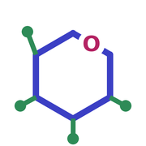

<!doctype html>
<html lang="fr"><head><meta charset="utf-8">
<meta name="viewport" content="width=device-width, initial-scale=1, viewport-fit=cover, user-scalable=no">
<title>Glucides — le jeu</title>
<link rel="manifest" href="jeu-glucides.webmanifest">
<link rel="apple-touch-icon" href="icons/glucides-180.png">
<link rel="icon" type="image/png" href="icons/glucides-192.png">
<meta name="apple-mobile-web-app-capable" content="yes"><meta name="mobile-web-app-capable" content="yes">
<meta name="apple-mobile-web-app-title" content="Glucides jeu">
<meta name="apple-mobile-web-app-status-bar-style" content="black-translucent">
<meta name="theme-color" content="#110f3d">
<style>
:root{--bg:#0f1530;--bg2:#18214a;--carte:#ffffff;--encre:#1b2233;--doux:#6b7385;--bleu:#3b5ff0;--bleu2:#1a3fd6;--or:#f5b82e;--vert:#16a34a;--vert-p:#dcfce7;--rouge:#e5484d;--rouge-p:#fee2e2;--trait:#e6e8ef;--violet:#7c3aed}
*{box-sizing:border-box;-webkit-tap-highlight-color:transparent}
html{background:#110f3d}html,body{margin:0;min-height:100%}
body{background:transparent;color:#fff;font:16px/1.45 -apple-system,"SF Pro Text","Segoe UI",system-ui,sans-serif;overscroll-behavior:none}
.app{max-width:560px;margin:0 auto;min-height:100%;padding:calc(env(safe-area-inset-top) + 10px) 14px calc(env(safe-area-inset-bottom) + 20px)}
.ic{width:20px;height:20px;fill:none;stroke:currentColor;stroke-width:2;stroke-linecap:round;stroke-linejoin:round;vertical-align:-4px;flex:none}
.ic.f{fill:currentColor;stroke:none}
button{font:inherit;color:inherit;border:0;background:none;cursor:pointer}
.top{display:flex;align-items:center;gap:10px;margin-bottom:12px}
.top .logo{width:42px;height:42px;border-radius:12px;background:#fff}
.top h1{font-size:1.15rem;margin:0;flex:1;line-height:1.15}.top h1 small{display:block;font-weight:400;opacity:.7;font-size:.78rem}
.stats{display:flex;gap:8px;margin:6px 0 14px}
.stat{flex:1;background:rgba(255,255,255,.08);border:1px solid rgba(255,255,255,.12);border-radius:14px;padding:8px 10px;display:flex;gap:8px;align-items:center}
.stat b{font-size:1.1rem;display:block;line-height:1}.stat span{font-size:.72rem;opacity:.75}
.stat .ic{width:26px;height:26px}
.flamme{color:#ff8a3d}.etoile{color:var(--or)}.eclair{color:#7dd3fc}
.rang{background:linear-gradient(135deg,#3b5ff0,#7c3aed);border-radius:16px;padding:12px 14px;margin-bottom:14px}
.rang .t{display:flex;justify-content:space-between;font-size:.85rem;opacity:.9}
.barre{height:10px;background:rgba(255,255,255,.2);border-radius:99px;overflow:hidden;margin-top:6px}
.barre i{display:block;height:100%;background:linear-gradient(90deg,#fde68a,#f5b82e);border-radius:99px;transition:width .5s}
.obj{margin-top:8px;font-size:.8rem;opacity:.9;display:flex;gap:6px;align-items:center}
.sect{font-size:.8rem;letter-spacing:.08em;text-transform:uppercase;opacity:.7;margin:18px 4px 8px}
.modes{display:grid;grid-template-columns:1fr 1fr;gap:10px}
.mode{background:var(--carte);color:var(--encre);border-radius:18px;padding:14px;text-align:left;display:flex;flex-direction:column;gap:6px;box-shadow:0 6px 0 rgba(0,0,0,.25);transition:transform .08s}
.mode:active{transform:translateY(3px);box-shadow:0 3px 0 rgba(0,0,0,.25)}
.mode .ic{width:28px;height:28px;color:var(--bleu2)}
.mode b{font-size:.98rem}.mode small{color:var(--doux);font-size:.76rem;line-height:1.25}
.mode.vedette{grid-column:1/-1;background:linear-gradient(135deg,#f5b82e,#ff8a3d);color:#2a1600}
.mode.vedette .ic{color:#2a1600}.mode.vedette small{color:#4a2a00}
.chemin{display:flex;flex-direction:column;gap:10px}
.niv{display:flex;align-items:center;gap:12px;background:var(--carte);color:var(--encre);border-radius:18px;padding:12px;text-align:left;box-shadow:0 6px 0 rgba(0,0,0,.25)}
.niv:active{transform:translateY(3px);box-shadow:0 3px 0 rgba(0,0,0,.25)}
.niv .rond{width:48px;height:48px;border-radius:50%;display:grid;place-items:center;background:var(--bleu);color:#fff;font-weight:800;font-size:1.1rem;flex:none}
.niv.boss .rond{background:var(--violet)}
.niv.fini .rond{background:var(--vert)}
.niv.verrou{opacity:.55}.niv.verrou .rond{background:#9aa1b2}
.niv .tx{flex:1}.niv .tx b{display:block;font-size:.95rem;line-height:1.2}.niv .tx small{color:var(--doux);font-size:.75rem;display:block;line-height:1.25}
.niv .etoiles{display:flex;gap:2px;color:#d7dae3}.niv .etoiles .on{color:var(--or)}
.niv .maitrise{height:5px;background:var(--trait);border-radius:9px;margin-top:5px;overflow:hidden}.niv .maitrise i{display:block;height:100%;background:var(--vert)}
/* écran de jeu */
.jeu{display:none}.jeu.on{display:block}.accueil.off{display:none}
.hud{display:flex;align-items:center;gap:10px;margin-bottom:12px}
.hud .quit{width:36px;height:36px;border-radius:50%;background:rgba(255,255,255,.12);display:grid;place-items:center}
.hud .prog{flex:1;height:14px;background:rgba(255,255,255,.15);border-radius:99px;overflow:hidden}
.hud .prog i{display:block;height:100%;background:linear-gradient(90deg,#4ade80,#16a34a);transition:width .3s}
.coeurs{display:flex;gap:2px;color:var(--rouge)}.coeurs .vide{color:rgba(255,255,255,.25)}
.combo{text-align:center;font-weight:800;color:var(--or);height:22px;font-size:.95rem}
.timer{text-align:center;font-weight:800;font-size:1.3rem;color:#7dd3fc}
.q{background:var(--carte);color:var(--encre);border-radius:22px;padding:18px 16px;box-shadow:0 8px 0 rgba(0,0,0,.25)}
.q .type{font-size:.72rem;text-transform:uppercase;letter-spacing:.08em;color:var(--bleu2);font-weight:700;display:flex;gap:6px;align-items:center}
.q h2{font-size:1.12rem;margin:8px 0 12px;line-height:1.3}
.q .struct{display:block;margin:0 auto 10px;max-width:100%;max-height:200px;background:#fff}
.q .struct.petit{max-height:130px}.q .struct.photo{max-height:210px;border-radius:14px;object-fit:cover;width:100%}
.q .grand.moyen{font-size:1.2rem;margin:2px 0 8px}.q .sousg{text-align:center;font-style:italic;opacity:.75;margin:-8px 0 12px;font-size:.85rem}.q .st{opacity:.7;font-size:.85rem;margin:-6px 0 10px}
.reveal .schema{display:block;width:100%;margin-top:10px;border-radius:10px;background:#fff}.hero-t em{display:block;font-style:normal;font-size:.72rem;opacity:.75;letter-spacing:.04em}
.q .grand{font-size:1.5rem;font-weight:800;text-align:center;color:var(--bleu2);margin:6px 0 14px}
.choix{display:grid;gap:9px}
.ch{background:#f4f5f9;border:2px solid var(--trait);border-radius:14px;padding:12px 12px;text-align:left;font-size:.95rem;color:var(--encre);box-shadow:0 3px 0 var(--trait)}
.ch:active{transform:translateY(2px);box-shadow:none}
.ch.ok{background:var(--vert-p);border-color:var(--vert);box-shadow:0 3px 0 var(--vert)}
.ch.ko{background:var(--rouge-p);border-color:var(--rouge);box-shadow:0 3px 0 var(--rouge);animation:shake .35s}
.vf{grid-template-columns:1fr 1fr}.vf .ch{text-align:center;font-weight:700;font-size:1.05rem}
@keyframes shake{25%{transform:translateX(-6px)}75%{transform:translateX(6px)}}
.fb{margin-top:12px;border-radius:14px;padding:12px;font-size:.9rem;display:none}
.fb.on{display:block}.fb.ok{background:var(--vert-p);color:#14532d}.fb.ko{background:var(--rouge-p);color:#7f1d1d}
.fb b{display:flex;gap:6px;align-items:center;margin-bottom:4px}
.suite{width:100%;margin-top:14px;background:var(--bleu);color:#fff;border-radius:16px;padding:14px;font-weight:800;font-size:1.02rem;box-shadow:0 5px 0 var(--bleu2);display:none}
.suite.on{display:block}.suite:active{transform:translateY(3px);box-shadow:0 2px 0 var(--bleu2)}
.reveal{background:#f4f5f9;border-radius:14px;padding:12px;margin-top:10px;display:none;font-size:.93rem}
.reveal.on{display:block}
.auto{display:none;grid-template-columns:1fr 1fr 1fr;gap:8px;margin-top:12px}.auto.on{display:grid}
.auto button{border-radius:14px;padding:12px 6px;font-weight:700;font-size:.85rem;color:#fff}
.auto .a1{background:var(--rouge)}.auto .a2{background:#f59e0b}.auto .a3{background:var(--vert)}
.voir{width:100%;margin-top:12px;background:var(--encre);color:#fff;border-radius:14px;padding:12px;font-weight:700}
canvas.dessin{width:100%;height:260px;background:#fff;border:2px dashed #c7cbd8;border-radius:14px;touch-action:none;display:block}
.outils{display:flex;gap:8px;margin-top:6px}.outils button{flex:1;background:#eef0f6;color:var(--encre);border-radius:10px;padding:8px;font-size:.85rem}
.paire{display:grid;grid-template-columns:1fr 1fr;gap:8px}
.paire button{background:#f4f5f9;border:2px solid var(--trait);border-radius:12px;padding:10px 8px;font-size:.85rem;color:var(--encre);min-height:52px}
.paire button.sel{border-color:var(--bleu);background:#e7ecfd}
.paire button.fait{visibility:hidden}
.paire button.ko{border-color:var(--rouge);animation:shake .35s}
/* fin */
.fin{text-align:center;padding:10px 0}
.fin .grosse{font-size:2.4rem;font-weight:900;margin:6px 0}
.fin .etoiles{display:flex;justify-content:center;gap:6px;color:rgba(255,255,255,.25)}.fin .etoiles .on{color:var(--or)}
.fin .etoiles .ic{width:46px;height:46px}
.gains{display:flex;gap:10px;justify-content:center;margin:14px 0}
.gains div{background:rgba(255,255,255,.1);border-radius:14px;padding:10px 14px}
.gains b{display:block;font-size:1.3rem}
.erreurs{background:var(--carte);color:var(--encre);border-radius:16px;padding:12px;text-align:left;margin-top:10px;font-size:.88rem}
.erreurs li{margin-bottom:6px}
.toast{position:fixed;left:50%;top:calc(env(safe-area-inset-top) + 14px);transform:translateX(-50%) translateY(-120px);background:#fff;color:var(--encre);border-radius:16px;padding:10px 16px;font-weight:700;box-shadow:0 10px 30px rgba(0,0,0,.35);transition:transform .35s;z-index:9;display:flex;gap:8px;align-items:center;max-width:92%}
.toast.on{transform:translateX(-50%) translateY(0)}
.badges{display:grid;grid-template-columns:repeat(4,1fr);gap:8px}
.badge{background:rgba(255,255,255,.07);border-radius:14px;padding:8px 4px;text-align:center;font-size:.66rem;opacity:.45}
.badge.on{opacity:1;background:rgba(245,184,46,.18)}
.badge .ic{width:26px;height:26px;color:var(--or);display:block;margin:0 auto 4px}
.note{font-size:.75rem;opacity:.6;text-align:center;margin-top:18px}
.confetti{position:fixed;inset:0;pointer-events:none;z-index:8}

.atl{background:#fff;border-radius:16px;margin:0 -4px}
.atl-barre{display:flex;gap:4px;overflow-x:auto;padding:4px 2px;scrollbar-width:none}
.atl-barre::-webkit-scrollbar{display:none}
.atl-o{flex:1 0 auto;min-width:52px;display:flex;flex-direction:column;align-items:center;gap:2px;padding:7px 4px;border-radius:12px;background:#f1f3f8;color:#1b2233;font-size:.62rem}
.atl-o .ic{width:22px;height:22px}.atl-o.on{background:#1a3fd6;color:#fff}
.atl-b2{justify-content:space-between;align-items:center}
.atl-coul{display:flex;gap:6px}.atl-c{width:30px;height:30px;border-radius:50%;border:3px solid #fff;box-shadow:0 0 0 1.5px #d4d8e3}.atl-c.on{box-shadow:0 0 0 3px #1a3fd6}
.atl-taille{display:flex;gap:4px}.atl-t{width:34px;height:34px;border-radius:10px;background:#f1f3f8;display:grid;place-items:center}.atl-t i{display:block;border-radius:50%;background:#1b2233}.atl-t.on{background:#dbe3ff}
.atl-atomes{display:none;flex-wrap:nowrap;overflow-x:auto;gap:5px;padding:4px 2px;scrollbar-width:none}.atl-atomes::-webkit-scrollbar{display:none}.atl-atomes.on{display:flex}
.atl-atomes button{flex:none;min-width:40px;padding:7px 8px;border-radius:10px;background:#f1f3f8;color:#1b2233;font-weight:700;font-size:.9rem}.atl-atomes button.on{background:#1a3fd6;color:#fff}
.atl-zone{position:relative;overflow:hidden;border-radius:14px}
.atl canvas{display:block;width:100%;height:56vh;max-height:520px;min-height:300px;background:#fff;border:2px solid #e3e6ee;border-radius:14px;touch-action:none;-webkit-user-select:none;user-select:none;-webkit-touch-callout:none;cursor:crosshair}
.atl-aide{position:absolute;left:8px;right:8px;bottom:6px;font-size:.7rem;color:#8a91a3;pointer-events:none;text-align:center}
.atl-b3 button{flex:1;display:flex;gap:4px;align-items:center;justify-content:center;padding:9px 6px;border-radius:12px;background:#f1f3f8;color:#1b2233;font-size:.78rem}
.atl-b3 .atl-voir{background:#1b2233;color:#fff;font-weight:700;flex:1.6}
.atl.plein{position:fixed;inset:0;z-index:20;border-radius:0;margin:0;padding:calc(env(safe-area-inset-top) + 6px) 8px calc(env(safe-area-inset-bottom) + 6px);display:flex;flex-direction:column}
.atl.plein .atl-zone{flex:1;display:flex}.atl.plein canvas{height:auto;flex:1;max-height:none}
body.sans-scroll{overflow:hidden}
@media (min-width:700px){.atl canvas{height:62vh;max-height:none}}


.atl-calque{position:absolute;left:50%;top:45%;transform:translate(-50%,-50%);max-width:80%;max-height:70%;opacity:0;pointer-events:none;mix-blend-mode:multiply;touch-action:none;-webkit-user-drag:none;user-select:none;transform-origin:center}
.atl-calque.on{pointer-events:auto;cursor:move;outline:2px dashed rgba(59,95,240,.55);outline-offset:4px;border-radius:6px}
.atl-feuille{position:absolute;left:6px;right:6px;bottom:6px;background:#fff;border-radius:16px;box-shadow:0 -6px 30px rgba(15,21,48,.25);padding:10px;transform:translateY(calc(100% + 12px));opacity:0;transition:transform .28s cubic-bezier(.2,.8,.2,1),opacity .2s;pointer-events:none;max-height:72%;display:flex;flex-direction:column}
.atl-feuille.mini .atl-f-corps{display:none}
.atl-ajust{display:none;gap:6px;align-items:center;margin-top:8px;flex-wrap:wrap}.atl-feuille.mini .atl-ajust{display:flex}
.atl-ajust button{min-width:40px;background:#f1f3f8;color:#1b2233;border-radius:10px;padding:8px 10px;font-weight:700}
.atl-ajust label{flex:1;display:flex;gap:6px;align-items:center;font-size:.72rem;color:#5d6577;min-width:150px}.atl-ajust input{flex:1}
.atl-feuille.on{transform:none;opacity:1;pointer-events:auto}
.atl-f-tete{display:flex;gap:6px;align-items:center;color:#1b2233}.atl-f-tete b{flex:1}
.atl-f-tete button{background:#f1f3f8;color:#1b2233;border-radius:10px;padding:6px 10px;font-size:.8rem}.atl-f-tete button.on{background:#1a3fd6;color:#fff}
.atl-f-corps{overflow:auto;min-height:0;flex:1;text-align:center}.atl-f-corps img{max-width:100%;max-height:30vh;display:block;margin:4px auto}.atl-f-corps p{margin:4px 0;font-size:.82rem;color:#5d6577}
.atl-note{display:grid;grid-template-columns:1fr 1fr 1fr;gap:6px;margin-top:8px}.atl-note button{border-radius:12px;padding:11px 4px;font-weight:700;font-size:.85rem;color:#fff}
.atl-note .a1{background:#e5484d}.atl-note .a2{background:#f59e0b}.atl-note .a3{background:#16a34a}
.atl-suite{display:none;margin-top:8px;background:#1a3fd6;color:#fff;border-radius:12px;padding:12px;font-weight:800;box-shadow:0 4px 0 #12309e}.atl-suite.on{display:block}

/* ===== monde : chambre de nuit ===== */
.ciel{position:fixed;inset:0;z-index:0;pointer-events:none;background:radial-gradient(130% 70% at 50% 0%,#2c3192 0%,#1b1960 42%,#110f3d 100%);overflow:hidden}
.ciel::before{content:"";position:absolute;inset:-60px;background:url(decor/foret.jpg) center/cover;filter:blur(26px) saturate(1.3);opacity:.32}
.ciel::after{content:"";position:absolute;inset:0;background:linear-gradient(180deg,rgba(17,15,61,0) 0%,rgba(17,15,61,.55) 70%,rgba(17,15,61,.85) 100%)}
.ciel i{position:absolute;width:5px;height:5px;border-radius:50%;background:#ffe9a8;box-shadow:0 0 10px 3px rgba(255,214,107,.55);opacity:0;animation:luciole 9s ease-in-out infinite;z-index:1}
@keyframes luciole{0%{opacity:0;transform:translate(0,0)}20%{opacity:.9}50%{transform:translate(18px,-40px)}80%{opacity:.7}100%{opacity:0;transform:translate(-10px,-90px)}}
.app{position:relative;z-index:1}
.hero{position:relative;margin:calc(-1*(env(safe-area-inset-top) + 10px)) -14px 0;height:calc(42vh + env(safe-area-inset-top));min-height:250px;max-height:440px}
.hero-v{position:absolute;inset:0;width:100%;height:100%;object-fit:cover;object-position:50% 58%;-webkit-mask-image:linear-gradient(180deg,#000 62%,transparent 100%);mask-image:linear-gradient(180deg,#000 62%,transparent 100%)}
.hero::before{content:"";position:absolute;left:0;right:0;top:0;height:42%;background:linear-gradient(180deg,rgba(17,15,61,.7),rgba(17,15,61,0));z-index:1;pointer-events:none}
.hero-haut{position:absolute;left:14px;right:14px;top:calc(env(safe-area-inset-top) + 12px);display:flex;align-items:center;gap:10px;z-index:2}
.hero-haut .logo{width:40px;height:40px;border-radius:12px;background:#fff;box-shadow:0 4px 14px rgba(0,0,0,.35)}
.hero-t{flex:1;line-height:1.15;text-shadow:0 2px 10px rgba(0,0,0,.5)}.hero-t small{display:block;font-size:.8rem;opacity:.9}.hero-t b{font-size:1.3rem}
.rond-btn{width:40px;height:40px;border-radius:50%;background:rgba(17,15,61,.45);border:1px solid rgba(255,255,255,.18);-webkit-backdrop-filter:blur(8px);backdrop-filter:blur(8px);display:grid;place-items:center}
.guir{position:absolute;left:0;right:0;bottom:-4px;width:100%;height:auto;z-index:2;overflow:visible}
.guir .fil{fill:none;stroke:rgba(20,18,60,.9);stroke-width:1.6}
.guir .ampoule{fill:#3a3f7a;stroke:rgba(255,255,255,.15);stroke-width:.6}
.guir .ampoule.on{fill:#ffd66b;stroke:#fff3c4;filter:drop-shadow(0 0 4px #ffd66b) drop-shadow(0 0 9px rgba(255,190,80,.8));animation:scint 3s ease-in-out infinite}
@keyframes scint{0%,100%{opacity:1}50%{opacity:.55}}
.lum{display:flex;align-items:center;justify-content:center;gap:6px;font-size:.78rem;color:#ffe9a8;margin:4px 0 10px;text-shadow:0 0 12px rgba(255,214,107,.5)}
.stat,.mode,.niv,.rang{-webkit-backdrop-filter:blur(12px);backdrop-filter:blur(12px)}
.stat{background:rgba(255,255,255,.09);border:1px solid rgba(255,255,255,.14)}
.rang{background:linear-gradient(135deg,rgba(109,124,255,.5),rgba(176,108,255,.42));border:1px solid rgba(255,255,255,.18);display:flex;gap:12px;align-items:center}
.rang .rg{flex:1}
.anneau{width:56px;height:56px;flex:none;position:relative}.anneau>svg{width:56px;height:56px;transform:rotate(-90deg)}
.anneau b .ic{width:26px;height:26px;vertical-align:0;color:#ffd66b;stroke-width:3}
.anneau circle{fill:none;stroke-width:6}.anneau .f{stroke:rgba(255,255,255,.18)}.anneau .p{stroke:#ffd66b;stroke-linecap:round;transition:stroke-dashoffset .8s}
.anneau b{position:absolute;inset:0;display:grid;place-items:center;font-size:.7rem;line-height:1.05;text-align:center}
.go{display:flex;align-items:center;gap:12px;width:100%;background:linear-gradient(135deg,#ffd66b,#ff9fb8);color:#2b1340;border-radius:20px;padding:13px 14px;box-shadow:0 6px 0 #b9577a,0 0 34px rgba(255,190,120,.35);text-align:left;margin:12px 0 2px}
.go:active{transform:translateY(3px);box-shadow:0 3px 0 #b9577a}
.go .r{width:48px;height:48px;border-radius:50%;background:#fff;display:grid;place-items:center;flex:none;animation:respire 2.4s ease-in-out infinite;color:#b9577a}
.go .r .ic{width:22px;height:22px;fill:currentColor}
.go small{display:block;font-size:.75rem;opacity:.8}.go b{font-size:1.05rem}
@keyframes respire{50%{transform:scale(1.08);box-shadow:0 0 22px rgba(255,255,255,.7)}}
.mode{background:rgba(255,255,255,.08);color:#fff;border:1px solid rgba(255,255,255,.13);box-shadow:0 6px 0 rgba(5,4,30,.35)}
.mode .ic{color:#b3c0ff}.mode small{color:rgba(255,255,255,.68)}
.mode.vedette{background:linear-gradient(135deg,rgba(109,124,255,.85),rgba(176,108,255,.8));color:#fff}
.mode.vedette .ic{color:#fff}.mode.vedette small{color:rgba(255,255,255,.88)}
.chemin{position:relative}
.chemin::before{content:"";position:absolute;left:35px;top:24px;bottom:24px;border-left:3px dotted rgba(255,214,107,.4)}
.niv{position:relative;background:rgba(255,255,255,.09);color:#fff;border:1px solid rgba(255,255,255,.13);box-shadow:0 6px 0 rgba(5,4,30,.35)}
.niv .tx small{color:rgba(255,255,255,.66)}
.niv .etoiles{color:rgba(255,255,255,.2)}
.niv .maitrise{background:rgba(255,255,255,.14)}.niv .maitrise i{background:linear-gradient(90deg,#7cf0c5,#4ade80)}
.niv .rond{background:linear-gradient(145deg,#6d7cff,#4a55d8)}
.niv.fini .rond{background:linear-gradient(145deg,#4ade80,#14a37f)}
.niv.boss .rond{background:linear-gradient(145deg,#c084fc,#7c3aed)}
.niv.verrou{opacity:1;background:rgba(8,6,36,.5);border:1px dashed rgba(255,255,255,.16)}
.niv.verrou .tx,.niv.verrou .etoiles{opacity:.45}.niv.verrou .rond{background:rgba(255,255,255,.1);color:rgba(255,255,255,.55)}
.niv.actuel{border-color:rgba(255,214,107,.8);box-shadow:0 0 0 1px rgba(255,214,107,.6),0 0 26px rgba(255,214,107,.28),0 6px 0 rgba(5,4,30,.35)}
.niv.actuel .rond{background:radial-gradient(circle at 35% 30%,#fff1c2,#ffb84d);color:#3b1d00;animation:respire 2.4s ease-in-out infinite}
.badge{background:rgba(255,255,255,.07);border:1px solid rgba(255,255,255,.08)}
.badge.on{background:rgba(255,214,107,.16);border-color:rgba(255,214,107,.4);box-shadow:0 0 18px rgba(255,214,107,.18)}
.hud .quit{background:rgba(255,255,255,.14)}
.q{box-shadow:0 8px 0 rgba(5,4,30,.4),0 20px 50px rgba(5,4,30,.35)}
/* coffre surprise */
.coffre{display:flex;align-items:center;gap:14px;width:100%;margin:14px 0 4px;padding:14px;border-radius:20px;text-align:left;color:#fff;background:linear-gradient(135deg,rgba(255,214,107,.28),rgba(255,159,184,.25));border:1px solid rgba(255,214,107,.55);box-shadow:0 0 30px rgba(255,214,107,.25)}
.coffre .bx{width:58px;height:58px;border-radius:16px;display:grid;place-items:center;background:linear-gradient(145deg,#ffd66b,#ff9f6b);color:#4a1d00;flex:none;animation:respire 2s ease-in-out infinite}
.coffre .bx .ic{width:30px;height:30px}
.coffre small{display:block;opacity:.8;font-size:.78rem}
.coffre.ouvre .bx{animation:secoue .6s}
.coffre.fait{cursor:default}.coffre.fait .bx{animation:pop .5s cubic-bezier(.2,1.6,.4,1)}
@keyframes secoue{0%,100%{transform:rotate(0)}20%{transform:rotate(-12deg) scale(1.05)}40%{transform:rotate(10deg) scale(1.1)}60%{transform:rotate(-8deg) scale(1.15)}80%{transform:rotate(6deg) scale(1.2)}}
/* célébration plein écran */
.fete{position:fixed;inset:0;z-index:30;display:none;place-items:center;text-align:center;padding:24px;overflow:hidden;background:#110f3d}
.fete.on{display:grid;animation:apparait .35s ease-out}
.fete-bg{position:absolute;inset:0;width:100%;height:100%;object-fit:cover;filter:saturate(1.25) brightness(.5)}
.rayons{position:absolute;left:50%;top:42%;width:200vmax;height:200vmax;margin:-100vmax 0 0 -100vmax;background:repeating-conic-gradient(rgba(255,230,160,.13) 0 7deg,transparent 7deg 20deg);animation:tourne 22s linear infinite;-webkit-mask-image:radial-gradient(circle,#000 0,transparent 45%);mask-image:radial-gradient(circle,#000 0,transparent 45%)}
.fete-c{position:relative;z-index:2;max-width:360px;width:100%}
.halo{width:150px;height:150px;margin:0 auto 18px;border-radius:50%;display:grid;place-items:center;background:radial-gradient(circle,#fff8e1 0%,#ffd66b 46%,rgba(255,214,107,0) 72%);animation:pop .7s cubic-bezier(.2,1.6,.4,1) both,flotte 3s 0.7s ease-in-out infinite;color:#3b1d00;font-size:3.6rem;font-weight:900}
.halo .ic{width:64px;height:64px}
.sur{display:inline-block;font-size:.75rem;letter-spacing:.14em;text-transform:uppercase;color:#ffe9a8;background:rgba(255,214,107,.15);border:1px solid rgba(255,214,107,.4);border-radius:99px;padding:4px 12px;animation:monte .5s .2s both}
.fete h2{font-size:1.9rem;line-height:1.15;margin:10px 0 6px;text-shadow:0 2px 24px rgba(255,214,107,.6);animation:monte .5s .32s both}
.fete p{opacity:.9;margin:0 0 6px;animation:monte .5s .44s both}
.fete .etoiles{display:flex;justify-content:center;gap:8px;margin:12px 0 4px}
.fete .etoiles span{color:rgba(255,255,255,.2)}.fete .etoiles .on{color:#ffd66b;filter:drop-shadow(0 0 8px #ffd66b);animation:pop .5s cubic-bezier(.2,1.6,.4,1) both}
.fete .etoiles .ic{width:44px;height:44px}
.fete .suite{animation:monte .5s .6s both;background:linear-gradient(135deg,#ffd66b,#ff9fb8);color:#2b1340;box-shadow:0 5px 0 #b9577a}
@keyframes apparait{from{opacity:0}}
@keyframes pop{from{transform:scale(0)}to{transform:scale(1)}}
@keyframes monte{from{opacity:0;transform:translateY(18px)}}
@keyframes tourne{to{transform:rotate(360deg)}}
@keyframes flotte{50%{transform:translateY(-8px) scale(1.04)}}
.confetti{z-index:31}
.suite{background:linear-gradient(135deg,#6d7cff,#a66cff);box-shadow:0 5px 0 #4b3aa8}
@media (prefers-reduced-motion:reduce){.ciel i,.rayons,.halo,.go .r,.niv.actuel .rond,.coffre .bx,.guir .ampoule.on{animation:none}}

/* ===== monde : forêt enchantée ===== */
html{background:#0c1d0f}
.ciel{background:radial-gradient(130% 70% at 50% 0%,#3f6b2a 0%,#1d3a19 45%,#0c1d0f 100%)}
.ciel::before{opacity:.38;filter:blur(24px) saturate(1.35)}
.ciel::after{background:linear-gradient(180deg,rgba(12,29,15,0) 0%,rgba(12,29,15,.5) 65%,rgba(12,29,15,.88) 100%)}
.ciel i{background:#fff6b0;box-shadow:0 0 10px 3px rgba(230,255,140,.55)}
.hero-v{object-position:50% 62%}
.hero::before{background:linear-gradient(180deg,rgba(12,29,15,.65),rgba(12,29,15,0))}
.rond-btn{background:rgba(12,29,15,.45)}
.guir .fil{stroke:#3c6e2a;stroke-width:2.6}
.guir .ampoule{fill:#2b4a25;stroke:rgba(190,255,150,.18)}
.guir .ampoule.on{fill:#ffd6ec;stroke:#fff8d6;filter:drop-shadow(0 0 4px #ffe58a) drop-shadow(0 0 9px rgba(255,200,230,.85))}
.lum{color:#f3ffc8;text-shadow:0 0 12px rgba(220,255,150,.5)}
.rang{background:linear-gradient(135deg,rgba(84,160,74,.55),rgba(196,170,60,.4));border-color:rgba(230,255,180,.2)}
.anneau .p{stroke:#ffe58a}
.go{background:linear-gradient(135deg,#ffe58a,#b9eb8f);color:#173214;box-shadow:0 6px 0 #4f8a35,0 0 34px rgba(230,255,140,.35)}
.go .r{color:#3f7a2c}.go:active{box-shadow:0 3px 0 #4f8a35}
.mode .ic{color:#c9f59a}
.mode.vedette{background:linear-gradient(135deg,rgba(96,170,70,.9),rgba(205,175,60,.85))}
.mode.large{grid-column:1/-1}
.chemin::before{border-left-color:rgba(230,255,150,.35)}
.niv .rond{background:linear-gradient(145deg,#6fbf5a,#2f7d3a)}
.niv.fini .rond{background:linear-gradient(145deg,#ffe58a,#c99b2e);color:#3b2a00}
.niv.boss .rond{background:linear-gradient(145deg,#7a5c3a,#3d2b18)}
.niv .maitrise i{background:linear-gradient(90deg,#d8ff8a,#5cc157)}
.niv.actuel{border-color:rgba(255,229,138,.85)}
.q .type{color:#2f7d3a}.q .grand{color:#255f2a}
.suite{background:linear-gradient(135deg,#5cb85c,#2f8a43);box-shadow:0 5px 0 #1f5e2c}
.suite:active{box-shadow:0 2px 0 #1f5e2c}
.paire button.sel{border-color:#2f8a43;background:#e5f6df}
.hud .prog i{background:linear-gradient(90deg,#d8ff8a,#5cc157)}
.combo{color:#ffe58a}.timer{color:#d8ff8a}
.fete{background:#0c1d0f}
.fete .suite{background:linear-gradient(135deg,#ffe58a,#b9eb8f);color:#173214;box-shadow:0 5px 0 #4f8a35}
.rayons{background:repeating-conic-gradient(rgba(240,255,170,.14) 0 7deg,transparent 7deg 20deg)}
.halo{background:radial-gradient(circle,#fffbe0 0%,#e9ff9a 46%,rgba(220,255,140,0) 72%)}
.coffre{background:linear-gradient(135deg,rgba(255,229,138,.25),rgba(140,210,110,.25));border-color:rgba(255,229,138,.55)}
.coffre .bx{background:linear-gradient(145deg,#ffe58a,#a8d86a);color:#2b3d10}
.badge.on{background:rgba(220,255,150,.14);border-color:rgba(220,255,150,.4)}.badge .ic{color:#ffe58a}
.atl-o.on,.atl-suite{background:#2f7d3a}.atl-c.on{box-shadow:0 0 0 3px #2f7d3a}.atl-t.on{background:#dff3d6}
/* le bon panier */
.tri-et{display:flex;flex-wrap:wrap;gap:8px;margin-bottom:14px}
.et{background:#f3f8ef;border:2px solid #d6e8cc;border-radius:99px;padding:8px 13px;font-size:.88rem;color:#1b2b17;box-shadow:0 3px 0 #d6e8cc;transition:transform .15s}
.et.sel{border-color:#2f8a43;background:#dff3d6;transform:translateY(-3px) scale(1.04);box-shadow:0 6px 0 #2f8a43}
.et.fait{opacity:0;transform:scale(.5);pointer-events:none;position:absolute}
.tri-pan{display:grid;grid-template-columns:1fr 1fr;gap:8px}.tri-pan.n3 .pan:last-child{grid-column:1/-1}
.pan{background:linear-gradient(180deg,#fbf3df,#f1e2b8);border:2px dashed #c9a85a;border-radius:16px;padding:10px;min-height:92px;color:#4a3610;text-align:center;display:flex;flex-direction:column;align-items:center;gap:4px}
.pan .ic{width:26px;height:26px;color:#8a6a1f}.pan b{font-size:.86rem;line-height:1.15}
.pan .dans{display:flex;flex-wrap:wrap;gap:4px;justify-content:center}.pan .dans i{font-style:normal;font-size:.7rem;background:#2f8a43;color:#fff;border-radius:99px;padding:2px 8px;animation:pop .3s}
.pan.pulse{animation:bump .35s}@keyframes bump{50%{transform:scale(1.06)}}.pan.ko{border-color:var(--rouge);animation:shake .35s}
/* herbier */
.herb-btn{display:flex;gap:12px;align-items:center;width:100%;text-align:left;padding:12px;border-radius:18px;background:rgba(255,255,255,.08);border:1px solid rgba(230,255,180,.2);-webkit-backdrop-filter:blur(12px);backdrop-filter:blur(12px);box-shadow:0 6px 0 rgba(4,14,5,.35)}
.herb-btn small{display:block;opacity:.72;font-size:.76rem;line-height:1.25}.herb-btn .maitrise{display:block;height:6px;border-radius:9px;background:rgba(255,255,255,.14);margin-top:7px;overflow:hidden}.herb-btn .maitrise i{display:block;height:100%;background:linear-gradient(90deg,#d8ff8a,#5cc157)}
.hb-ic{width:52px;height:52px;border-radius:16px;display:grid;place-items:center;background:linear-gradient(145deg,#b9eb8f,#4f8a35);color:#173214;flex:none}.hb-ic .ic{width:28px;height:28px}
.herb-t{flex:1;line-height:1.2}.herb-t small{display:block;opacity:.7;font-size:.75rem}
.onglets{display:flex;gap:8px;margin:4px 0 12px}.onglets button{flex:1;padding:9px;border-radius:12px;background:rgba(255,255,255,.08);border:1px solid rgba(255,255,255,.12);font-weight:700;font-size:.85rem}.onglets .on{background:#ffe58a;color:#173214}
.herb-g{display:grid;grid-template-columns:repeat(3,1fr);gap:8px}@media(min-width:600px){.herb-g{grid-template-columns:repeat(4,1fr)}}
.spec{background:#fbf8ee;color:#1b2b17;border-radius:14px;padding:6px 6px 8px;display:flex;flex-direction:column;gap:3px;text-align:center;border:3px solid #e2dcc6;box-shadow:0 4px 0 rgba(4,14,5,.35)}
.spec img{width:100%;aspect-ratio:1;object-fit:cover;border-radius:9px;background:#fff}.spec.mol img{object-fit:contain}
.spec b{font-size:.72rem;line-height:1.15}.spec small{font-size:.62rem;opacity:.7;line-height:1.15}
.spec.cache img{filter:grayscale(1) brightness(.35) blur(3px)}.spec.cache{opacity:.75}
.spec.or{border-color:#e0b43c;box-shadow:0 0 0 1px #ffe58a,0 0 16px rgba(255,229,138,.45),0 4px 0 rgba(4,14,5,.35)}
.spec .sans{display:grid;place-items:center;aspect-ratio:1;color:#2f7d3a}.spec .sans .ic{width:34px;height:34px}
#fiche{position:fixed;inset:0;z-index:25;display:none;align-items:flex-end;justify-content:center;background:rgba(5,14,6,.6);padding:14px;padding-bottom:calc(env(safe-area-inset-bottom) + 14px)}
#fiche.on{display:flex}#fiche .q{max-width:540px;width:100%;max-height:86vh;overflow:auto;animation:monte .3s both}#fiche p{font-size:.9rem;margin:6px 0}
@media (min-width:600px){.hero{margin-left:calc(50% - 50vw);margin-right:calc(50% - 50vw);max-height:none;height:calc(46vh + env(safe-area-inset-top))}.hero-haut{left:max(14px,calc(50vw - 266px));right:max(14px,calc(50vw - 266px))}.guir{left:calc(50vw - 280px);width:560px}}
@media (prefers-reduced-motion:reduce){.et,.pan.pulse{animation:none;transition:none}}
</style></head><body>
<div class="ciel" id="ciel"></div>
<svg width="0" height="0" style="position:absolute"><defs>
<symbol id="i-flamme" viewBox="0 0 24 24"><path d="M12 2c1 4 5 5.5 5 10a5 5 0 0 1-10 0c0-2 1-3.5 2-4.5 0 2 1 3 2 3 0-3-1-5 1-8.5z"/></symbol>
<symbol id="i-etoile" viewBox="0 0 24 24"><path d="m12 2.5 2.9 6 6.6.9-4.8 4.6 1.2 6.5L12 17.4l-5.9 3.1 1.2-6.5L2.5 9.4l6.6-.9z"/></symbol>
<symbol id="i-eclair" viewBox="0 0 24 24"><path d="M13 2 4 14h7l-1 8 9-12h-7z"/></symbol>
<symbol id="i-coeur" viewBox="0 0 24 24"><path d="M12 21s-8-5.2-8-11a4.5 4.5 0 0 1 8-2.8A4.5 4.5 0 0 1 20 10c0 5.8-8 11-8 11z"/></symbol>
</defs></svg>
<div class="app">
 <section class="accueil" id="accueil"></section>
 <section class="jeu" id="jeu"></section>
</div>
<div class="toast" id="toast"></div>
<div class="fete" id="fete"></div>
<canvas class="confetti" id="confetti"></canvas>
<script>window.DATA={"tri": [{"id": "oses", "lv": 1, "t": "Quel type d'ose ?", "cats": {"Ose classique": ["D-Glucose", "D-Galactose", "D-Mannose", "D-Fructose", "D-Tagatose", "D-Ribose", "D-Xylose"], "Désoxyose": ["L-Rhamnose", "2-Désoxy-D-ribose"], "Acide uronique": ["Acide D-glucuronique", "Acide D-galacturonique"], "Acide aldonique": ["Acide gluconique"], "Polyol": ["Sorbitol", "Mannitol", "Xylitol"], "Ose aminé": ["Glucosamine"]}}, {"id": "aldcet", "lv": 0, "t": "Aldose ou cétose ?", "cats": {"Aldose": ["Glucose", "Galactose", "Mannose", "Ribose", "Xylose"], "Cétose": ["Fructose", "Tagatose"]}}, {"id": "cycle", "lv": 0, "t": "Cycle pyranique ou furanique ?", "cats": {"Pyranique (6 atomes)": ["Glucose (glucopyranose)", "Galactose du lactose", "Glucose de l'amidon"], "Furanique (5 atomes)": ["Fructose du saccharose", "Fructose de l'inuline", "Ribose de l'ARN"]}}, {"id": "reduc", "lv": 2, "t": "Sucre réducteur ou non ?", "cats": {"Réducteur": ["Maltose", "Lactose", "Lactulose", "Glucose", "Galactose"], "Non réducteur": ["Saccharose", "Raffinose", "β-Cyclodextrine", "Sorbitol", "Mannitol"]}}, {"id": "homo", "lv": 3, "t": "Polysaccharide homogène ou hétérogène ?", "cats": {"Homogène (1 seul ose)": ["Amidon", "Cellulose", "Inuline", "Chitine", "Dextranes", "Lentinane"], "Hétérogène": ["Alginates", "Agar-agar", "Carraghénanes", "Gommes", "Mucilages", "Pectines", "Gomme xanthane", "Acide hyaluronique", "Chondroïtine sulfate", "Héparines"]}}, {"id": "origine", "lv": 4, "t": "Quelle origine ?", "cats": {"Algues": ["Alginates", "Agar-agar", "Carraghénanes"], "Végétale": ["Gommes", "Mucilages", "Pectines", "Gel d'aloès"], "Bactérienne": ["Gomme xanthane", "Dextranes"], "Animale": ["Acide hyaluronique", "Chondroïtine sulfate", "Héparines", "Chitine"]}}, {"id": "fibres", "lv": 4, "t": "Fibre soluble ou insoluble ?", "cats": {"Soluble (gel)": ["Pectines", "Gommes", "Mucilages", "Inuline"], "Insoluble (lest)": ["Cellulose", "Hémicelluloses", "Lignine"]}}], "liX": [{"id": "maltodextrines", "nom": "Maltodextrines", "li": "Courtes chaînes de Glc α1→4 (hydrolyse partielle de l'amidon)", "lv": 2}], "dessinX": [{"id": "glucose-fischer-haworth", "nom": "D-Glucose : Fischer, puis Haworth α et β", "img": "img/schemas/ch1-glucose-representations.png", "dessin": true, "lv": 0, "sc": "Exigé par la matière d'examen", "struct": "Fischer : C1 aldéhyde en haut, OH du C5 à droite (D). Haworth : α = OH du C1 en bas, β = en haut."}], "mol": [{"id": "glucose", "nom": "D-Glucose (dextrose)", "sc": "Oses simples — aldohexose", "cl": "Glucides", "img": "mol/glucose.svg", "dessin": true, "niv": "dessiner", "sol": "H₂O", "rx": "NON", "rxn": "Polyols/oses neutres : pas de COOH, pas de phénol, pas d'amine → aucune réaction sans chauffage avec NaOH ou HCl (l'hydrolyse des liaisons osidiques demande un chauffage en milieu acide).", "usage": "Solutions parentérales : apport calorique (dénutrition), hypoglycémies, véhicule en chirurgie, prévention des déshydratations.", "ori": "Fruits, miel (libre)", "prop": "Dextrogyre ; 1er produit de la photosynthèse → précurseur de tous les métabolites ; principal carburant des tissus.", "tox": "Solutions concentrées = hypertoniques.", "struct": "Aldohexose (CHO en C1, 4 C* ; OH en C2 à droite, C3 à gauche, C4 et C5 à droite en Fischer). Ici α-D-glucopyranose : cycle pyranique C1–O–C5, OH anomérique en bas (α). Savoir la forme linéaire (Fischer) ET cyclique (Haworth).", "lv": 0, "li": ""}, {"id": "galactose", "nom": "D-Galactose", "sc": "Oses simples — aldohexose", "cl": "Glucides", "img": "mol/galactose.svg", "dessin": true, "niv": "dessiner", "sol": "H₂O", "rx": "NON", "rxn": "Polyols/oses neutres : pas de COOH, pas de phénol, pas d'amine → aucune réaction sans chauffage avec NaOH ou HCl (l'hydrolyse des liaisons osidiques demande un chauffage en milieu acide).", "usage": "Constituant du lactose, des galactomannanes (guar, caroube), de l'agar ; isomérisé en tagatose.", "ori": "Lactose (lait)", "prop": "Stéréoisomère naturel du glucose ; existe surtout combiné (polysaccharides, lactose).", "tox": "", "struct": "Aldohexose **épimère en C4 du glucose** (OH en C4 à gauche en Fischer → au-dessus en Haworth). Ici α-D-galactopyranose.", "lv": 0, "li": ""}, {"id": "mannose", "nom": "D-Mannose", "sc": "Oses simples — aldohexose", "cl": "Glucides", "img": "mol/mannose.svg", "dessin": false, "niv": "commenter", "sol": "H₂O", "rx": "NON", "rxn": "Polyols/oses neutres : pas de COOH, pas de phénol, pas d'amine → aucune réaction sans chauffage avec NaOH ou HCl (l'hydrolyse des liaisons osidiques demande un chauffage en milieu acide).", "usage": "Unité des galactomannanes (guar, caroube) et des glucomannanes ; mannose acétylé dans la xanthane.", "ori": "Polysaccharides : gommes, mucilages (galactomannanes, glucomannanes), xanthane", "prop": "Stéréoisomère naturel du glucose, existe pratiquement uniquement sous forme de polysaccharides.", "tox": "", "struct": "Aldohexose **épimère en C2 du glucose**. Ici α-D-mannopyranose.", "lv": 0, "li": ""}, {"id": "fructose", "nom": "D-Fructose (lévulose)", "sc": "Oses simples — cétohexose", "cl": "Glucides", "img": "mol/fructose.svg", "dessin": true, "niv": "dessiner", "sol": "H₂O", "rx": "NON", "rxn": "Polyols/oses neutres : pas de COOH, pas de phénol, pas d'amine → aucune réaction sans chauffage avec NaOH ou HCl (l'hydrolyse des liaisons osidiques demande un chauffage en milieu acide).", "usage": "Alimentation parentérale ; régime de certains diabétiques (études contradictoires) ; alimentation à l'effort ; édulcorant.", "ori": "Fruits et miel (libre)", "prop": "Lévogyre ; pouvoir sucrant 1,7 ; résorption intestinale lente sans insulinosécrétion.", "tox": "Chez le diabétique de type 2 en surpoids : apporte des calories, ↑ résistance à l'insuline et triglycérides (notes).", "struct": "**Cétohexose** (C=O en C2). Ici β-D-fructofuranose (cycle à 5 : C2–O–C5), forme présente dans le saccharose et l'inuline ; à l'état libre il est plutôt fructopyranose.", "lv": 0, "li": ""}, {"id": "tagatose", "nom": "D-Tagatose", "sc": "Oses simples — cétohexose (non naturel)", "cl": "Glucides", "img": "mol/tagatose.svg", "dessin": true, "niv": "dessiner", "sol": "H₂O", "rx": "NON", "rxn": "Polyols/oses neutres : pas de COOH, pas de phénol, pas d'amine → aucune réaction sans chauffage avec NaOH ou HCl (l'hydrolyse des liaisons osidiques demande un chauffage en milieu acide).", "usage": "Nouvel édulcorant ; humectant, texturant, épaississant en industrie alimentaire.", "ori": "Préparé à partir du lactose : galactosidase d'Aspergillus oryzae → galactose, puis isomérisation", "prop": "Édulcorant (pouvoir sucrant ~0,8–0,9), prébiotique, peu d'effet sur la glycémie, très peu calorique, non cariogène.", "tox": "", "struct": "Cétohexose **épimère en C4 du fructose** (= galactulose). Dessiné ici en chaîne ouverte (C2 = cétone) ; seul l'OH en C4 change par rapport au fructose.", "lv": 0, "li": ""}, {"id": "rhamnose", "nom": "L-Rhamnose", "sc": "Désoxyoses", "cl": "Glucides", "img": "mol/rhamnose.svg", "dessin": false, "niv": "commenter", "sol": "H₂O", "rx": "NON", "rxn": "Polyols/oses neutres : pas de COOH, pas de phénol, pas d'amine → aucune réaction sans chauffage avec NaOH ou HCl (l'hydrolyse des liaisons osidiques demande un chauffage en milieu acide).", "usage": "Constituant du rutinose et du néohespéridose ; crée les « coudes » des pectines.", "ori": "Hétérosides (rutinose, néohespéridose des flavonoïdes)", "prop": "Désoxyose très fréquent dans les polymères et hétérosides.", "tox": "", "struct": "**6-désoxy-L-mannose** : CH3 en C6 à la place de CH2OH ; série **L**. Ici α-L-rhamnopyranose.", "lv": 1, "li": ""}, {"id": "ribose", "nom": "D-Ribose", "sc": "Oses simples — aldopentose", "cl": "Glucides", "img": "mol/ribose.svg", "dessin": false, "niv": "commenter", "sol": "H₂O", "rx": "NON", "rxn": "Polyols/oses neutres : pas de COOH, pas de phénol, pas d'amine → aucune réaction sans chauffage avec NaOH ou HCl (l'hydrolyse des liaisons osidiques demande un chauffage en milieu acide).", "usage": "", "ori": "Universel : ARN, nucléosides, ATP, coenzymes", "prop": "Pentose universel des acides ribonucléiques (N-hétérosides avec bases puriques/pyrimidiques).", "tox": "", "struct": "Aldopentose ; ici β-D-ribofuranose (cycle à 5) comme dans les nucléotides.", "lv": 0, "li": ""}, {"id": "desoxyribose", "nom": "2-Désoxy-D-ribose", "sc": "Désoxyoses", "cl": "Glucides", "img": "mol/desoxyribose.svg", "dessin": false, "niv": "commenter", "sol": "H₂O", "rx": "NON", "rxn": "Polyols/oses neutres : pas de COOH, pas de phénol, pas d'amine → aucune réaction sans chauffage avec NaOH ou HCl (l'hydrolyse des liaisons osidiques demande un chauffage en milieu acide).", "usage": "", "ori": "Universel : ADN", "prop": "Sucre de l'ADN ; phosphates en C3 et C5.", "tox": "", "struct": "Ribose sans OH en **C2** (CH2) ; β-2-désoxy-D-ribofuranose.", "lv": 1, "li": ""}, {"id": "xylose", "nom": "D-Xylose", "sc": "Oses simples — aldopentose", "cl": "Glucides", "img": "mol/xylose.svg", "dessin": true, "niv": "dessiner", "sol": "H₂O", "rx": "NON", "rxn": "Polyols/oses neutres : pas de COOH, pas de phénol, pas d'amine → aucune réaction sans chauffage avec NaOH ou HCl (l'hydrolyse des liaisons osidiques demande un chauffage en milieu acide).", "usage": "Matière première du xylitol.", "ori": "Xylanes du bois (hydrolyse)", "prop": "Constituant des hémicelluloses (chaînes de xylose).", "tox": "", "struct": "Aldopentose (comme le glucose sans le CH2OH : OH en C2, C3, C4 orientés comme dans le glucose) ; ici β-D-xylopyranose.", "lv": 0, "li": ""}, {"id": "sorbitol", "nom": "D-Sorbitol (D-glucitol)", "sc": "Polyols", "cl": "Glucides", "img": "mol/sorbitol.svg", "dessin": true, "niv": "dessiner", "sol": "H₂O", "rx": "NON", "rxn": "Polyols/oses neutres : pas de COOH, pas de phénol, pas d'amine → aucune réaction sans chauffage avec NaOH ou HCl (l'hydrolyse des liaisons osidiques demande un chauffage en milieu acide).", "usage": "Parentéral (comme le glucose) ; oral : cholagogue, laxatif osmotique ; régulateur d'humidité des poudres ; matière première des spans/tweens/polysorbates ; produits pour diabétiques.", "ori": "Fruits du sorbier des oiseleurs (Sorbus aucuparia)", "prop": "Édulcorant de masse non cariogène (pouvoir sucrant 0,6), peu résorbé ; très hygroscopique ; très soluble dans l'eau et soluble dans l'alcool.", "tox": "Troubles digestifs (fermentation colique) ; cholagogue contre-indiqué si obstruction des voies biliaires.", "struct": "Hexitol linéaire : le C1 du glucose (CHO) réduit en CH2OH → 6 fonctions alcool, pas de cycle. Configuration = celle du glucose.", "lv": 1, "li": ""}, {"id": "mannitol", "nom": "D-Mannitol", "sc": "Polyols", "cl": "Glucides", "img": "mol/mannitol.svg", "dessin": true, "niv": "dessiner", "sol": "H₂O", "rx": "NON", "rxn": "Polyols/oses neutres : pas de COOH, pas de phénol, pas d'amine → aucune réaction sans chauffage avec NaOH ou HCl (l'hydrolyse des liaisons osidiques demande un chauffage en milieu acide).", "usage": "Parentéral : diurétique osmotique (œdèmes, exploration rénale) ; oral : cholagogue, laxatif osmotique, édulcorant pour diabétiques ; excipient (préféré au lactose avec l'acide folique pour éviter la réaction de Maillard).", "ori": "Manne du frêne à fleurs (Fraxinus ornus)", "prop": "Pouvoir sucrant 0,7 ; soluble dans l'eau, insoluble dans les solvants organiques.", "tox": "Troubles digestifs ; cholagogue CI si obstruction biliaire.", "struct": "Hexitol linéaire correspondant au mannose réduit (OH en C2 et C3 du même côté) ; molécule symétrique.", "lv": 1, "li": ""}, {"id": "xylitol", "nom": "Xylitol", "sc": "Polyols (non naturel)", "cl": "Glucides", "img": "mol/xylitol.svg", "dessin": true, "niv": "dessiner", "sol": "H₂O", "rx": "NON", "rxn": "Polyols/oses neutres : pas de COOH, pas de phénol, pas d'amine → aucune réaction sans chauffage avec NaOH ou HCl (l'hydrolyse des liaisons osidiques demande un chauffage en milieu acide).", "usage": "Confiserie (chewing-gums), formulation de sirops.", "ori": "Non naturel : réduction du xylose issu de l'hydrolyse des xylanes (rafles de maïs, bouleau, pailles)", "prop": "Non cariogène, saveur fraîche ; pouvoir sucrant 0,9.", "tox": "Troubles digestifs en excès.", "struct": "Pentitol linéaire (xylose réduit) : 5 fonctions alcool, molécule méso.", "lv": 1, "li": ""}, {"id": "acide-glucuronique", "nom": "Acide D-glucuronique", "sc": "Acides uroniques", "cl": "Glucides", "img": "mol/acide-glucuronique.svg", "dessin": true, "niv": "dessiner", "sol": "H₂O", "rx": "OUI + NaOH", "rxn": "COOH → carboxylate de sodium avec NaOH à froid.", "usage": "Constituant de nombreux polysaccharides (rôle dans leur caractère anionique et gélifiant).", "ori": "Gommes (Sterculia), mucilages, hémicelluloses, xanthane, acide hyaluronique, chondroïtine", "prop": "Acide uronique le plus fréquent avec l'acide galacturonique.", "tox": "", "struct": "Glucose dont l'**alcool primaire C6 est oxydé en COOH** ; reste un cycle pyranique (hémiacétal en C1).", "lv": 1, "li": ""}, {"id": "acide-galacturonique", "nom": "Acide D-galacturonique", "sc": "Acides uroniques", "cl": "Glucides", "img": "mol/acide-galacturonique.svg", "dessin": false, "niv": "commenter", "sol": "H₂O", "rx": "OUI + NaOH", "rxn": "COOH → sel avec NaOH à froid.", "usage": "Chaîne principale des pectines (plus ou moins méthylée).", "ori": "Pectines (fruits)", "prop": "", "tox": "", "struct": "Galactose oxydé en C6 (COOH) = épimère en C4 de l'acide glucuronique ; unité des pectines (ici α).", "lv": 1, "li": ""}, {"id": "acide-gluconique", "nom": "Acide gluconique", "sc": "Oses acides", "cl": "Glucides", "img": "mol/acide-gluconique.svg", "dessin": true, "niv": "dessiner", "sol": "H₂O", "rx": "OUI + NaOH", "rxn": "COOH → gluconate avec NaOH.", "usage": "Gluconates d'oligo-éléments (Cu, Zn, Mn…).", "ori": "Raisin atteint de pourriture grise (Botrytis cinerea, glucose oxydase)", "prop": "Marqueur de l'état sanitaire de la vendange.", "tox": "", "struct": "**C1 (aldéhyde) du glucose oxydé en COOH** → chaîne ouverte (ne pas confondre avec l'acide glucuronique, oxydé en C6).", "lv": 1, "li": ""}, {"id": "glucosamine", "nom": "D-Glucosamine", "sc": "Oses aminés", "cl": "Glucides", "img": "mol/glucosamine.svg", "dessin": true, "niv": "dessiner", "sol": "H₂O", "rx": "OUI + HCl", "rxn": "Amine primaire basique → sel (chlorhydrate) avec HCl à froid.", "usage": "Anti-arthrosique symptomatique à action lente (sel d'hémisulfate) ; compléments avec chondroïtine.", "ori": "Hydrolyse de la chitine (carapaces de crustacés, insectes, champignons)", "prop": "Glucosamine-6-P : métabolisme des glycoprotéines du cartilage (protéoglycanes).", "tox": "Efficacité peu démontrée (notes).", "struct": "Glucose dont l'**OH en C2 est remplacé par NH2** (2-amino-2-désoxy-D-glucose).", "lv": 1, "li": ""}, {"id": "vitamine-c", "nom": "Vitamine C (acide L-ascorbique)", "sc": "Dérivés d'oses", "cl": "Glucides", "img": "mol/vitamine-c.svg", "dessin": true, "niv": "dessiner", "sol": "H₂O", "rx": "OUI + NaOH", "rxn": "L'ène-diol est acide (OH en C3, pKa ≈ 4) → ascorbate de sodium avec NaOH à froid ; HCl : non.", "usage": "Scorbut ; asthénies, convalescences ; brûlures et post-opératoire ; additif antioxydant, conservateur, acidifiant.", "ori": "Agrumes, cassis, kiwi, argousier", "prop": "Antioxydant puissant (capteur de radicaux), inhibe la formation de nitrosamines, indispensable à l'hydroxylation de la proline (collagène) ; l'homme ne la synthétise pas.", "tox": "Formes effervescentes : apport de sodium ; mobilisation du fer (hémochromatose) (notes).", "struct": "**γ-lactone** à 5 chaînons portant un **ène-diol** (C2=C3, deux OH) + chaîne latérale CH(OH)–CH2OH ; s'oxyde en acide déhydroascorbique (dicétone).", "lv": 1, "li": ""}, {"id": "saccharose", "nom": "Saccharose", "sc": "Disaccharides naturels", "cl": "Glucides", "img": "mol/saccharose.svg", "dessin": false, "niv": "reconnaitre", "sol": "H₂O", "rx": "NON", "rxn": "Liaison(s) osidique(s) (acétal) : hydrolyse seulement à chaud en milieu acide ou par enzyme → NON sans chauffage.", "usage": "Édulcorant, excipient (sirops, comprimés), conservateur à forte concentration ; sirop simple (650 g/L).", "ori": "Betterave (racines)", "prop": "Dextrogyre ; inversion par acide dilué ou invertase → sucre inverti (lévogyre).", "tox": "", "struct": "**α-D-glucopyranosyl-(1→2)-β-D-fructofuranoside** : liaison entre les **deux C anomériques** (C1 Glc – C2 Fru) → non réducteur, une seule forme.", "lv": 2, "li": "α-Glc (1→2) β-Fru (les 2 C anomériques engagés)"}, {"id": "maltose", "nom": "Maltose", "sc": "Disaccharides naturels", "cl": "Glucides", "img": "mol/maltose.svg", "dessin": false, "niv": "reconnaitre", "sol": "H₂O", "rx": "NON", "rxn": "Liaison(s) osidique(s) (acétal) : hydrolyse seulement à chaud en milieu acide ou par enzyme → NON sans chauffage.", "usage": "Brasserie (fermenté par la levure) ; aliments pour nourrissons (farine lactée).", "ori": "Hydrolyse de l'amidon", "prop": "Sucre réducteur, facilement digestible ; pouvoir sucrant 0,33.", "tox": "", "struct": "Deux glucoses liés **α(1→4)** ; l'OH anomérique du 2e glucose est libre → réducteur, formes α et β (ici α-maltose).", "lv": 2, "li": "Glc α1→4 Glc"}, {"id": "lactose", "nom": "Lactose", "sc": "Disaccharides naturels", "cl": "Glucides", "img": "mol/lactose.svg", "dessin": false, "niv": "reconnaitre", "sol": "H₂O", "rx": "NON", "rxn": "Liaison(s) osidique(s) (acétal) : hydrolyse seulement à chaud en milieu acide ou par enzyme → NON sans chauffage.", "usage": "Diluant des poudres (triturations) et comprimés ; matière première du lactulose.", "ori": "Lait des mammifères", "prop": "Lentement résorbé, non laxatif ; pouvoir sucrant faible (0,16).", "tox": "Intolérance au lactose.", "struct": "**β-D-galactopyranosyl-(1→4)-D-glucopyranose** ; OH anomérique du glucose libre → réducteur (ici β-lactose).", "lv": 2, "li": "Gal β1→4 Glc"}, {"id": "lactulose", "nom": "Lactulose", "sc": "Disaccharides d'hémisynthèse", "cl": "Glucides", "img": "mol/lactulose.svg", "dessin": false, "niv": "reconnaitre", "sol": "H₂O", "rx": "NON", "rxn": "Liaison(s) osidique(s) (acétal) : hydrolyse seulement à chaud en milieu acide ou par enzyme → NON sans chauffage.", "usage": "Constipation ; encéphalopathie hépatique (doses plus élevées).", "ori": "Hémisynthèse à partir du lactose", "prop": "Non scindé dans le grêle → laxatif osmotique ; fermenté au côlon en acides lactique/acétique → antihyperammoniémant.", "tox": "Flatulences, crampes, diarrhées ; précaution : intolérance au lactose.", "struct": "**Galactose β(1→4) fructose** (fructofuranose) — préparé à partir du lactose.", "lv": 2, "li": "Gal β1→4 Fru"}, {"id": "lactitol", "nom": "Lactitol", "sc": "Disaccharides d'hémisynthèse", "cl": "Glucides", "img": "mol/lactitol.svg", "dessin": false, "niv": "reconnaitre", "sol": "H₂O", "rx": "NON", "rxn": "Liaison(s) osidique(s) (acétal) : hydrolyse seulement à chaud en milieu acide ou par enzyme → NON sans chauffage.", "usage": "Constipation ; encéphalopathie hépatique.", "ori": "Hémisynthèse à partir du lactose", "prop": "Laxatif osmotique et antihyperammoniémant (comme le lactulose), moins d'effets indésirables.", "tox": "Flatulences, crampes, diarrhées (moins qu'avec le lactulose).", "struct": "**Galactose β(1→4) sorbitol** (le glucose du lactose réduit en polyol).", "lv": 2, "li": "Gal β1→4 sorbitol"}, {"id": "rutinose", "nom": "Rutinose", "sc": "Disaccharides des hétérosides (§ Flavonoïdes)", "cl": "Glucides", "img": "mol/rutinose.svg", "dessin": false, "niv": "reconnaitre", "sol": "H₂O", "rx": "NON", "rxn": "Liaison(s) osidique(s) (acétal) : hydrolyse seulement à chaud en milieu acide ou par enzyme → NON sans chauffage.", "usage": "Voir chapitre Flavonoïdes (rutoside).", "ori": "Partie osidique du rutoside (rutine) et d'autres flavonoïdes", "prop": "Disaccharide entrant dans la formation d'hétérosides de flavonoïdes.", "tox": "", "struct": "**α-L-rhamnopyranosyl-(1→6)-β-D-glucose** : rhamnose fixé sur le **C6** du glucose.", "lv": 2, "li": "Rha α1→6 Glc"}, {"id": "neohesperidose", "nom": "Néohespéridose", "sc": "Disaccharides des hétérosides (§ Flavonoïdes)", "cl": "Glucides", "img": "mol/neohesperidose.svg", "dessin": false, "niv": "reconnaitre", "sol": "H₂O", "rx": "NON", "rxn": "Liaison(s) osidique(s) (acétal) : hydrolyse seulement à chaud en milieu acide ou par enzyme → NON sans chauffage.", "usage": "Voir chapitre Flavonoïdes (naringoside).", "ori": "Flavanones amères des Citrus (naringoside)", "prop": "Les néohespérosides de flavanones sont amers (≠ rutinosides, non amers).", "tox": "", "struct": "**α-L-rhamnopyranosyl-(1→2)-β-D-glucose** : rhamnose fixé sur le **C2** du glucose (≠ rutinose 1→6).", "lv": 2, "li": "Rha α1→2 Glc"}, {"id": "raffinose", "nom": "Raffinose (galacto-oligosaccharide)", "sc": "Oligosaccharides supérieurs — galacto-oligosaccharides", "cl": "Glucides", "img": "mol/raffinose.svg", "dessin": false, "niv": "commenter", "sol": "H₂O", "rx": "NON", "rxn": "Liaison(s) osidique(s) (acétal) : hydrolyse seulement à chaud en milieu acide ou par enzyme → NON sans chauffage.", "usage": "", "ori": "Graines de légumineuses (haricots, pois chiches), organes souterrains", "prop": "Réserve ; protection contre le gel ; peu digeste → fermenté par Clostridia → flatulences.", "tox": "Flatulences après les légumes secs.", "struct": "Trisaccharide : **α-galactose (1→6)** fixé sur le glucose du **saccharose** (Gal–Glc–Fru) ; stachyose et verbascose = 1 et 2 galactoses de plus.", "lv": 2, "li": "Gal α1→6 Glc α1→2β Fru"}, {"id": "beta-cyclodextrine", "nom": "β-Cyclodextrine", "sc": "Oligosaccharides supérieurs — cyclodextrines", "cl": "Glucides", "img": "", "dessin": false, "niv": "reconnaitre", "sol": "H₂O", "rx": "NON", "rxn": "Liaison(s) osidique(s) (acétal) : hydrolyse seulement à chaud en milieu acide ou par enzyme → NON sans chauffage.", "usage": "Solubilisation de médicaments insolubles (injectables), protection, libération contrôlée, biodisponibilité, masquage de goût ; phases chirales en CG.", "ori": "Dégradation enzymatique de l'amidon par Bacillus macerans / B. circulans", "prop": "Caractère amphiphile → complexes d'inclusion de molécules hydrophobes ; biodégradables.", "tox": "", "struct": "Oligosaccharide **cyclique** de **7 glucoses liés α(1→4)** (α = 6, γ = 8) ; OH à l'extérieur, cavité hydrophobe (abat-jour) — voir le schéma de la slide 77.", "lv": 2, "li": "7 Glc α1→4 refermés en anneau"}, {"id": "acarbose", "nom": "Acarbose", "sc": "Oligosaccharides (biotechnologie)", "cl": "Glucides", "img": "mol/acarbose.svg", "dessin": false, "niv": "reconnaitre", "sol": "H₂O", "rx": "OUI + HCl", "rxn": "L'amine secondaire basique → sel avec HCl à froid.", "usage": "Diabète de type 2 (parfois type 1 avec insuline).", "ori": "Biotechnologie : Actinoplanes utahensis", "prop": "Inhibiteur des α-glucosidases intestinales → ↓ résorption des glucides et de l'hyperglycémie post-prandiale ; très soluble dans l'eau.", "tox": "Météorisme, flatulences ; en cas d'hypoglycémie, seul le glucose oral est efficace.", "struct": "Pseudo-tétrasaccharide : **cyclitol insaturé** (C=C, CH2OH) lié par **NH** à un **désoxyose aminé** (4,6-didésoxy, CH3 en C6), puis **2 glucoses α(1→4)** (maltose).", "lv": 2, "li": ""}, {"id": "amylose", "nom": "Amidon — amylose", "sc": "Polysaccharides homogènes — glucanes", "cl": "Glucides", "img": "mol/amylose.svg", "dessin": false, "niv": "commenter", "sol": "H₂O", "rx": "NON", "rxn": "Polymère : insoluble dans l'eau froide (empois à chaud) ; hydrolyse à chaud/enzymatique seulement.", "usage": "Excipient des comprimés (diluant, liant, délitant) ; épaississant alimentaire.", "ori": "Céréales (maïs, blé, riz, orge)", "prop": "Coloration bleu-violet à l'iode ; hydrolysé en glucose par les amylases (sucre lent).", "tox": "", "struct": "Fragment représentatif (* = suite de la chaîne) : α-D-glucoses liés **α(1→4)**, chaîne linéaire (hélice).", "lv": 3, "li": "Glc α1→4 linéaire"}, {"id": "amylopectine", "nom": "Amidon — amylopectine", "sc": "Polysaccharides homogènes — glucanes", "cl": "Glucides", "img": "mol/amylopectine.svg", "dessin": false, "niv": "commenter", "sol": "H₂O", "rx": "NON", "rxn": "Polymère ; hydrolyse seulement enzymatique ou à chaud.", "usage": "Excipient (amidon et amidons modifiés).", "ori": "Amidon des céréales et tubercules", "prop": "Un des plus gros polysaccharides connus.", "tox": "", "struct": "Fragment représentatif : chaînes **α(1→4)** reliées par des branchements **α(1→6)** (tous les 15 à >60 unités) ; constituant majoritaire de l'amidon.", "lv": 3, "li": "Glc α1→4 + ramifications α1→6"}, {"id": "cellulose", "nom": "Cellulose", "sc": "Polysaccharides homogènes — glucanes", "cl": "Glucides", "img": "mol/cellulose.svg", "dessin": false, "niv": "commenter", "sol": "H₂O", "rx": "NON", "rxn": "Polymère polaire mais insoluble (liaisons H inter-chaînes) ; non hydrolysée sans chauffage.", "usage": "Comprimés (diluant, liant, désintégrant), suspensions ; dérivés (méthyl-, éthyl-, hydroxypropyl-, carboxyméthylcellulose, acétophtalate) ; coton hydrophile, pansements.", "ori": "Bois (délignification)", "prop": "Non digérée par l'homme → fibre alimentaire insoluble (peu dégradée par la flore).", "tox": "", "struct": "Fragment représentatif : D-glucoses liés **β(1→4)** (motif cellobiose), chaîne linéaire ; une unité sur deux tournée de 180°.", "lv": 3, "li": "Glc β1→4 linéaire"}, {"id": "inuline", "nom": "Inuline", "sc": "Polysaccharides homogènes — fructanes", "cl": "Glucides", "img": "mol/inuline.svg", "dessin": false, "niv": "commenter", "sol": "H₂O", "rx": "NON", "rxn": "Liaison(s) osidique(s) (acétal) : hydrolyse seulement à chaud en milieu acide ou par enzyme → NON sans chauffage.", "usage": "Prébiotique ; préparation du fructose et des FOS.", "ori": "Racines de chicorée (Cichorium intybus)", "prop": "Non digérée → fibre soluble bifidogène, prébiotique ; drogues à inuline traditionnellement diurétiques (non prouvé).", "tox": "", "struct": "**G(F)n** : glucose terminal (lié comme dans le saccharose) + chaîne de **β-D-fructofuranoses liés β(2→1)** (fragment représentatif, * = suite).", "lv": 3, "li": "Fru β2→1 + Glc terminal"}, {"id": "dextrane", "nom": "Dextranes", "sc": "Polysaccharides homogènes — glucanes microbiens", "cl": "Glucides", "img": "mol/dextrane.svg", "dessin": false, "niv": "commenter", "sol": "H₂O", "rx": "NON", "rxn": "Liaison(s) osidique(s) (acétal) : hydrolyse seulement à chaud en milieu acide ou par enzyme → NON sans chauffage.", "usage": "Succédané du plasma (PM 60–70 000), expandeur de volume (PM 40 000), dextran 1 000 (protection haptènique anti-anaphylaxie) ; larmes artificielles.", "ori": "Leuconostoc mesenteroides sur saccharose", "prop": "Non hydrolysables dans l'organisme ; propriétés selon le PM.", "tox": "", "struct": "Fragment représentatif : α-D-glucoses liés **α(1→6)** (+ un peu α(1→3)).", "lv": 3, "li": "Glc α1→6 (ramifications α1→3)"}, {"id": "lentinane", "nom": "Lentinane (glucane β-1,3)", "sc": "Polysaccharides homogènes — glucanes de champignons", "cl": "Glucides", "img": "mol/lentinane.svg", "dessin": false, "niv": "commenter", "sol": "H₂O", "rx": "NON", "rxn": "Liaison(s) osidique(s) (acétal) : hydrolyse seulement à chaud en milieu acide ou par enzyme → NON sans chauffage.", "usage": "Soutien immunitaire des cancéreux (cancer gastrique) ; compléments « anti-grippe » (glucanes de levure).", "ori": "Lentinus edodes (shiitake)", "prop": "Immunostimulant (études au Japon).", "tox": "", "struct": "Fragment représentatif : chaîne de glucoses **β(1→3)** substituée par des glucoses **β(1→6)**.", "lv": 3, "li": "Glc β1→3 ramifié en β1→6"}, {"id": "chitine", "nom": "Chitine", "sc": "Polysaccharides aminés homogènes", "cl": "Glucides", "img": "mol/chitine.svg", "dessin": false, "niv": "commenter", "sol": "H₂O", "rx": "NON", "rxn": "Amide non basique → pas de sel avec HCl à froid ; désacétylation = NaOH + chauffage.", "usage": "Préparation du chitosane et de la glucosamine ; pansements, fils de suture.", "ori": "Carapaces de crustacés, cuticule des insectes, paroi des champignons", "prop": "Biocompatible, hydratante, cicatrisante.", "tox": "", "struct": "Fragment représentatif : **N-acétylglucosamine liées β(1→4)** (même liaison que la cellulose, NHCOCH3 en C2).", "lv": 3, "li": "N-acétylglucosamine β1→4"}, {"id": "chitosane", "nom": "Chitosane", "sc": "Polysaccharides aminés (dérivé)", "cl": "Glucides", "img": "mol/chitosane.svg", "dessin": false, "niv": "commenter", "sol": "H₂O", "rx": "OUI + HCl", "rxn": "NH2 libres → protonés par HCl (soluble dans les acides dilués) → polysaccharide cationique.", "usage": "Pansements pour brûlés (peau artificielle), pansements cornéens, fils de suture résorbables, implants, lentilles, cosmétique.", "ori": "Hémisynthèse à partir de la chitine des crustacés (Ph. Eur. : chlorhydrate de chitosane)", "prop": "Cationique en milieu acide, biocompatible, hydratant, cicatrisant.", "tox": "", "struct": "Chitine **partiellement désacétylée** (70–95 %) : mélange d'unités **D-glucosamine (NH2 libre)** et N-acétylglucosamine.", "lv": 3, "li": "Glucosamine β1→4 (chitine désacétylée)"}, {"id": "alginate", "nom": "Acide alginique / alginates", "sc": "Polysaccharides hétérogènes — algues brunes", "cl": "Glucides", "img": "mol/alginate.svg", "dessin": false, "niv": "commenter", "sol": "H₂O", "rx": "OUI + NaOH", "rxn": "COOH → alginate de sodium soluble avec NaOH ; avec Ca2+ → gel insoluble.", "usage": "Gel anti-reflux et anti-acide ; ouate hémostatique (alginate de Ca) ; épaississant, désintégrant ; additifs E400–E405.", "ori": "Algues brunes : Fucus vesiculosus, Laminaria, Macrocystis pyrifera", "prop": "Absorbe 100× son poids d'eau ; sels Na/K/NH4 solubles (solutions visqueuses), sels de Ca insolubles (gel non thermoréversible).", "tox": "", "struct": "Fragment représentatif : **acide β-D-mannuronique** et **acide α-L-guluronique** (épimère en C5) liés (1→4) ; polymère linéaire uniquement d'acides uroniques.", "lv": 4, "li": "Acides mannuronique + guluronique (1→4)"}, {"id": "agar", "nom": "Agar (gélose)", "sc": "Polysaccharides hétérogènes — algues rouges", "cl": "Glucides", "img": "mol/agar.svg", "dessin": false, "niv": "commenter", "sol": "H₂O", "rx": "NON", "rxn": "Soluble dans l'eau chaude seulement (gel au refroidissement) ; pas de réaction acide-base à froid.", "usage": "Milieux de culture bactériologique, gels d'électrophorèse, laxatif mécanique, pansement gastro-intestinal, texturant E406, remplace la gélatine.", "ori": "Algues rouges : Gelidium, Gracilaria", "prop": "Gel épais et résistant, non assimilable, infermentescible, non toxique.", "tox": "", "struct": "Fragment représentatif (agarose) : **β-D-galactose (1→4) 3,6-anhydro-α-L-galactose (1→3)** ; + un peu d'acide galacturonique et quelques O-SO3H.", "lv": 4, "li": "Galactose + 3,6-anhydrogalactose"}, {"id": "carraghenane", "nom": "Carraghénanes", "sc": "Polysaccharides hétérogènes — algues rouges", "cl": "Glucides", "img": "mol/carraghenane.svg", "dessin": false, "niv": "commenter", "sol": "H₂O", "rx": "OUI + NaOH", "rxn": "Groupes sulfate très acides → déjà sous forme de sels ; neutralisés par NaOH.", "usage": "Gélifiants/épaississants alimentaires (E407).", "ori": "Algues rouges : Chondrus crispus (carragheen), Gigartina", "prop": "Laxatifs mécaniques, protecteurs de la muqueuse gastrique, propriétés anticoagulantes (comme l'héparine).", "tox": "Troubles gastro-intestinaux chez certaines personnes.", "struct": "Fragment représentatif (type κ) : **galactose-4-sulfate β(1→4) 3,6-anhydrogalactose** ; voisins de l'agar mais **plus riches en O-SO3H**.", "lv": 4, "li": "Galactanes sulfatés"}, {"id": "gomme-arabique", "nom": "Gommes (gomme arabique, adragante, Sterculia)", "sc": "Polysaccharides hétérogènes — végétaux supérieurs", "cl": "Glucides", "img": "", "dessin": false, "niv": "commenter", "sol": "H₂O", "rx": "OUI + NaOH", "rxn": "COOH des acides uroniques → sels avec NaOH.", "usage": "Gélifiants, épaississants, laxatifs de lest (Sterculia) ; jadis adoucissants des sirops antitussifs ; stabilisants (adragante) ; adhésifs de prothèses (Sterculia).", "ori": "Gomme arabique : Acacia senegal", "prop": "Hydrophiles : solutions visqueuses ou gels.", "tox": "", "struct": "Pas de structure à dessiner : **exsudats** = polymères **très ramifiés et très hétérogènes** comportant divers oses + **acides uroniques** (glucuronique ou galacturonique).", "lv": 4, "li": "Oses très ramifiés + acides uroniques"}, {"id": "galactomannane", "nom": "Mucilages neutres — galactomannanes (guar, caroube)", "sc": "Polysaccharides hétérogènes — mucilages", "cl": "Glucides", "img": "mol/galactomannane.svg", "dessin": false, "niv": "commenter", "sol": "H₂O", "rx": "NON", "rxn": "Liaison(s) osidique(s) (acétal) : hydrolyse seulement à chaud en milieu acide ou par enzyme → NON sans chauffage.", "usage": "Épaississants (E410, E412), fibres solubles.", "ori": "Albumen des graines de caroubier (Ceratonia siliqua) et de guar (Cyamopsis tetragonolobus)", "prop": "Mucilages neutres ; ↓ hyperglycémie post-prandiale (guar).", "tox": "", "struct": "Fragment représentatif : chaîne de **mannoses β(1→4)** portant des **galactoses α(1→6)** (guar : 1 galactose / 2 mannoses ; caroube : moins de galactose).", "lv": 4, "li": "Mannose + galactose (galactomannane)"}, {"id": "pectine", "nom": "Pectines", "sc": "Polysaccharides hétérogènes — végétaux supérieurs", "cl": "Glucides", "img": "mol/pectine.svg", "dessin": false, "niv": "commenter", "sol": "H₂O", "rx": "OUI + NaOH", "rxn": "COOH libres → sels avec NaOH à froid (l'ester méthylique ne s'hydrolyse qu'à chaud) ; gel avec Ca2+.", "usage": "Confitures ; affections gastro-intestinales (gastrites, diarrhées) ; fibre soluble.", "ori": "Fruits : Citrus (sous-produits des jus), pommes (marc de cidre), coings", "prop": "Gélifiant ; protecteur de la muqueuse, adsorbe les toxines, bactériostatique.", "tox": "", "struct": "Fragment représentatif : **acide D-galacturonique α(1→4)**, partiellement **méthylé** (ester méthylique) ; rhamnose intercalé (coudes) et ramifications (galactose, arabinose).", "lv": 4, "li": "Acide galacturonique α1→4 (+ coudes de rhamnose)"}, {"id": "xanthane", "nom": "« Gomme » xanthane", "sc": "Polysaccharides hétérogènes — origine bactérienne", "cl": "Glucides", "img": "", "dessin": false, "niv": "commenter", "sol": "H₂O", "rx": "OUI + NaOH", "rxn": "Caractère anionique (2 COOH) → sels avec NaOH.", "usage": "Stabilisant/gélifiant de 1er choix des suspensions et émulsions (E415).", "ori": "Bactérie Xanthomonas campestris (fermentation sur amidon/glucose/saccharose)", "prop": "Rhéologie stable de pH 3 à 10, résiste à la chaleur, pseudoplasticité remarquable, compatible, non dégradée par les enzymes, sans goût.", "tox": "", "struct": "Pas de structure à dessiner : chaîne de **glucoses β(1→4)** (type cellulose) portant tous les 2 glucoses un branchement **triosidique** mannose (acétylé) – **acide glucuronique** – mannose (± acide pyruvique) → unité pentasaccharidique anionique.", "lv": 4, "li": "Glc β1→4 + chaînes latérales Man–GlcA–Man"}, {"id": "acide-hyaluronique", "nom": "Acide hyaluronique (hyaluronane)", "sc": "Polysaccharides aminés hétérogènes — GAG", "cl": "Glucides", "img": "mol/acide-hyaluronique.svg", "dessin": false, "niv": "commenter", "sol": "H₂O", "rx": "OUI + NaOH", "rxn": "COOH → hyaluronate de sodium avec NaOH.", "usage": "Chirurgie ophtalmique, collyres (yeux secs), injections intra-articulaires (arthrose du genou), comblement des rides, vétérinaire.", "ori": "Humeur vitrée, liquide synovial, tissus conjonctifs", "prop": "Lubrifiant, amortisseur de chocs, hydratant ; viscosité ∝ longueur des chaînes.", "tox": "", "struct": "Fragment représentatif : **acide D-glucuronique β(1→3) N-acétyl-D-glucosamine**, unités reliées **β(1→4)** (alternance β1-3/β1-4).", "lv": 4, "li": "Acide glucuronique + N-acétylglucosamine (β1→3 / β1→4)"}, {"id": "chondroitine-sulfate", "nom": "Chondroïtine sulfate", "sc": "Polysaccharides aminés hétérogènes — GAG", "cl": "Glucides", "img": "mol/chondroitine-sulfate.svg", "dessin": false, "niv": "commenter", "sol": "H₂O", "rx": "OUI + NaOH", "rxn": "COOH et sulfate acides → sels avec NaOH.", "usage": "Anti-arthrosique symptomatique à action lente (complément alimentaire) ; larmes artificielles.", "ori": "Cartilage de mammifères (traitement à la papaïne)", "prop": "Chondroprotecteur : maintient la pression osmotique et l'hydratation du cartilage ; peu absorbé.", "tox": "", "struct": "Fragment représentatif : **acide glucuronique β(1→3) N-acétylgalactosamine-4-sulfate**, unités reliées β(1→4) ; sulfate en position variable.", "lv": 4, "li": "Acide glucuronique + N-acétylgalactosamine sulfatée"}, {"id": "heparine", "nom": "Héparines", "sc": "Polysaccharides aminés hétérogènes — GAG", "cl": "Glucides", "img": "mol/heparine.svg", "dessin": false, "niv": "commenter", "sol": "H₂O", "rx": "OUI + NaOH", "rxn": "Très acides → utilisées sous forme de sels de Na ou Ca ; N-sulfate non basique → pas de réaction avec HCl.", "usage": "Traitement/prévention de la thrombose veineuse et de l'embolie pulmonaire, cardiopathie ischémique ; HBPM en SC ; anticoagulant in vitro.", "ori": "Poumons de bœuf, muqueuse intestinale de porc, bœuf, mouton (extraction alcaline)", "prop": "Anticoagulant : complexe héparine–antithrombine–thrombine ; séquence pentasaccharidique (glucosamine 3-O-sulfatée) active l'antithrombine (anti-Xa).", "tox": "Hémorragie (antidote : protamine), thrombopénie ; contrôle Ph. Eur. de l'absence de chondroïtine persulfatée.", "struct": "Unité disaccharidique la plus fréquente : **acide L-iduronique-2-O-sulfate α(1→4) D-glucosamine-N-sulfate-6-O-sulfate** (trisulfatée) ; liaisons (1→4).", "lv": 4, "li": "Acide iduronique sulfaté + glucosamine sulfatée"}], "q": [{"id": "ch1-q01", "q": "Le D-galactose est l'épimère du D-glucose en :", "c": ["C2", "C5", "C3", "C4"], "r": "C4", "x": "Mannose = épimère en C2 ; galactose = en C4.", "lv": 0}, {"id": "ch1-q02", "q": "Le D-mannose est l'épimère du D-glucose en :", "c": ["C2", "C4", "C1", "C6"], "r": "C2", "x": "Ne pas confondre avec le maltose (disaccharide).", "lv": 0}, {"id": "ch1-q03", "q": "Le suffixe IUPAC « -ulose » désigne :", "c": ["un cétose", "un acide uronique", "un aldose", "un polyol"], "r": "un cétose", "x": "Ex. tagatose = galactulose.", "lv": 0}, {"id": "ch1-q04", "q": "Un cycle pyranique contient :", "c": ["5 C et 2 O", "5 C et 1 O", "4 C et 1 O", "6 C et 1 O"], "r": "5 C et 1 O", "x": "Furanique = 4 C + 1 O.", "lv": 0}, {"id": "ch1-q05", "q": "En passant de Fischer à Haworth, un OH à droite se retrouve :", "c": ["cela dépend de l'anomère", "en dessous du plan", "dans le plan", "au-dessus du plan"], "r": "en dessous du plan", "x": "Droite = dessous.", "lv": 0}, {"id": "ch1-q06", "q": "Le tagatose est l'épimère en C4 du :", "c": ["mannose", "glucose", "galactose", "fructose"], "r": "fructose", "x": "C'est un cétohexose (galactulose).", "lv": 0}, {"id": "ch1-q07", "q": "Le L-rhamnose est :", "c": ["un 6-désoxy-L-mannose", "un 2-désoxy-D-ribose", "un 6-désoxy-L-galactose", "un acide uronique"], "r": "un 6-désoxy-L-mannose", "x": "Le fucose est le 6-désoxy-L-galactose.", "lv": 1}, {"id": "ch1-q08", "q": "L'acide gluconique résulte de l'oxydation :", "c": ["de l'alcool primaire (C6) du glucose", "du carbonyle (C1) du glucose", "du sorbitol", "du C2 du fructose"], "r": "du carbonyle (C1) du glucose", "x": "L'oxydation du C6 donne l'acide glucuronique.", "lv": 0}, {"id": "ch1-q09", "q": "Les 2,6-didésoxyhexoses sont spécifiques :", "c": ["des gommes", "des pectines", "des acides nucléiques", "des hétérosides cardiotoniques"], "r": "des hétérosides cardiotoniques", "x": "Ex. digitoxose.", "lv": 0}, {"id": "ch1-q10", "q": "Quel polyol n'est PAS naturel ?", "c": ["Mannitol", "Xylitol", "Aucun, tous sont naturels", "Sorbitol"], "r": "Xylitol", "x": "Le xylitol est obtenu par réduction du xylose.", "lv": 1}, {"id": "ch1-q11", "q": "Le mannitol en perfusion est utilisé comme :", "c": ["laxatif de lest", "diurétique osmotique", "anticoagulant", "succédané du plasma"], "r": "diurétique osmotique", "x": "Œdèmes, exploration rénale.", "lv": 1}, {"id": "ch1-q12", "q": "Le D-sorbitol est préparé industriellement par :", "c": ["réduction du xylose", "épimérisation puis réduction du glucose", "hydrolyse de l'inuline", "réduction du D-glucose"], "r": "réduction du D-glucose", "x": "Le mannitol nécessite une épimérisation préalable.", "lv": 0}, {"id": "ch1-q13", "q": "La glucosamine est obtenue par hydrolyse de :", "c": ["la chitine", "la cellulose", "l'amidon", "l'acide hyaluronique"], "r": "la chitine", "x": "Carapaces de crustacés, insectes, champignons.", "lv": 3}, {"id": "ch1-q14", "q": "Le caractère réducteur de la vitamine C est dû à :", "c": ["son ène-diol", "sa lactone", "son alcool primaire", "son cycle pyranique"], "r": "son ène-diol", "x": "L'ène-diol s'oxyde en acide déhydroascorbique.", "lv": 0}, {"id": "ch1-q15", "q": "La vitamine C est indispensable à l'hydroxylation de :", "c": ["la glucosamine", "la tyrosine", "l'acide gallique", "la proline (collagène)"], "r": "la proline (collagène)", "x": "D'où son rôle dans le collagène et la cicatrisation.", "lv": 1}, {"id": "ch1-q16", "q": "Le saccharose est :", "c": ["α-D-glucopyranosyl-(1→4)-D-glucopyranose", "α-D-glucopyranosyl-(1→2)-β-D-fructofuranoside", "β-D-galactopyranosyl-(1→4)-D-glucopyranose", "α-D-glucopyranosyl-(1→6)-D-glucopyranose"], "r": "α-D-glucopyranosyl-(1→2)-β-D-fructofuranoside", "x": "Liaison entre les deux C anomériques → non réducteur.", "lv": 0}, {"id": "ch1-q17", "q": "Lequel est un disaccharide NON réducteur ?", "c": ["Lactulose", "Maltose", "Lactose", "Saccharose"], "r": "Saccharose", "x": "Les deux OH hémiacétaliques sont engagés.", "lv": 2}, {"id": "ch1-q18", "q": "Le sucre inverti est :", "c": ["lévogyre", "optiquement inactif", "dextrogyre", "non réducteur"], "r": "lévogyre", "x": "Le fructose (−92°) l'emporte sur le glucose (+52,5°).", "lv": 2}, {"id": "ch1-q19", "q": "Le lactose est composé de :", "c": ["galactose β(1→4) fructose", "glucose α(1→4) glucose", "galactose β(1→4) glucose", "glucose α(1→2) fructose"], "r": "galactose β(1→4) glucose", "x": "Galactose–fructose = lactulose.", "lv": 0}, {"id": "ch1-q20", "q": "Le lactitol est formé de :", "c": ["galactose + fructose", "lactose + mannitol", "galactose + sorbitol", "glucose + sorbitol"], "r": "galactose + sorbitol", "x": "-itol = polyol.", "lv": 0}, {"id": "ch1-q21", "q": "Le lactulose est utilisé dans l'encéphalopathie hépatique car il :", "c": ["inhibe les α-glucosidases", "chélate le cuivre", "acidifie le côlon et piège NH3 en NH4+", "est absorbé dans le grêle"], "r": "acidifie le côlon et piège NH3 en NH4+", "x": "Fermenté en acides lactique et acétique.", "lv": 2}, {"id": "ch1-q22", "q": "Les flatulences après les légumes secs sont dues aux :", "c": ["fructo-oligosaccharides", "cyclodextrines", "galacto-oligosaccharides (raffinose…)", "maltodextrines"], "r": "galacto-oligosaccharides (raffinose…)", "x": "Fermentés par Clostridia.", "lv": 2}, {"id": "ch1-q23", "q": "La β-cyclodextrine contient :", "c": ["7 glucoses", "8 glucoses", "6 glucoses", "7 fructoses"], "r": "7 glucoses", "x": "α = 6, β = 7, γ = 8.", "lv": 0}, {"id": "ch1-q24", "q": "L'intérieur de la cavité des cyclodextrines est :", "c": ["chargé positivement", "hydrophile", "chargé négativement", "hydrophobe"], "r": "hydrophobe", "x": "Les OH sont à l'extérieur.", "lv": 2}, {"id": "ch1-q25", "q": "L'acarbose agit en :", "c": ["inhibant les α-glucosidases intestinales", "stimulant la sécrétion d'insuline", "bloquant les amylases salivaires uniquement", "augmentant la glycogénogenèse"], "r": "inhibant les α-glucosidases intestinales", "x": "Réduction de la résorption des glucides.", "lv": 2}, {"id": "ch1-q26", "q": "Chez un patient sous acarbose en hypoglycémie, il faut donner :", "c": ["du glucose oral", "du pain", "du lactose", "du saccharose"], "r": "du glucose oral", "x": "Seul le monosaccharide est résorbé.", "lv": 2}, {"id": "ch1-q27", "q": "L'amylopectine se distingue de l'amylose par :", "c": ["des branchements α(1→6)", "des unités fructose", "des liaisons β(1→4)", "l'absence de liaisons α(1→4)"], "r": "des branchements α(1→6)", "x": "Chaînes α(1→4) reliées par α(1→6).", "lv": 3}, {"id": "ch1-q28", "q": "La cellulose est un polymère de :", "c": ["N-acétylglucosamine β(1→4)", "fructose β(2→1)", "glucose β(1→4)", "glucose α(1→4)"], "r": "glucose β(1→4)", "x": "La chitine est le polymère de N-acétylglucosamine.", "lv": 0}, {"id": "ch1-q29", "q": "L'inuline est un polymère de fructose lié :", "c": ["α(1→6)", "β(1→3)", "β(2→1)", "α(1→4)"], "r": "β(2→1)", "x": "Avec un glucose terminal ; source : chicorée.", "lv": 0}, {"id": "ch1-q30", "q": "Les dextranes de PM 60–70 000 servent de :", "c": ["anticoagulants", "excipients de comprimés", "succédanés du plasma", "laxatifs"], "r": "succédanés du plasma", "x": "Viscosité proche de celle du plasma.", "lv": 3}, {"id": "ch1-q31", "q": "Le lentinane est :", "c": ["un glucane β(1→3) de champignon immunostimulant", "un galactomannane de guar", "un GAG animal", "un fructane de chicorée"], "r": "un glucane β(1→3) de champignon immunostimulant", "x": "Lentinus edodes.", "lv": 3}, {"id": "ch1-q32", "q": "L'acide alginique est composé :", "c": ["d'acide galacturonique méthylé", "de galactose et 3,6-anhydrogalactose", "de glucose et mannose", "d'acides mannuronique et guluronique"], "r": "d'acides mannuronique et guluronique", "x": "Uniquement d'acides uroniques.", "lv": 0}, {"id": "ch1-q33", "q": "L'alginate de calcium est utilisé comme :", "c": ["ouate hémostatique", "succédané du plasma", "édulcorant", "anticoagulant"], "r": "ouate hémostatique", "x": "Propriétés antihémorragiques.", "lv": 4}, {"id": "ch1-q34", "q": "L'agar est extrait :", "c": ["d'une bactérie", "d'algues rouges (Gelidium, Gracilaria)", "de graines de Fabaceae", "d'algues brunes (Fucus)"], "r": "d'algues rouges (Gelidium, Gracilaria)", "x": "Les alginates viennent des algues brunes.", "lv": 4}, {"id": "ch1-q35", "q": "Les carraghénanes se distinguent de l'agar par :", "c": ["plus de groupements O-SO3H", "la présence d'acide mannuronique", "une origine bactérienne", "l'absence de galactose"], "r": "plus de groupements O-SO3H", "x": "D'où leurs propriétés anticoagulantes.", "lv": 4}, {"id": "ch1-q36", "q": "Laquelle est une gomme VRAIE ?", "c": ["Gomme arabique", "Gomme xanthane", "Gomme guar", "Gomme de caroube"], "r": "Gomme arabique", "x": "Exsudat d'Acacia senegal.", "lv": 4}, {"id": "ch1-q37", "q": "La « gomme » guar est obtenue :", "c": ["par extraction d'algues", "par fermentation bactérienne", "par incision du tronc", "par broyage de l'albumen des graines"], "r": "par broyage de l'albumen des graines", "x": "C'est un mucilage neutre (galactomannane).", "lv": 4}, {"id": "ch1-q38", "q": "Les graines d'ispaghul contiennent surtout :", "c": ["un galactomannane neutre", "de l'inuline", "de l'agar", "un mucilage acide"], "r": "un mucilage acide", "x": "Oses + acide galacturonique ; laxatif de lest.", "lv": 4}, {"id": "ch1-q39", "q": "La chaîne principale des pectines est faite de :", "c": ["glucose β(1→4)", "acide D-galacturonique α(1→4)", "mannose β(1→4)", "acide D-glucuronique β(1→3)"], "r": "acide D-galacturonique α(1→4)", "x": "Plus ou moins méthylée, avec rhamnose intercalé.", "lv": 1}, {"id": "ch1-q40", "q": "La gomme xanthane est produite par :", "c": ["Actinoplanes utahensis", "Bacillus macerans", "Leuconostoc mesenteroides", "Xanthomonas campestris"], "r": "Xanthomonas campestris", "x": "Leuconostoc → dextranes ; Actinoplanes → acarbose ; Bacillus → cyclodextrines.", "lv": 4}, {"id": "ch1-q41", "q": "Laquelle n'est PAS une fibre alimentaire ?", "c": ["Lignine", "Inuline", "Pectines", "Amidon"], "r": "Amidon", "x": "Les fibres sont les polysaccharides autres que les glucanes α(1→4) (+ lignine).", "lv": 3}, {"id": "ch1-q42", "q": "La lignine est :", "c": ["un polymère d'acide galacturonique", "un fructane", "un polysaccharide de xylose", "un polymère de phénylpropènes"], "r": "un polymère de phénylpropènes", "x": "Non glucidique, fibre insoluble.", "lv": 1}, {"id": "ch1-q43", "q": "Le chitosane est cationique en milieu acide car :", "c": ["il contient des acides uroniques", "il porte des sulfates", "il est méthylé", "ses NH2 libres se protonent"], "r": "ses NH2 libres se protonent", "x": "Obtenu par désacétylation de la chitine.", "lv": 1}, {"id": "ch1-q44", "q": "L'acide hyaluronique est composé de :", "c": ["acide glucuronique + N-acétylglucosamine", "N-acétylglucosamine seule", "acide glucuronique + N-acétylgalactosamine sulfatée", "acide iduronique + glucosamine sulfatée"], "r": "acide glucuronique + N-acétylglucosamine", "x": "Respectivement : héparine, chondroïtine, chitine pour les autres.", "lv": 1}, {"id": "ch1-q45", "q": "L'antidote de l'héparine est :", "c": ["la protamine", "la vitamine K", "l'acide tranexamique", "le glucagon"], "r": "la protamine", "x": "Protéine de testicules de saumon.", "lv": 4}, {"id": "ch1-q46", "q": "L'acide iduronique de l'héparine est :", "c": ["l'épimère en C4 de l'acide glucuronique", "un désoxyose", "l'épimère en C5 de l'acide glucuronique", "un polyol"], "r": "l'épimère en C5 de l'acide glucuronique", "x": "Épimère en C4 = acide galacturonique.", "lv": 1}, {"id": "ch1-q47", "q": "Les mucilages neutres sont surtout :", "c": ["des galactomannanes", "des glucanes β(1→3)", "des polymères d'acide galacturonique", "des GAG"], "r": "des galactomannanes", "x": "Galactose + mannose (guar, caroube).", "lv": 4}, {"id": "ch1-q48", "q": "Le fructose libre existe surtout sous forme :", "c": ["linéaire uniquement", "pyranose", "furanose", "lactone"], "r": "pyranose", "x": "Furanose dans les oligo- et polymères (saccharose, inuline).", "lv": 0}, {"id": "mx00", "q": "En projection de Fischer, un ose appartient à la série D quand l'OH du dernier carbone asymétrique (C5 du glucose) est :", "c": ["à droite", "à gauche", "en haut", "absent"], "r": "à droite", "x": "D = OH du dernier C* à droite ; L = à gauche. Les oses naturels sont surtout de la série D. (Matière d'examen)", "lv": 0}, {"id": "mx01", "q": "Dans la forme de Haworth du D-glucopyranose, l'anomère α porte l'OH anomérique (C1) :", "c": ["du côté opposé au CH₂OH (en bas)", "du même côté que le CH₂OH (en haut)", "sur le C5", "sur l'oxygène du cycle"], "r": "du côté opposé au CH₂OH (en bas)", "x": "α = OH du C1 en bas, opposé au CH₂OH ; β = même côté que le CH₂OH. Le passage α ⇄ β par la forme ouverte = mutarotation. (Matière d'examen)", "lv": 0}, {"id": "mx02", "q": "Le D-ribose et le 2-désoxy-D-ribose diffèrent par :", "c": ["l'absence d'OH en C2 du désoxyribose", "un carbone de moins", "une fonction cétone", "une fonction COOH"], "r": "l'absence d'OH en C2 du désoxyribose", "x": "Désoxyose = un OH remplacé par H. Ribose → ARN, ATP ; désoxyribose → ADN. (Matière d'examen)", "lv": 0}, {"id": "mx03", "q": "Le fructose du saccharose et le ribose des acides nucléiques sont sous forme de cycle :", "c": ["furanique (5 atomes)", "pyranique (6 atomes)", "linéaire", "lactone"], "r": "furanique (5 atomes)", "x": "Furanose = 4 C + O (cycle à 5) ; pyranose = 5 C + O (cycle à 6, ex. glucopyranose). (Matière d'examen)", "lv": 0}, {"id": "mx04", "q": "Pourquoi le maltose et le lactose existent-ils en 2 isomères (α et β), mais pas le saccharose ?", "c": ["Leur glucose terminal garde un C anomérique libre ; dans le saccharose, les deux C anomériques sont engagés", "Le saccharose contient du galactose", "Le maltose et le lactose sont des polyols", "Le saccharose n'a pas de liaison osidique"], "r": "Leur glucose terminal garde un C anomérique libre ; dans le saccharose, les deux C anomériques sont engagés", "x": "Saccharose = α-Glc(1→2)β-Fru : non réducteur, pas de mutarotation. Maltose (Glc α1→4 Glc) et lactose (Gal β1→4 Glc) : C1 du glucose libre → réducteurs, α et β. (Matière d'examen)", "lv": 2}, {"id": "mx05", "q": "Rutinose et néohespéridose sont tous deux formés de :", "c": ["rhamnose + glucose", "glucose + fructose", "galactose + glucose", "glucose + glucose"], "r": "rhamnose + glucose", "x": "Ce sont les disaccharides des hétérosides de flavonoïdes (§ Flavonoïdes). (Matière d'examen)", "lv": 2}, {"id": "mx06", "q": "Ce qui distingue la néohespéridose de la rutinose :", "c": ["la liaison Rha α1→2 Glc (hétérosides amers)", "la liaison Rha α1→6 Glc (hétérosides non amers)", "la présence de fructose", "l'absence de liaison osidique"], "r": "la liaison Rha α1→2 Glc (hétérosides amers)", "x": "Rutinose = Rha α1→6 Glc (rutoside, hespéridoside : non amers). Néohespéridose = Rha α1→2 Glc (naringoside : amer). (Matière d'examen)", "lv": 2}, {"id": "mx07", "q": "Par rapport à un sirop de saccharose, le miel contient surtout :", "c": ["du sucre interverti (glucose + fructose libres)", "du lactose", "de l'amidon", "du sorbitol"], "r": "du sucre interverti (glucose + fructose libres)", "x": "L'invertase des abeilles hydrolyse le saccharose : le miel est riche en fructose > glucose, avec un peu de saccharose résiduel. (Matière d'examen)", "lv": 2}, {"id": "mx08", "q": "Un prébiotique est :", "c": ["un substrat non digestible, fermenté sélectivement par la flore colique bénéfique", "un micro-organisme vivant bénéfique", "un antibiotique d'origine végétale", "une enzyme digestive"], "r": "un substrat non digestible, fermenté sélectivement par la flore colique bénéfique", "x": "Ex. : FOS, inuline, lactulose, GOS du lait. Ils stimulent bifidobactéries et lactobacilles. (Matière d'examen)", "lv": 2}, {"id": "mx09", "q": "Un probiotique est :", "c": ["un micro-organisme vivant bénéfique, apporté en quantité suffisante", "un substrat non digestible fermenté par la flore", "un sucre non cariogène", "un polysaccharide d'algue"], "r": "un micro-organisme vivant bénéfique, apporté en quantité suffisante", "x": "Ex. : lactobacilles, bifidobactéries, Saccharomyces boulardii. (Matière d'examen)", "lv": 2}, {"id": "mx10", "q": "Les maltodextrines sont obtenues par :", "c": ["hydrolyse partielle de l'amidon", "cyclisation par une glucosyltransférase bactérienne", "réduction du lactose", "isomérisation du lactose en milieu alcalin"], "r": "hydrolyse partielle de l'amidon", "x": "Chaînes α1→4 courtes (DE < 20) : énergie (nutrition sportive, entérale), excipient, agent de charge. La cyclisation donne les cyclodextrines. (Matière d'examen)", "lv": 2}, {"id": "mx11", "q": "Le coton hydrophile est constitué essentiellement de :", "c": ["cellulose", "amidon", "pectines", "chitine"], "r": "cellulose", "x": "Poils des graines du cotonnier, débarrassés des graisses et blanchis : cellulose presque pure (Glc β1→4), d'où son pouvoir absorbant. (Matière d'examen)", "lv": 3}, {"id": "mx12", "q": "Le lentinane du shiitake est un glucane à liaisons :", "c": ["β(1→3) ramifié en β(1→6)", "α(1→4) ramifié en α(1→6)", "α(1→6)", "β(1→4) linéaire"], "r": "β(1→3) ramifié en β(1→6)", "x": "Glucanes β(1→3) de champignons : immunostimulants. α(1→4)/α(1→6) = amidon ; α(1→6) = dextrane ; β(1→4) = cellulose. (Matière d'examen)", "lv": 3}, {"id": "mx13", "q": "Les glucanes à liaisons β(1→3) des champignons (lentinane…) sont surtout connus pour leur activité :", "c": ["immunostimulante", "anticoagulante", "laxative osmotique", "édulcorante"], "r": "immunostimulante", "x": "Le lentinane (Lentinula edodes) est utilisé comme immunostimulant. (Matière d'examen)", "lv": 3}, {"id": "mx14", "q": "Le gel d'aloès (parenchyme central de la feuille) contient surtout :", "c": ["des polysaccharides (acémannane) hydratants et cicatrisants", "des aloïnes laxatives", "des anthocyanes", "des alcaloïdes"], "r": "des polysaccharides (acémannane) hydratants et cicatrisants", "x": "Ne pas confondre avec le suc (latex) sous l'épiderme, riche en aloïnes (dérivés anthracéniques laxatifs, § Quinones). (Matière d'examen)", "lv": 4}], "c": [{"id": "ch1-001", "t": "Définition", "q": "Différence entre holosides et hétérosides ?", "a": "Holosides : uniquement des oses. Hétérosides : ose(s) + partie non glucidique (aglycone ou génine).", "lv": 0}, {"id": "ch1-002", "t": "Définition", "q": "Qu'est-ce qu'un aglycone (génine) ?", "a": "La partie non glucidique d'un hétéroside.", "lv": 0}, {"id": "ch1-003", "t": "Définition", "q": "Aldose vs cétose : différence et terminaison IUPAC ?", "a": "Aldose : fonction aldéhyde (nom en -ose). Cétose : fonction cétone (nom en -ulose).", "lv": 0}, {"id": "ch1-004", "t": "Définition", "q": "Comment définit-on la série D d'un ose ?", "a": "L'OH porté par le C asymétrique le plus éloigné du carbonyle est orienté à droite en projection de Fischer.", "lv": 0}, {"id": "ch1-005", "t": "Définition", "q": "Quel est le premier ose de la série ?", "a": "Un aldotriose : le glycéraldéhyde.", "lv": 0}, {"id": "ch1-006", "t": "Structure", "q": "Pyranose vs furanose ?", "a": "Pyranose : cycle à 6 (5 C + 1 O ; aldohexoses C1/C5). Furanose : cycle à 5 (4 C + 1 O ; cétohexoses C2/C5).", "lv": 0}, {"id": "ch1-007", "t": "Définition", "q": "Qu'est-ce que le carbone anomérique ?", "a": "Le C du carbonyle devenu hémiacétalique après cyclisation (C1 des aldoses) ; sa configuration différencie les anomères α et β.", "lv": 0}, {"id": "ch1-008", "t": "Structure", "q": "Quand un D-ose cyclique est-il α ?", "a": "Quand l'OH hémiacétalique est du même côté que l'OH déterminant la série D (à droite en Fischer) → en dessous du plan en Haworth.", "lv": 0}, {"id": "ch1-009", "t": "Structure", "q": "Règle Fischer → Haworth ?", "a": "Ce qui est à droite en Fischer passe en dessous du plan ; ce qui est à gauche passe au-dessus.", "lv": 0}, {"id": "ch1-010", "t": "Structure", "q": "Dessine le D-glucose en Fischer et en Haworth (α).", "a": "Fischer : CHO ; C2 OH droite ; C3 OH gauche ; C4 OH droite ; C5 OH droite ; CH2OH. Haworth α : OH en C1 en bas, C2 bas, C3 haut, C4 bas, CH2OH en haut.", "lv": 0}, {"id": "ch1-011", "t": "Structure", "q": "Quels sont les épimères naturels du glucose et sur quel carbone ?", "a": "D-mannose (épimère en C2) et D-galactose (épimère en C4) ; seuls stéréoisomères naturels parmi 16.", "lv": 0}, {"id": "ch1-012", "t": "Structure", "q": "Dessine le D-fructose : quel type d'ose ?", "a": "Cétohexose (C=O en C2) ; furanose (C2–O–C5) dans le saccharose et l'inuline, pyranose à l'état libre.", "lv": 0}, {"id": "ch1-013", "t": "Définition", "q": "Pourquoi le glucose s'appelle-t-il dextrose et le fructose lévulose ?", "a": "Le glucose est dextrogyre, le fructose est lévogyre.", "lv": 0}, {"id": "ch1-014", "t": "Usage", "q": "Comment obtient-on le glucose industriellement ?", "a": "Par hydrolyse enzymatique de l'amidon (il n'est pas extrait des plantes).", "lv": 0}, {"id": "ch1-015", "t": "Usage", "q": "Emplois pharmaceutiques du glucose ?", "a": "Solutions parentérales : apport calorique, traitement des hypoglycémies, véhicule en chirurgie, prévention des déshydratations.", "lv": 0}, {"id": "ch1-016", "t": "Définition", "q": "Pourquoi le glucose est-il le précurseur de tous les métabolites ?", "a": "Il est formé en premier lors de la photosynthèse à partir de CO2 et H2O.", "lv": 0}, {"id": "ch1-017", "t": "Usage", "q": "Intérêts du fructose ?", "a": "Alimentation parentérale ; à l'effort (résorption lente, pas d'insulinosécrétion) ; édulcorant (pouvoir sucrant 1,7) ; régime de certains diabétiques (études contradictoires).", "lv": 0}, {"id": "ch1-018", "t": "Origine", "q": "Comment obtient-on le fructose ?", "a": "Par hydrolyse de l'inuline ou du saccharose.", "lv": 0}, {"id": "ch1-019", "t": "Structure", "q": "Qu'est-ce que le tagatose ?", "a": "Un cétohexose épimère en C4 du fructose (= galactulose).", "lv": 0}, {"id": "ch1-020", "t": "Origine", "q": "Comment prépare-t-on le tagatose ?", "a": "Hydrolyse enzymatique du lactose par une galactosidase d'Aspergillus oryzae (→ glucose + galactose), puis isomérisation du galactose.", "lv": 0}, {"id": "ch1-021", "t": "Usage", "q": "Intérêts du tagatose ?", "a": "Édulcorant inoffensif, prébiotique, peu d'effet sur la glycémie, très peu calorique, non cariogène ; humectant, texturant, épaississant.", "lv": 0}, {"id": "ch1-022", "t": "Structure", "q": "Qu'est-ce qu'un désoxyose ? Exemple principal.", "a": "Ose dont une ou deux fonctions alcool sont réduites ; L-rhamnose = 6-désoxy-L-mannose.", "lv": 1}, {"id": "ch1-023", "t": "Origine", "q": "Où trouve-t-on le fucose ?", "a": "Rare : polymères d'algues et gomme adragante (6-désoxy-L-galactose).", "lv": 4}, {"id": "ch1-024", "t": "Définition", "q": "Quels oses sont spécifiques des hétérosides cardiotoniques ?", "a": "Les éthers méthyliques de 6-désoxyhexoses (thévétose, digitalose) et les 2,6-didésoxyhexoses (digitoxose).", "lv": 0}, {"id": "ch1-025", "t": "Structure", "q": "Qu'est-ce qu'un acide uronique ?", "a": "Un ose dont l'alcool primaire (C6) est oxydé en COOH (acides D-glucuronique et D-galacturonique).", "lv": 1}, {"id": "ch1-026", "t": "Comparaison", "q": "Acide glucuronique vs acide gluconique ?", "a": "Glucuronique : C6 oxydé (COOH), le cycle est conservé. Gluconique : C1 (carbonyle) oxydé en COOH, chaîne ouverte.", "lv": 1}, {"id": "ch1-027", "t": "Origine", "q": "Dans quels polysaccharides trouve-t-on des acides uroniques ?", "a": "Pectines, mucilages acides, gommes (Sterculia), alginates, xanthane, GAG (hyaluronique, chondroïtine, héparine).", "lv": 4}, {"id": "ch1-028", "t": "Origine", "q": "Origine naturelle de l'acide gluconique ?", "a": "Raisin atteint de pourriture grise (Botrytis cinerea) dont la glucose oxydase oxyde le glucose.", "lv": 0}, {"id": "ch1-029", "t": "Usage", "q": "Usage pharmaceutique de l'acide gluconique ?", "a": "Gluconates d'oligo-éléments (Cu, Zn, Mn…).", "lv": 1}, {"id": "ch1-030", "t": "Structure", "q": "Qu'est-ce qu'un polyol ?", "a": "Ose dont le carbonyle est réduit : uniquement des fonctions alcool, pas de forme cyclique.", "lv": 1}, {"id": "ch1-031", "t": "Origine", "q": "Origine naturelle du sorbitol et du mannitol ?", "a": "Sorbitol : fruits du sorbier des oiseleurs (Sorbus aucuparia). Mannitol : manne du frêne à fleurs (Fraxinus ornus), algues brunes.", "lv": 1}, {"id": "ch1-032", "t": "Comparaison", "q": "Préparation industrielle : sorbitol vs mannitol ?", "a": "Sorbitol : réduction du D-glucose. Mannitol : épimérisation du glucose puis réduction.", "lv": 1}, {"id": "ch1-033", "t": "Usage", "q": "Emplois du mannitol par voie parentérale ?", "a": "Diurétique osmotique (œdèmes, exploration de la fonction rénale).", "lv": 1}, {"id": "ch1-034", "t": "Usage", "q": "Emplois oraux du sorbitol et du mannitol ?", "a": "Cholagogue (CI si obstruction biliaire), laxatif osmotique, édulcorant pour diabétiques.", "lv": 1}, {"id": "ch1-035", "t": "Usage", "q": "Usages technologiques du sorbitol ?", "a": "Régulateur d'humidité des poudres (hygroscopique), matière première des spans, tweens et polysorbates, édulcorant peu cariogène.", "lv": 1}, {"id": "ch1-036", "t": "Origine", "q": "Le xylitol est-il naturel ? Comment l'obtient-on ?", "a": "Non : par réduction du xylose, lui-même obtenu par hydrolyse des xylanes (rafles de maïs, bouleau, pailles).", "lv": 0}, {"id": "ch1-037", "t": "Pourquoi ?", "q": "Pourquoi les polyols sont-ils non cariogènes et utiles chez le diabétique ?", "a": "Ils modifient peu le pH buccal et sont peu résorbés (moindre élévation glycémique).", "lv": 1}, {"id": "ch1-038", "t": "Toxicité", "q": "Inconvénient principal des polyols ?", "a": "Digestion incomplète → fermentation colique : gaz, ballonnements, douleurs, diarrhées.", "lv": 1}, {"id": "ch1-039", "t": "Structure", "q": "Qu'est-ce que la glucosamine ?", "a": "Glucose dont l'OH en C2 est remplacé par NH2.", "lv": 0}, {"id": "ch1-040", "t": "Origine", "q": "Comment obtient-on la glucosamine ?", "a": "Par hydrolyse de la chitine (carapaces de crustacés, insectes, champignons).", "lv": 1}, {"id": "ch1-041", "t": "Usage", "q": "Usage de la glucosamine ?", "a": "Anti-arthrosique symptomatique à action lente (sel d'hémisulfate).", "lv": 1}, {"id": "ch1-042", "t": "Structure", "q": "Structure clé de la vitamine C ?", "a": "γ-lactone portant un ène-diol (responsable de l'acidité et du caractère réducteur) ; s'oxyde en acide déhydroascorbique.", "lv": 1}, {"id": "ch1-043", "t": "Définition", "q": "Pourquoi la vitamine C est-elle classée parmi les oses ?", "a": "Parce que son précurseur biogénétique est le glucose.", "lv": 0}, {"id": "ch1-044", "t": "Pourquoi ?", "q": "Pourquoi l'homme doit-il trouver la vitamine C dans son alimentation ?", "a": "Un gène de la voie de synthèse à partir du glucose est absent (comme chez le singe et le cobaye).", "lv": 0}, {"id": "ch1-045", "t": "Définition", "q": "Rôles de la vitamine C ?", "a": "Antioxydant (capte les radicaux), inhibe la formation de nitrosamines, nécessaire à l'hydroxylation de la proline (collagène).", "lv": 1}, {"id": "ch1-046", "t": "Usage", "q": "Emplois de la vitamine C ?", "a": "Scorbut, asthénies et convalescences, brûlures et post-chirurgie, additif antioxydant/conservateur/acidifiant.", "lv": 1}, {"id": "ch1-047", "t": "Origine", "q": "Les 3 sources les plus riches en vitamine C ?", "a": "Acérola (Malpighia), cynorrhodon de l'églantier (Rosa canina), paprika (Capsicum annuum).", "lv": 1}, {"id": "ch1-048", "t": "Origine", "q": "D'où vient la vitamine C industrielle ?", "a": "Du glucose via le sorbitol.", "lv": 1}, {"id": "ch1-049", "t": "Définition", "q": "Qu'est-ce qu'une liaison osidique ?", "a": "Liaison éther entre l'OH hémiacétalique (C anomérique) d'un ose et un OH d'un autre ose, avec perte d'eau.", "lv": 0}, {"id": "ch1-050", "t": "Méthode", "q": "Comment rompt-on une liaison osidique ?", "a": "Par hydrolyse chimique acide (HCl, acide trifluoroacétique) ou enzymatique (très spécifique).", "lv": 0}, {"id": "ch1-051", "t": "Définition", "q": "Disaccharide réducteur vs non réducteur ?", "a": "Non réducteur : liaison entre les 2 OH hémiacétaliques (1 seule forme). Réducteur : un seul OH hémiacétalique engagé → 2 formes α et β.", "lv": 2}, {"id": "ch1-052", "t": "Structure", "q": "Nom complet du saccharose ?", "a": "α-D-glucopyranosyl-(1→2)-β-D-fructofuranoside.", "lv": 0}, {"id": "ch1-053", "t": "Pourquoi ?", "q": "Pourquoi 2 isomères dans maltose et lactose mais pas dans saccharose ?", "a": "Maltose/lactose : C anomérique du glucose libre → α ou β. Saccharose : les deux C anomériques sont engagés → une seule forme.", "lv": 2}, {"id": "ch1-054", "t": "Définition", "q": "Qu'est-ce que le sucre inverti ?", "a": "Le mélange glucose + fructose issu de l'hydrolyse du saccharose ; lévogyre alors que le saccharose est dextrogyre.", "lv": 2}, {"id": "ch1-055", "t": "Origine", "q": "Principales sources de saccharose ?", "a": "Racines de betterave et sève des tiges de canne à sucre (Saccharum officinarum) ; aussi érable, dattes, miel.", "lv": 2}, {"id": "ch1-056", "t": "Usage", "q": "Emplois pharmaceutiques du saccharose ?", "a": "Édulcorant, excipient (sirops, comprimés), conservateur à forte concentration (sirop simple : 650 g/L).", "lv": 2}, {"id": "ch1-057", "t": "Comparaison", "q": "Composition du miel par rapport au saccharose ?", "a": "Plus de fructose que de glucose + saccharose résiduel, pigments (flavonoïdes, caroténoïdes), huiles essentielles ; le miel est plus riche en constituants.", "lv": 2}, {"id": "ch1-058", "t": "Usage", "q": "Usages du miel ?", "a": "Édulcorant, fortifiant, expectorant ; favorise la cicatrisation, antibactérien.", "lv": 2}, {"id": "ch1-059", "t": "Structure", "q": "Composition et liaison du maltose ?", "a": "Deux glucoses liés α(1→4) ; réducteur (α- et β-maltose).", "lv": 2}, {"id": "ch1-060", "t": "Structure", "q": "Composition et liaison du lactose ?", "a": "β-D-galactose (1→4) D-glucose ; réducteur (α- et β-lactose).", "lv": 2}, {"id": "ch1-061", "t": "Origine", "q": "Comment obtient-on le lactose ?", "a": "Sous-produit de l'industrie fromagère : le petit-lait (après coagulation par la présure) est concentré, décoloré au charbon actif et recristallisé.", "lv": 2}, {"id": "ch1-062", "t": "Usage", "q": "Usage pharmaceutique du lactose ?", "a": "Diluant des poudres (triturations) et des comprimés.", "lv": 2}, {"id": "ch1-063", "t": "Structure", "q": "Composition du lactulose et du lactitol ?", "a": "Lactulose : galactose–fructose. Lactitol : galactose–sorbitol. Tous deux hémisynthétiques.", "lv": 2}, {"id": "ch1-064", "t": "Usage", "q": "Indications du lactulose et du lactitol ?", "a": "Constipation (laxatifs osmotiques) et encéphalopathie hépatique (antihyperammoniémants, doses plus élevées).", "lv": 2}, {"id": "ch1-065", "t": "Usage", "q": "Usage des esters de saccharose ?", "a": "Substituts des matières grasses (ni digérés ni absorbés).", "lv": 2}, {"id": "ch1-066", "t": "Structure", "q": "Rutinose vs néohespéridose ?", "a": "Rutinose : rhamnose α(1→6) glucose. Néohespéridose : rhamnose α(1→2) glucose.", "lv": 2}, {"id": "ch1-067", "t": "Définition", "q": "Taille et solubilité des oligosaccharides supérieurs ?", "a": "3 à 10 oses ; solubles dans l'eau et l'alcool dilué.", "lv": 2}, {"id": "ch1-068", "t": "Toxicité", "q": "Pourquoi les légumes secs donnent-ils des flatulences ?", "a": "Leurs galacto-oligosaccharides (raffinose, stachyose, verbascose) sont peu digestes et fermentés par Clostridia en gaz.", "lv": 2}, {"id": "ch1-069", "t": "Origine", "q": "Comment prépare-t-on les fructo-oligosaccharides ?", "a": "Dégradation partielle de l'inuline (chicorée, topinambour) ou à partir du saccharose par une fructosyltransférase.", "lv": 2}, {"id": "ch1-070", "t": "Définition", "q": "Définir prébiotique et probiotique.", "a": "Prébiotique : substance dont la fermentation au côlon stimule bifidobactéries et lactobacilles. Probiotique : micro-organisme vivant bien défini (Bifidobacterium, Lactobacillus, Streptococcus, Saccharomyces).", "lv": 4}, {"id": "ch1-071", "t": "Définition", "q": "Propriétés des probiotiques ?", "a": "Anti-infectieux intestinaux, immunostimulants, préventifs du cancer colorectal, hypocholestérolémiants, aident à digérer le lait, produisent des vitamines B.", "lv": 0}, {"id": "ch1-072", "t": "Définition", "q": "Que sont les maltodextrines ? Usages ?", "a": "Gluco-oligosaccharides réducteurs de l'hydrolyse partielle de l'amidon ; diététique infantile, adhésif pour pansements, excipient (granulation, atomisation).", "lv": 2}, {"id": "ch1-073", "t": "Structure", "q": "Composition des cyclodextrines α, β, γ ?", "a": "Glucoses liés α(1→4) en cycle : α = 6, β = 7, γ = 8 unités.", "lv": 0}, {"id": "ch1-074", "t": "Pourquoi ?", "q": "Pourquoi les cyclodextrines forment-elles des complexes d'inclusion ?", "a": "OH à l'extérieur (hydrophile) et cavité intérieure hydrophobe (squelette C et ponts éther) qui accueille une molécule apolaire.", "lv": 2}, {"id": "ch1-075", "t": "Usage", "q": "Avantages de l'encapsulation par cyclodextrines ?", "a": "Meilleure solubilité et vitesse de dissolution, biodisponibilité, stabilité, protection gastrique/oculaire, masquage du goût et de l'odeur, injectables de médicaments insolubles.", "lv": 2}, {"id": "ch1-076", "t": "Structure", "q": "Les 4 unités de l'acarbose ?", "a": "2 glucoses, 1 désoxyose aminé, 1 cyclitol insaturé.", "lv": 1}, {"id": "ch1-077", "t": "Usage", "q": "Mode d'action et indication de l'acarbose ?", "a": "Inhibe les α-glucosidases intestinales → ↓ résorption des glucides → diabète de type 2.", "lv": 2}, {"id": "ch1-078", "t": "Toxicité", "q": "Conseil important avec l'acarbose en cas d'hypoglycémie ?", "a": "Donner du glucose par voie orale : les di- et polysaccharides ne sont plus hydrolysés.", "lv": 0}, {"id": "ch1-079", "t": "Origine", "q": "Origine de l'acarbose ?", "a": "Biotechnologie à partir d'Actinoplanes utahensis.", "lv": 2}, {"id": "ch1-080", "t": "Définition", "q": "Polysaccharides homogènes vs hétérogènes ?", "a": "Homogènes : un seul type d'ose. Hétérogènes : plusieurs oses différents ou dérivés.", "lv": 3}, {"id": "ch1-081", "t": "Structure", "q": "Composition de l'amidon ?", "a": "Amylose (linéaire, α(1→4)) + amylopectine (ramifiée, α(1→4) + α(1→6), majoritaire).", "lv": 3}, {"id": "ch1-082", "t": "Méthode", "q": "Propriétés de l'amidon dans l'eau et à l'iode ?", "a": "Insoluble à froid ; à chaud gonfle (empois) puis gel en refroidissant ; bleu-violet avec l'iode.", "lv": 3}, {"id": "ch1-083", "t": "Origine", "q": "Principales sources d'amidon ?", "a": "Céréales (maïs, blé, riz, orge), tubercules (pomme de terre → fécule), bananes.", "lv": 3}, {"id": "ch1-084", "t": "Usage", "q": "Usage pharmaceutique de l'amidon ?", "a": "Excipient des comprimés (diluant, liant, délitant) ; amidons modifiés.", "lv": 3}, {"id": "ch1-085", "t": "Structure", "q": "Structure de la cellulose ?", "a": "Polymère linéaire de D-glucose β(1→4) (300–15 000 unités), motif cellobiose, rotation de 180° d'une unité sur deux, liaisons H inter-chaînes.", "lv": 0}, {"id": "ch1-086", "t": "Comparaison", "q": "Amidon vs cellulose (nutrition) ?", "a": "Amidon α : digéré en glucose (énergie). Cellulose β : non digérée → fibre alimentaire.", "lv": 3}, {"id": "ch1-087", "t": "Usage", "q": "Usages de la cellulose et de ses dérivés ?", "a": "Comprimés (diluant, liant, désintégrant), suspensions ; méthyl-, éthyl-, HP-, carboxyméthylcellulose ; acétophtalate (gastro-résistant).", "lv": 3}, {"id": "ch1-088", "t": "Origine", "q": "Qu'est-ce que le coton hydrophile ?", "a": "Fibres de l'enveloppe des graines de Gossypium nettoyées, purifiées, blanchies, cardées (Ph. Eur.) : ouate, gazes, pansements.", "lv": 2}, {"id": "ch1-089", "t": "Origine", "q": "Usage pharmaceutique des fibres de lin ?", "a": "Fil chirurgical non résorbable stérile (fibres péricycliques de la tige de Linum usitatissimum).", "lv": 4}, {"id": "ch1-090", "t": "Structure", "q": "Structure de l'inuline ?", "a": "G(F)n : chaîne de β-D-fructofuranoses liés β(2→1) terminée par un glucose (n = 2 à 60).", "lv": 0}, {"id": "ch1-091", "t": "Origine", "q": "Source industrielle de l'inuline ?", "a": "Racines de chicorée (Cichorium intybus).", "lv": 3}, {"id": "ch1-092", "t": "Structure", "q": "Structure et origine des dextranes ?", "a": "α-D-glucose α(1→6) (+ un peu α1-3) ; Leuconostoc mesenteroides sur saccharose.", "lv": 0}, {"id": "ch1-093", "t": "Usage", "q": "Usages des dextranes selon leur PM ?", "a": "PM 60–70 000 : succédané du plasma ; PM 40 000 : expandeur de volume ; PM 1 000 : protection haptènique anti-anaphylaxie ; larmes artificielles.", "lv": 3}, {"id": "ch1-094", "t": "Structure", "q": "Structure et origine du lentinane ?", "a": "Glucane β(1→3) substitué de glucoses β(1→6) ; Lentinus edodes (shiitake), Pleurotus ostreatus.", "lv": 3}, {"id": "ch1-095", "t": "Usage", "q": "Activité du lentinane ?", "a": "Immunostimulante (soutien des cancéreux, notamment cancer gastrique).", "lv": 3}, {"id": "ch1-096", "t": "Méthode", "q": "Comment quantifie-t-on le caractère hydrophile des polysaccharides hétérogènes en Ph. Eur. ?", "a": "Indice de gonflement (drogues) ou viscosité (polymères isolés).", "lv": 4}, {"id": "ch1-097", "t": "Structure", "q": "Composition de l'acide alginique ?", "a": "Polymère linéaire d'acides uroniques : acide D-mannuronique et acide L-guluronique liés β(1→4).", "lv": 1}, {"id": "ch1-098", "t": "Origine", "q": "Origine des alginates ?", "a": "Algues brunes : Fucus vesiculosus, Laminaria, Macrocystis pyrifera.", "lv": 4}, {"id": "ch1-099", "t": "Comparaison", "q": "Alginate de sodium vs alginate de calcium ?", "a": "Na (K, NH4) : solubles, solutions visqueuses. Ca : insoluble, gel élastique non thermoréversible.", "lv": 4}, {"id": "ch1-100", "t": "Pourquoi ?", "q": "Mécanisme du gel anti-reflux à l'alginate ?", "a": "Alginate Na + HCl → acide alginique ; réticulation par Ca2+ (CaCO3) ; CO2 (NaHCO3 + HCl) piégé → le gel flotte.", "lv": 4}, {"id": "ch1-101", "t": "Usage", "q": "Usage hémostatique des alginates ?", "a": "Ouate anti-hémorragique à l'alginate de calcium.", "lv": 4}, {"id": "ch1-102", "t": "Structure", "q": "Composition de l'agar ?", "a": "Galactose et 3,6-anhydrogalactose (+ un peu d'acide galacturonique et d'O-SO3H).", "lv": 0}, {"id": "ch1-103", "t": "Origine", "q": "Origine de l'agar ?", "a": "Algues rouges : Gelidium et Gracilaria.", "lv": 4}, {"id": "ch1-104", "t": "Usage", "q": "Usages de l'agar ?", "a": "Milieux de culture bactériologique, gels d'électrophorèse, laxatif mécanique, pansement gastro-intestinal, texturant (remplace la gélatine).", "lv": 4}, {"id": "ch1-105", "t": "Comparaison", "q": "Agar vs carraghénanes ?", "a": "Tous deux d'algues rouges et voisins ; les carraghénanes (Chondrus crispus, Gigartina) sont plus riches en O-SO3H (propriétés anticoagulantes).", "lv": 4}, {"id": "ch1-106", "t": "Définition", "q": "Définition des gommes vraies ?", "a": "Exsudats (spontanés ou après incision) d'arbres/arbustes ; polymères très ramifiés et hétérogènes avec acides uroniques.", "lv": 4}, {"id": "ch1-107", "t": "Origine", "q": "Origine des gommes arabique, adragante et de Sterculia ?", "a": "Arabique : Acacia senegal (Fabaceae, Afrique). Adragante : Astragalus gummifer (Fabaceae, Asie occidentale). Sterculia : Sterculiaceae tropicales.", "lv": 4}, {"id": "ch1-108", "t": "Usage", "q": "Usages des gommes ?", "a": "Gélifiants, épaississants, laxatifs de lest (Sterculia) ; jadis adoucissants des sirops contre la toux.", "lv": 4}, {"id": "ch1-109", "t": "Comparaison", "q": "Gommes vraies vs mucilages ?", "a": "Gommes : exsudats d'arbres. Mucilages : constituants cellulaires normaux, surtout dans les graines (albumen).", "lv": 4}, {"id": "ch1-110", "t": "Origine", "q": "Quelles graines contiennent des mucilages acides ?", "a": "Ispaghul (Plantago ovata), psyllium (Plantago arenaria), lin (Linum usitatissimum) → laxatifs de lest.", "lv": 4}, {"id": "ch1-111", "t": "Définition", "q": "Que sont les mucilages neutres ? Exemples.", "a": "Galactomannanes (galactose + mannose) de graines de Fabaceae : « gommes » de caroube (Ceratonia siliqua) et guar (Cyamopsis tetragonolobus) ; aussi glucomannanes.", "lv": 4}, {"id": "ch1-112", "t": "Pourquoi ?", "q": "Pourquoi la « gomme » guar n'est-elle pas une vraie gomme ?", "a": "C'est une poudre obtenue par broyage de l'albumen des graines, pas un exsudat.", "lv": 4}, {"id": "ch1-113", "t": "Structure", "q": "Structure des pectines ?", "a": "Chaîne d'acide D-galacturonique α(1→4) plus ou moins méthylé, rhamnose intercalé (coudes) et ramifications (galactose, arabinose).", "lv": 1}, {"id": "ch1-114", "t": "Pourquoi ?", "q": "Comment les pectines forment-elles un gel ?", "a": "Les portions d'acide galacturonique non méthylé sont pontées par Ca2+.", "lv": 1}, {"id": "ch1-115", "t": "Origine", "q": "Sources des pectines ?", "a": "Fruits : Citrus (sous-produits des jus), pommes (marc de cidre), coings.", "lv": 4}, {"id": "ch1-116", "t": "Usage", "q": "Usages des pectines ?", "a": "Gélifiant (confitures) ; affections gastro-intestinales : protection de la muqueuse, adsorption des toxines, bactériostatique.", "lv": 4}, {"id": "ch1-117", "t": "Origine", "q": "Origine de la gomme xanthane ?", "a": "La bactérie Xanthomonas campestris (ce n'est pas une vraie gomme).", "lv": 4}, {"id": "ch1-118", "t": "Structure", "q": "Structure de la xanthane ?", "a": "Chaîne de glucoses β(1→4) avec, tous les 2 glucoses, une chaîne latérale mannose (acétylé) – acide glucuronique – mannose (± pyruvate) : unité pentasaccharidique anionique.", "lv": 0}, {"id": "ch1-119", "t": "Usage", "q": "Avantages de la xanthane en galénique ?", "a": "Stabilisant/gélifiant de 1er choix : rhéologie stable pH 3–10, résiste à la chaleur, pseudoplasticité, compatible, non dégradée par les enzymes, sans goût.", "lv": 4}, {"id": "ch1-120", "t": "Définition", "q": "Définition des fibres alimentaires ?", "a": "Polysaccharides autres que les glucanes α(1→4) (amidon) + lignine ; arrivent intacts au côlon, dégradés seulement par la flore (prébiotiques).", "lv": 3}, {"id": "ch1-121", "t": "Comparaison", "q": "Fibres insolubles vs solubles : exemples ?", "a": "Insolubles : cellulose, lignine. Solubles : hémicelluloses, pectines, gommes, mucilages, inuline.", "lv": 4}, {"id": "ch1-122", "t": "Définition", "q": "Qu'est-ce que la lignine ?", "a": "Polymère non glucidique d'unités phénylpropènes (C6-C3) : rigidité et imperméabilité des végétaux ; fibre insoluble très résistante.", "lv": 4}, {"id": "ch1-123", "t": "Définition", "q": "Composition des hémicelluloses ?", "a": "Chaînes linéaires de xylose (pentose) portant des chaînes latérales d'acide glucuronique et d'autres sucres.", "lv": 0}, {"id": "ch1-124", "t": "Usage", "q": "Effets bénéfiques des fibres ?", "a": "Accélèrent le transit, ↑ poids des selles, ↓ LDL-cholestérol, ↓ hyperglycémie post-prandiale, limitent obésité et athérome.", "lv": 4}, {"id": "ch1-125", "t": "Toxicité", "q": "Effets d'un excès de fibres ?", "a": "Carences minérales (acides uronique et phytique complexent Ca, Fe, Mg, Zn), absorption ralentie de médicaments, flatulences, diarrhée.", "lv": 1}, {"id": "ch1-126", "t": "Structure", "q": "Structure de la chitine ?", "a": "N-acétylglucosamine liées β(1→4) (homogène, linéaire).", "lv": 3}, {"id": "ch1-127", "t": "Structure", "q": "Comment obtient-on le chitosane et qu'a-t-il de particulier ?", "a": "Désacétylation partielle de la chitine (NaOH + chauffage) → NH2 libres → polysaccharide cationique en milieu acide.", "lv": 3}, {"id": "ch1-128", "t": "Usage", "q": "Usages de la chitine/chitosane ?", "a": "Pansements pour brûlés (peau artificielle), pansements cornéens, fils de suture résorbables, implants osseux/dentaires, lentilles, cosmétique.", "lv": 3}, {"id": "ch1-129", "t": "Définition", "q": "Qu'est-ce qu'un glycosaminoglycane (GAG) ?", "a": "Polysaccharide non ramifié de disaccharides (éventuellement sulfatés) hexose aminé + acide uronique ; lié à une protéine → protéoglycane.", "lv": 1}, {"id": "ch1-130", "t": "Structure", "q": "Composition de l'acide hyaluronique ?", "a": "Acide D-glucuronique + N-acétylglucosamine ; liaisons alternées β(1→3) et β(1→4).", "lv": 1}, {"id": "ch1-131", "t": "Usage", "q": "Usages de l'acide hyaluronique ?", "a": "Chirurgie ophtalmique, collyres, injections intra-articulaires (arthrose du genou), comblement des rides, hydratant.", "lv": 1}, {"id": "ch1-132", "t": "Origine", "q": "Comment obtient-on l'acide hyaluronique ?", "a": "Extraction de crêtes de coq ou fermentation bactérienne.", "lv": 1}, {"id": "ch1-133", "t": "Structure", "q": "Composition de la chondroïtine sulfate ?", "a": "Acide glucuronique β(1→3) N-acétylgalactosamine sulfatée, unités reliées β(1→4).", "lv": 1}, {"id": "ch1-134", "t": "Usage", "q": "Usage de la chondroïtine sulfate ?", "a": "Chondroprotecteur, anti-arthrosique symptomatique lent (complément alimentaire), larmes artificielles.", "lv": 4}, {"id": "ch1-135", "t": "Structure", "q": "Unité disaccharidique principale de l'héparine ?", "a": "Acide iduronique-2-O-sulfate + glucosamine-N-sulfate-6-O-sulfate (trisulfatée).", "lv": 1}, {"id": "ch1-136", "t": "Définition", "q": "Mode d'action de l'héparine ?", "a": "Complexe héparine–antithrombine–thrombine → inhibition de la coagulation ; un pentasaccharide (glucosamine 3-O-sulfatée) active l'antithrombine (anti-Xa).", "lv": 4}, {"id": "ch1-137", "t": "Toxicité", "q": "Effets indésirables et antidote de l'héparine ?", "a": "Hémorragie (antidote : protamine) et thrombopénie.", "lv": 4}, {"id": "ch1-138", "t": "Comparaison", "q": "Héparines non fractionnées vs HBPM ?", "a": "HBPM : hydrolyse partielle, PM < 8000, durée d'action plus longue, voie SC, plus faciles à utiliser.", "lv": 4}, {"id": "ch1-139", "t": "Méthode", "q": "Quel contaminant recherche la Ph. Eur. dans l'héparine et comment ?", "a": "La chondroïtine persulfatée (fraude 2008), par RMN du proton et électrophorèse capillaire.", "lv": 4}, {"id": "ch1-140", "t": "Origine", "q": "Sources d'extraction de l'héparine ?", "a": "Poumons de bœuf ou muqueuse intestinale de bœuf, porc ou mouton (solutions alcalines).", "lv": 4}], "pl": [{"id": "acerola", "nom": "Acérola", "lat": "Malpighia punicifolia", "partie": "fruits", "rep": "vitamine C", "tous": ["vitamine C (fruit le plus riche, ~20× les agrumes)"], "img": "img/plantes/acerola.jpg", "usage": "Source de vitamine C (compléments alimentaires).", "lv": 1}, {"id": "rosa-canina", "nom": "Églantier", "lat": "Rosa canina L.", "partie": "faux-fruits (cynorrhodons)", "rep": "vitamine C", "tous": ["vitamine C"], "img": "img/plantes/rosa-canina.jpg", "usage": "2e source la plus riche en vitamine C.", "lv": 1}, {"id": "argousier", "nom": "Argousier", "lat": "Hippophae rhamnoides", "partie": "fruits", "rep": "vitamine C", "tous": ["vitamine C"], "img": "img/plantes/argousier.jpg", "usage": "Source de vitamine C.", "lv": 1}, {"id": "betterave", "nom": "Betterave sucrière", "lat": "Beta vulgaris", "partie": "racines charnues", "rep": "saccharose", "tous": ["saccharose"], "img": "img/plantes/betterave.jpg", "usage": "Source industrielle de saccharose.", "lv": 2}, {"id": "canne-a-sucre", "nom": "Canne à sucre", "lat": "Saccharum officinarum", "partie": "sève des tiges", "rep": "saccharose", "tous": ["saccharose"], "img": "img/plantes/canne-a-sucre.jpg", "usage": "1re plante cultivée au monde ; source de saccharose.", "lv": 2}, {"id": "miel", "nom": "Miel", "lat": "Apis mellifera L. (abeille)", "partie": "miel produit à partir du nectar", "rep": "fructose > glucose", "tous": ["fructose > glucose", "saccharose résiduel", "flavonoïdes, caroténoïdes, huiles essentielles"], "img": "img/plantes/miel.jpg", "usage": "Édulcorant, fortifiant, expectorant ; cicatrisant et antibactérien (Ph. Eur.).", "lv": 0}, {"id": "sorbier", "nom": "Sorbier des oiseleurs", "lat": "Sorbus aucuparia", "partie": "fruits", "rep": "D-sorbitol", "tous": ["D-sorbitol"], "img": "img/plantes/sorbier.jpg", "usage": "Source naturelle de sorbitol.", "lv": 1}, {"id": "frene-a-fleurs", "nom": "Frêne à fleurs", "lat": "Fraxinus ornus", "partie": "manne (suc épaissi obtenu par incision)", "rep": "D-mannitol", "tous": ["D-mannitol"], "img": "img/plantes/frene-a-fleurs.jpg", "usage": "Source naturelle de mannitol.", "lv": 1}, {"id": "cotonnier", "nom": "Cotonnier", "lat": "Gossypium sp.", "partie": "fibres de l'enveloppe des graines", "rep": "cellulose", "tous": ["cellulose"], "img": "img/plantes/cotonnier.jpg", "usage": "Coton hydrophile (Ph. Eur.) : ouate, gazes, pansements.", "lv": 3}, {"id": "kapokier", "nom": "Kapokier", "lat": "Bombax ceiba", "partie": "fibres des fruits (kapok)", "rep": "cellulose", "tous": ["cellulose"], "img": "img/plantes/kapokier.jpg", "usage": "Fibre légère, imperméable, imputrescible (rembourrage).", "lv": 3}, {"id": "lin", "nom": "Lin", "lat": "Linum usitatissimum L.", "partie": "graines (mucilage, huile) ; fibres des tiges", "rep": "mucilage acide", "tous": ["mucilage acide", "huile", "cellulose (fibres)", "acide α-linolénique (ALA, majoritaire)", "mucilages (couche externe)", "sécoisolaricirésinol diglucoside (SDG)", "linamaroside (surtout dans les plantules)"], "img": "img/plantes/lin.jpg", "usage": "Graines = laxatif mécanique (de lest) ; fibres = fil chirurgical non résorbable stérile.", "lv": 4}, {"id": "chanvre", "nom": "Chanvre", "lat": "Cannabis sativa", "partie": "fibres des tiges", "rep": "cellulose", "tous": ["cellulose", "THC (variétés drogue)"], "img": "img/plantes/chanvre.jpg", "usage": "Fibres (cordages, sachets « infusettes ») ; variétés à fibres pauvres en THC.", "lv": 4}, {"id": "chicoree", "nom": "Chicorée", "lat": "Cichorium intybus", "partie": "racines", "rep": "inuline", "tous": ["inuline"], "img": "img/plantes/chicoree.jpg", "usage": "Production industrielle d'inuline et de FOS (prébiotiques).", "lv": 3}, {"id": "shiitake", "nom": "Shiitake", "lat": "Lentinus edodes", "partie": "carpophore", "rep": "lentinane", "tous": ["lentinane (glucane β-1,3/β-1,6)"], "img": "img/plantes/shiitake.jpg", "usage": "Immunostimulant (lentinane).", "lv": 3}, {"id": "acacia-senegal", "nom": "Gommier", "lat": "Acacia senegal", "partie": "exsudat gommeux du tronc", "rep": "gomme arabique", "tous": ["gomme arabique (polysaccharide ramifié + acides uroniques)"], "img": "img/plantes/acacia-senegal.jpg", "usage": "Gélifiant, épaississant, émulsifiant.", "lv": 1}, {"id": "astragalus-gummifer", "nom": "Astragale", "lat": "Astragalus gummifer", "partie": "exsudat gommeux", "rep": "gomme adragante", "tous": ["gomme adragante (contient du fucose)"], "img": "img/plantes/astragalus-gummifer.jpg", "usage": "Épaississant, stabilisant des suspensions.", "lv": 4}, {"id": "ispaghul", "nom": "Ispaghul", "lat": "Plantago ovata", "partie": "graines et téguments", "rep": "mucilage acide", "tous": ["mucilage acide (acide galacturonique)"], "img": "img/plantes/ispaghul.jpg", "usage": "Laxatif mécanique de lest ; ↓ hyperglycémie post-prandiale.", "lv": 1}, {"id": "psyllium", "nom": "Psyllium", "lat": "Plantago arenaria", "partie": "graines", "rep": "mucilage acide", "tous": ["mucilage acide"], "img": "img/plantes/psyllium.jpg", "usage": "Laxatif mécanique de lest.", "lv": 4}, {"id": "caroubier", "nom": "Caroubier", "lat": "Ceratonia siliqua", "partie": "albumen des graines (broyé)", "rep": "galactomannane", "tous": ["galactomannane (mucilage neutre)"], "img": "img/plantes/caroubier.jpg", "usage": "« Gomme » de caroube : épaississant (pas une vraie gomme).", "lv": 4}, {"id": "guar", "nom": "Guar", "lat": "Cyamopsis tetragonolobus", "partie": "albumen des graines (broyé)", "rep": "galactomannane", "tous": ["galactomannane (mucilage neutre)"], "img": "img/plantes/guar.jpg", "usage": "« Gomme » guar : épaississant, fibre soluble (pas une vraie gomme).", "lv": 4}, {"id": "pommier", "nom": "Pommier", "lat": "Malus domestica", "partie": "fruits (marc de cidre)", "rep": "pectines", "tous": ["pectines"], "img": "img/plantes/pommier.jpg", "usage": "Source commerciale de pectine ; aussi Citrus et coings.", "lv": 4}, {"id": "fucus", "nom": "Fucus", "lat": "Fucus vesiculosus (+ Laminaria, Macrocystis)", "partie": "thalle", "rep": "acide alginique", "tous": ["acide alginique (algine)", "mannitol"], "img": "img/plantes/fucus.jpg", "usage": "Extraction des alginates.", "lv": 4}, {"id": "gelidium", "nom": "Gelidium sp., Gracilaria sp.", "lat": "Gelidium sp., Gracilaria sp.", "partie": "thalle", "rep": "agar", "tous": ["agar (galactose + 3,6-anhydrogalactose)"], "img": "img/plantes/gelidium.jpg", "usage": "Extraction de l'agar-agar.", "lv": 4}, {"id": "chondrus-crispus", "nom": "Carragheen", "lat": "Chondrus crispus (+ Gigartina)", "partie": "thalle", "rep": "carraghénanes", "tous": ["carraghénanes (riches en O-SO3H)"], "img": "img/plantes/chondrus-crispus.jpg", "usage": "Extraction des carraghénanes.", "lv": 4}], "prof": [{"src": "Liste du prof", "q": "Quelle est la différence entre les gommes vraies et les autres types de gommes ?", "r": "Les gommes dites vraies sont des **exsudats d'arbres ou d'arbustes** : polymères très ramifiés et très hétérogènes comportant divers oses et des **acides uroniques** (glucuronique ou galacturonique). Jadis adoucissants dans les sirops contre la toux, elles restent utilisées comme **gélifiants, épaississants et laxatifs de lest** (gomme arabique, adragante, de Sterculia). Les **mucilages** sont différents : composés d'unités de **mannose et de galactose** (galactomannanes), ce ne sont **pas des exsudats** mais des poudres obtenues par **broyage de l'albumen des graines**. La gomme **xanthane** est d'origine **bactérienne**, donc pas un exsudat non plus.", "lv": 4}, {"src": "Liste du prof", "q": "Quelle est la différence entre les fibres alimentaires et les autres polysaccharides (homogènes et hétérogènes) ?", "r": "Les fibres alimentaires sont des **polysaccharides autres que les glucanes α(1-4)** (amidon) ou des structures de type **lignine**. Elles peuvent être **solubles ou non** dans l'intestin ; on les appelle ainsi car on les retrouve dans l'**alimentation** : cellulose (glucose β1-4), hémicelluloses (chaînes de xylose + acide glucuronique et autres sucres), lignine (polymère de phénylpropènes) ; puis, solubles : pectines, gommes, mucilages, inuline. Les fibres arrivent **intactes dans le côlon** et ne sont dégradées que par la **flore commensale** → activité **prébiotique**.", "lv": 4}, {"src": "Tombé à l'examen · Q6 polysaccharides", "q": "**Amidon** : donnez sa structure de base, sa source et son activité ou utilisation.", "r": "**Structure** : Homogène : amylose (Glc α1→4, linéaire) + amylopectine (α1→4 + ramifications α1→6)\n**Source** : Céréales, tubercules (pomme de terre), manioc\n**Usage** : Réserve glucidique végétale ; excipient (diluant, délitant) ; insoluble dans l'eau froide, empois à chaud", "lv": 3, "img": ["img/schemas/ch1-amylose-amylopectine.png", "img/schemas/ch1-cellulose.png"]}, {"src": "Tombé à l'examen · Q6 polysaccharides", "q": "**Cellulose** : donnez sa structure de base, sa source et son activité ou utilisation.", "r": "**Structure** : Homogène : Glc β1→4 linéaire\n**Source** : Paroi végétale ; bois (délignification), coton\n**Usage** : Excipient (cellulose microcristalline, dérivés : MC, HPMC, CMC) ; coton hydrophile ; fibre insoluble", "lv": 3}, {"src": "Tombé à l'examen · Q6 polysaccharides", "q": "**Inuline** : donnez sa structure de base, sa source et son activité ou utilisation.", "r": "**Structure** : Fructane : Fru β2→1, glucose terminal, G(F)n n = 2-60\n**Source** : Racine de chicorée (industriel), ail, oignon, asperge, topinambour\n**Usage** : Fibre soluble **bifidogène**, prébiotique ; diurétique ; réserve à la place de l'amidon. La liaison β2→1 résiste à l'acide gastrique et aux enzymes digestives", "lv": 3}, {"src": "Tombé à l'examen · Q6 polysaccharides", "q": "**Chitine / chitosane** : donnez sa structure de base, sa source et son activité ou utilisation.", "r": "**Structure** : Homogène aminé : N-acétylglucosamine β1→4 ; chitosane = chitine partiellement désacétylée (NaOH à chaud) → cationique en milieu acide\n**Source** : Carapace de crustacés, cuticule d'insectes, paroi des champignons\n**Usage** : Biocompatible, hydratant, cicatrisant : peau artificielle, pansements (brûlures, cornée), fils de suture résorbables, implants dentaires, lentilles ; source de glucosamine", "lv": 3}, {"src": "Tombé à l'examen · Q6 polysaccharides", "q": "**Dextrane** : donnez sa structure de base, sa source et son activité ou utilisation.", "r": "**Structure** : Homogène : Glc α1→6 (+ ramifications α1→3)\n**Source** : Bactéries (*Leuconostoc mesenteroides*) sur saccharose\n**Usage** : Selon le PM : 60-70 000 = succédané du plasma (remplissage vasculaire) ; 40 000 = troubles thrombo-emboliques, micro-circulation ; 1 000 = prévention des réactions anaphylactiques aux dextranes ; larmes artificielles, collyres", "lv": 3}, {"src": "Tombé à l'examen · Q6 polysaccharides", "q": "**Lentinane** : donnez sa structure de base, sa source et son activité ou utilisation.", "r": "**Structure** : Homogène : glucane β1→3 avec ramifications β1→6\n**Source** : Shiitake (*Lentinula edodes*)\n**Usage** : Immunostimulant", "lv": 3}, {"src": "Tombé à l'examen · Q6 polysaccharides", "q": "**Alginates** : donnez sa structure de base, sa source et son activité ou utilisation.", "r": "**Structure** : Hétérogène : acides mannuronique et guluronique (liaisons 1→4)\n**Source** : Algues brunes (laminaires, fucus)\n**Usage** : Gel « radeau » anti-reflux gastro-œsophagien ; pansements hémostatiques ; épaississant", "lv": 4}, {"src": "Tombé à l'examen · Q6 polysaccharides", "q": "**Agar-agar** : donnez sa structure de base, sa source et son activité ou utilisation.", "r": "**Structure** : Hétérogène : galactose + 3,6-anhydrogalactose (+ ac. galacturonique, sulfates)\n**Source** : Algues rouges (*Gelidium*)\n**Usage** : Soluble à chaud, gel ferme au refroidissement, non assimilable : milieux de culture, électrophorèse ; laxatif de lest, pansement gastro-intestinal ; gélifiant alimentaire (remplace la gélatine)", "lv": 4}, {"src": "Tombé à l'examen · Q6 polysaccharides", "q": "**Carraghénanes** : donnez sa structure de base, sa source et son activité ou utilisation.", "r": "**Structure** : Hétérogène : galactanes sulfatés\n**Source** : Algues rouges\n**Usage** : Gélifiants, épaississants ; protecteurs de la muqueuse gastrique, laxatif mécanique", "lv": 4}, {"src": "Tombé à l'examen · Q6 polysaccharides", "q": "**Gommes (arabique, adragante, sterculia)** : donnez sa structure de base, sa source et son activité ou utilisation.", "r": "**Structure** : Hétérogènes très ramifiées : oses + acides uroniques\n**Source** : Exsudats d'arbres (naturels ou après blessure) : Acacia, Astragalus, Sterculia\n**Usage** : Gélifiants, épaississants, émulsionnants ; adoucissants (sirops) ; **sterculia = laxatif de lest**", "lv": 4}, {"src": "Tombé à l'examen · Q6 polysaccharides", "q": "**Mucilages** : donnez sa structure de base, sa source et son activité ou utilisation.", "r": "**Structure** : Hétérogènes (galactomannanes : mannose + galactose)\n**Source** : Albumen/tégument des graines : lin, psyllium (ispaghul), guar, fenugrec\n**Usage** : Laxatifs de lest, émollients, adoucissants", "lv": 4}, {"src": "Tombé à l'examen · Q6 polysaccharides", "q": "**Pectines** : donnez sa structure de base, sa source et son activité ou utilisation.", "r": "**Structure** : Hétérogène : acide D-galacturonique α1→4 (partiellement méthylé), coudes de rhamnose (1→2) + ramifications\n**Source** : Fruits : Citrus (zestes), pommes (marc), coings\n**Usage** : Gélifiant (confitures) ; affections gastro-intestinales (diarrhées) : protection de la muqueuse, adsorption des toxines, activité bactériostatique", "lv": 4}, {"src": "Tombé à l'examen · Q6 polysaccharides", "q": "**Gomme xanthane** : donnez sa structure de base, sa source et son activité ou utilisation.", "r": "**Structure** : Hétérogène : chaîne Glc β1→4 ; tous les 2 Glc, chaîne latérale mannose–ac. glucuronique–mannose (unité pentasaccharidique acétylée, pyruvylée → anionique)\n**Source** : Bactérie *Xanthomonas campestris*\n**Usage** : Stabilisant/épaississant de 1ᵉʳ choix des suspensions et émulsions ; pseudoplastique ; stable sur large gamme de pH et de T°, compatible avec les sels, non dégradé par les enzymes, sans goût", "lv": 4}, {"src": "Tombé à l'examen · Q6 polysaccharides", "q": "**Acide hyaluronique** : donnez sa structure de base, sa source et son activité ou utilisation.", "r": "**Structure** : Hétérogène aminé : ac. D-glucuronique + N-acétylglucosamine (β1→3 / β1→4 alternées)\n**Source** : Humeur vitrée, liquide synovial ; industriellement crêtes de coq ou fermentation bactérienne\n**Usage** : Lubrifiant / amortisseur articulaire (arthrose du genou), chirurgie ophtalmique (cataracte, greffe de cornée), médecine esthétique (comblement des rides, moins allergisant que le collagène)", "lv": 1}, {"src": "Tombé à l'examen · Q6 polysaccharides", "q": "**Chondroïtine sulfate** : donnez sa structure de base, sa source et son activité ou utilisation.", "r": "**Structure** : Hétérogène aminé : ac. glucuronique β1→3 N-acétylgalactosamine sulfatée ; unités reliées en β1→4\n**Source** : Cartilage de mammifères (traitement à la papaïne)\n**Usage** : Chondroprotecteur : anti-arthrosique symptomatique d'action lente (complément alimentaire) ; larmes artificielles", "lv": 4}, {"src": "Tombé à l'examen · Q6 polysaccharides", "q": "**Héparines** : donnez sa structure de base, sa source et son activité ou utilisation.", "r": "**Structure** : Glycosaminoglycanes : disaccharides trisulfatés (ac. iduronique-2-O-sulfate + glucosamine-N-sulfate-6-O-sulfate), liaisons α1→4/β1→4 ; pentasaccharide avec glucosamine-3-O-sulfate indispensable\n**Source** : Muqueuse intestinale de porc, poumon de bœuf\n**Usage** : Anticoagulant : active l'antithrombine III → inhibe thrombine et facteur Xa ; IV ou SC (sels Na/Ca). HNF vs HBPM (hydrolyse partielle, demi-vie plus longue, SC). Fondaparinux = pentasaccharide de synthèse (anti-Xa). EI : **hémorragie**, thrombopénie ; antidote **protamine**. Contrôle Ph. Eur. : absence de chondroïtine persulfatée (accidents allergiques graves) — RMN, électrophorèse capillaire", "lv": 4}, {"src": "Tombé à l'examen · Q6 polysaccharides", "q": "**Tagatose** : donnez sa structure de base, sa source et son activité ou utilisation.", "r": "**Structure** : Cétohexose (épimère du fructose en C4 = galactulose) — pas un polysaccharide\n**Source** : Lactose → galactosidase → galactose → isomérisation\n**Usage** : Édulcorant peu calorique, non cariogène, sans effet sur la glycémie, prébiotique", "lv": 0}, {"src": "Tombé à l'examen · Q6 polysaccharides", "q": "**Lactitol** : donnez sa structure de base, sa source et son activité ou utilisation.", "r": "**Structure** : Polyol disaccharidique (galactosyl-sorbitol), issu de la réduction du lactose\n**Source** : Lactose\n**Usage** : Laxatif osmotique ; édulcorant", "lv": 2}, {"src": "Nouvelle question au format examen", "q": "Dessinez le glucose en Fischer et en Haworth (α et β). Distinguez D/L, α/β, pyranose/furanose", "r": "Fischer : chaîne verticale, C1 aldéhyde en haut ; **D** = OH du C5 (dernier C asymétrique) à droite. Haworth : cycle à 6 (pyranose = 5 C + O) ; **α** = OH anomérique en C1 du côté opposé au CH₂OH (en bas), **β** = même côté (en haut). Fructose : cétose, cycle à 5 (furanose) dans le saccharose et l'inuline. Mutarotation = interconversion α/β via la forme ouverte (sucres réducteurs).", "lv": 0, "img": ["img/schemas/ch1-glucose-representations.png", "img/schemas/ch1-glucose-haworth.png", "img/schemas/ch1-types-oses.png"]}, {"src": "Nouvelle question au format examen", "q": "Distinguez ose classique, désoxyose, acide uronique, polyol, ose aminé : un exemple et un intérêt de chacun", "r": "Type — Modification — Exemples — Intérêt\nOse classique — — — Glucose, galactose, mannose, fructose, ribose, xylose — Énergie, constituants\nDésoxyose — Un OH remplacé par H — Rhamnose (6-désoxymannose), désoxyribose (ADN), fucose, digitoxose — Sucres des hétérosides (rutinose) ; ADN\nAcide uronique — C6 oxydé en COOH — Ac. glucuronique, galacturonique — Gommes, pectines, GAG ; glucuroconjugaison (détoxification hépatique)\nAcide aldonique — C1 oxydé — Ac. gluconique — Gluconates (Ca, Fe)\nPolyol — C=O réduit en alcool — Sorbitol, mannitol, xylitol — Édulcorants non cariogènes, laxatifs osmotiques, diurétique osmotique (mannitol IV)\nOse aminé — OH en C2 remplacé par NH₂ — Glucosamine, galactosamine — Chitine, GAG ; glucosamine anti-arthrosique", "lv": 1}, {"src": "Nouvelle question au format examen", "q": "Sorbitol, mannitol, xylitol : origine, propriétés, usages, effets indésirables", "r": "**Sorbitol** : réduction (hydrogénation) du glucose ; présent dans les fruits de Rosacées (sorbier) ; édulcorant (diabétiques, chewing-gums), humectant, excipient, laxatif osmotique, intermédiaire de synthèse de la vit. C. **Mannitol** : réduction du mannose ; manne du frêne, algues ; **diurétique osmotique IV** (œdème cérébral), excipient de comprimés (non hygroscopique). **Xylitol** : réduction du xylose (bois de bouleau) ; pouvoir sucrant ≈ saccharose, effet rafraîchissant, **anti-carie**. EI communs : ballonnements, diarrhée osmotique à forte dose. Xylitol très toxique pour le chien.", "lv": 1}, {"src": "Nouvelle question au format examen", "q": "Saccharose, maltose, lactose : oses, liaisons, caractère réducteur. Pourquoi 2 anomères pour le maltose et le lactose et pas pour le saccharose ? Différence saccharose / miel ?", "r": "Saccharose = α-D-Glc(1→2)β-D-Fru : les 2 C anomériques sont engagés → **non réducteur**, pas de mutarotation, une seule forme. Maltose = Glc α1→4 Glc ; lactose = Gal β1→4 Glc : le C1 du glucose terminal est **libre** → réducteurs, existent en **α et β** (mutarotation). Miel = surtout **sucre interverti** (glucose + fructose libres, issus de l'invertase des abeilles), plus riche en fructose, un peu de saccharose, eau, enzymes, traces de composés phénoliques ; sirop simple = saccharose dans l'eau.", "lv": 2}, {"src": "Nouvelle question au format examen", "q": "Lactulose et lactitol : structure, origine, usages", "r": "**Lactulose** = Gal β1→4 Fru (isomérisation du lactose en milieu alcalin) ; non hydrolysé dans l'intestin grêle → fermenté par la flore colique en acides organiques → **laxatif osmotique** ; acidification → ↓ absorption de NH₃ → **encéphalopathie hépatique** ; prébiotique. **Lactitol** = galactosyl-sorbitol (hydrogénation du lactose) ; laxatif osmotique, édulcorant.", "lv": 2}, {"src": "Nouvelle question au format examen", "q": "Rutinose vs néohespéridose : structure et conséquence gustative", "r": "Tous deux = **rhamnose + glucose**. Rutinose : Rha α1→**6** Glc (rutoside, hespéridoside → **non amers**). Néohespéridose : Rha α1→**2** Glc (naringoside, néohespéridoside → **amers**). L'ouverture du naringoside en chalcone puis hydrogénation → **néohespéridine dihydrochalcone** (NHDC) = édulcorant intense.", "lv": 2}, {"src": "Nouvelle question au format examen", "q": "Maltodextrines, cyclodextrines, acarbose : comparez", "r": "**Maltodextrines** : hydrolyse partielle de l'amidon (DE < 20), chaînes linéaires α1→4 ; énergie (nutrition sportive, entérale), excipient, agent de charge. **Cyclodextrines** : 6 (α), 7 (β) ou 8 (γ) glucoses α1→4 **en anneau** (action d'une glucosyltransférase bactérienne) ; extérieur hydrophile, **cavité hydrophobe** → **complexes d'inclusion** : ↑ solubilité, stabilité, masquage du goût de principes actifs. **Acarbose** : pseudo-tétrasaccharide d'origine bactérienne (*Actinoplanes*) ; **inhibiteur des α-glucosidases** intestinales → ↓ glycémie post-prandiale (diabète de type 2) ; EI : flatulences, diarrhée.", "lv": 2, "img": ["img/schemas/ch1-cyclodextrines.png"]}, {"src": "Nouvelle question au format examen", "q": "Prébiotique, probiotique, fibre alimentaire : définissez et donnez des exemples", "r": "**Prébiotique** : substrat non digestible, fermenté sélectivement par la flore colique bénéfique (bifidobactéries, lactobacilles) → effet santé : FOS, inuline, lactulose, GOS (lait). **Probiotique** : micro-organismes vivants bénéfiques en quantité suffisante (lactobacilles, bifidobactéries, *Saccharomyces boulardii*). **Fibres** : polysaccharides non α-glucanes + lignine, non digérés dans l'intestin grêle ; insolubles (cellulose, hémicelluloses, lignine : transit, lest) et solubles (pectines, gommes, mucilages, inuline : gel, satiété, ↓ cholestérol et pic glycémique, prébiotiques).", "lv": 4}, {"src": "Nouvelle question au format examen", "q": "Gel d'aloès vs latex (suc) d'aloès : ne pas confondre", "r": "**Gel** = parenchyme central des feuilles : polysaccharides (acémannane, glucomannanes acétylés) → hydratant, cicatrisant, brûlures légères (usage cutané, cosmétique). **Latex / suc** = cellules péricycliques sous l'épiderme : **dérivés anthracéniques** (aloïnes A/B = C-hétérosides d'anthrones) → laxatif stimulant. Un gel mal préparé peut être contaminé par l'aloïne.", "lv": 0}, {"src": "Nouvelle question au format examen", "q": "Amidon vs cellulose ; dextrane vs gomme xanthane (comparez)", "r": "Amidon (α1→4 + α1→6, hélicoïdal, réserve, digestible par les amylases) vs cellulose (β1→4, linéaire, fibres H-liées, structurale, non digestible chez l'Homme) ; les deux = glucanes homogènes, excipients. Dextrane (glucane homogène α1→6, bactérien *Leuconostoc*, neutre, soluté de remplissage) vs xanthane (hétérogène anionique, bactérien *Xanthomonas*, épaississant/stabilisant) ; points communs : origine bactérienne, polysaccharides exocellulaires, obtenus par fermentation.", "lv": 3, "img": ["img/schemas/ch1-amylose-amylopectine.png", "img/schemas/ch1-cellulose.png"]}, {"src": "Tombé à l'examen", "q": "Comparez **oligosaccharides et polysaccharides** : points communs et différences.", "r": "communs = oses liés par des liaisons osidiques (C, H, O). Oligosaccharides : 2-10 oses (3-10 au sens strict), solubles dans l'eau et l'alcool dilué, souvent goût sucré ; certains font partie d'hétérosides (rutinose). Polysaccharides : > 10 oses, haut PM, souvent insolubles ou forment des gels/colloïdes ; homogènes (1 seul ose : amidon, cellulose, inuline, dextrane, chitine) ou hétérogènes (plusieurs : gommes, pectines, alginates, agar, xanthane, GAG).", "lv": 2}, {"src": "Tombé à l'examen", "q": "Un patient veut un prébiotique : conseillez-vous des **GOS** ou des **FOS** ? Pourquoi ?", "r": "conseiller les **fructo-oligosaccharides** (ail, oignon, chicorée) : bifidogènes, prébiotiques (stimulent bifidobactéries et lactobacilles). Les **galacto-oligosaccharides** des légumineuses (raffinose, stachyose : haricots, pois chiches) sont peu digestes et fermentés en gaz → **flatulences**.", "lv": 2}], "q6": [{"nom": "Amidon", "st": "Glc α1→4 (amylose) + ramifications α1→6 (amylopectine)", "src": "Céréales, tubercules, manioc", "use": "Réserve végétale ; excipient (diluant, délitant)", "stL": "Homogène : amylose (Glc α1→4, linéaire) + amylopectine (α1→4 + ramifications α1→6)", "srcL": "Céréales, tubercules (pomme de terre), manioc", "useL": "Réserve glucidique végétale ; excipient (diluant, délitant) ; insoluble dans l'eau froide, empois à chaud"}, {"nom": "Cellulose", "st": "Glc β1→4 linéaire", "src": "Paroi végétale, bois, coton", "use": "Excipient (microcristalline, MC, HPMC, CMC) ; coton hydrophile", "stL": "Homogène : Glc β1→4 linéaire", "srcL": "Paroi végétale ; bois (délignification), coton", "useL": "Excipient (cellulose microcristalline, dérivés : MC, HPMC, CMC) ; coton hydrophile ; fibre insoluble"}, {"nom": "Inuline", "st": "Fructane : Fru β2→1 + glucose terminal", "src": "Racine de chicorée", "use": "Fibre soluble bifidogène, prébiotique", "stL": "Fructane : Fru β2→1, glucose terminal, G(F)n n = 2-60", "srcL": "Racine de chicorée (industriel), ail, oignon, asperge, topinambour", "useL": "Fibre soluble **bifidogène**, prébiotique ; diurétique ; réserve à la place de l'amidon. La liaison β2→1 résiste à l'acide gastrique et aux enzymes digestives"}, {"nom": "Chitine / chitosane", "st": "N-acétylglucosamine β1→4", "src": "Carapaces de crustacés, insectes, champignons", "use": "Pansements, peau artificielle, fils de suture résorbables", "stL": "Homogène aminé : N-acétylglucosamine β1→4 ; chitosane = chitine partiellement désacétylée (NaOH à chaud) → cationique en milieu acide", "srcL": "Carapace de crustacés, cuticule d'insectes, paroi des champignons", "useL": "Biocompatible, hydratant, cicatrisant : peau artificielle, pansements (brûlures, cornée), fils de suture résorbables, implants dentaires, lentilles ; source de glucosamine"}, {"nom": "Dextrane", "st": "Glc α1→6 (+ ramifications α1→3)", "src": "Bactérie Leuconostoc mesenteroides sur saccharose", "use": "Succédané du plasma (remplissage vasculaire)", "stL": "Homogène : Glc α1→6 (+ ramifications α1→3)", "srcL": "Bactéries (*Leuconostoc mesenteroides*) sur saccharose", "useL": "Selon le PM : 60-70 000 = succédané du plasma (remplissage vasculaire) ; 40 000 = troubles thrombo-emboliques, micro-circulation ; 1 000 = prévention des réactions anaphylactiques aux dextranes ; larmes artificielles, collyres"}, {"nom": "Lentinane", "st": "Glucane β1→3 ramifié en β1→6", "src": "Shiitake (Lentinula edodes)", "use": "Immunostimulant", "stL": "Homogène : glucane β1→3 avec ramifications β1→6", "srcL": "Shiitake (*Lentinula edodes*)", "useL": "Immunostimulant"}, {"nom": "Alginates", "st": "Acides mannuronique et guluronique (1→4)", "src": "Algues brunes (laminaires, fucus)", "use": "Gel « radeau » anti-reflux ; pansements hémostatiques", "stL": "Hétérogène : acides mannuronique et guluronique (liaisons 1→4)", "srcL": "Algues brunes (laminaires, fucus)", "useL": "Gel « radeau » anti-reflux gastro-œsophagien ; pansements hémostatiques ; épaississant"}, {"nom": "Agar-agar", "st": "Galactose + 3,6-anhydrogalactose", "src": "Algues rouges (Gelidium)", "use": "Milieux de culture ; laxatif de lest ; gélifiant", "stL": "Hétérogène : galactose + 3,6-anhydrogalactose (+ ac. galacturonique, sulfates)", "srcL": "Algues rouges (*Gelidium*)", "useL": "Soluble à chaud, gel ferme au refroidissement, non assimilable : milieux de culture, électrophorèse ; laxatif de lest, pansement gastro-intestinal ; gélifiant alimentaire (remplace la gélatine)"}, {"nom": "Carraghénanes", "st": "Galactanes sulfatés", "src": "Algues rouges (Chondrus)", "use": "Gélifiants ; protecteurs de la muqueuse gastrique", "stL": "Hétérogène : galactanes sulfatés", "srcL": "Algues rouges", "useL": "Gélifiants, épaississants ; protecteurs de la muqueuse gastrique, laxatif mécanique"}, {"nom": "Gommes (arabique, adragante, sterculia)", "st": "Très ramifiées : oses + acides uroniques", "src": "Exsudats d'arbres (Acacia, Astragalus, Sterculia)", "use": "Émulsionnants, épaississants ; sterculia = laxatif de lest", "stL": "Hétérogènes très ramifiées : oses + acides uroniques", "srcL": "Exsudats d'arbres (naturels ou après blessure) : Acacia, Astragalus, Sterculia", "useL": "Gélifiants, épaississants, émulsionnants ; adoucissants (sirops) ; **sterculia = laxatif de lest**"}, {"nom": "Mucilages", "st": "Galactomannanes : mannose + galactose", "src": "Albumen des graines (lin, psyllium, guar)", "use": "Laxatifs de lest, émollients", "stL": "Hétérogènes (galactomannanes : mannose + galactose)", "srcL": "Albumen/tégument des graines : lin, psyllium (ispaghul), guar, fenugrec", "useL": "Laxatifs de lest, émollients, adoucissants"}, {"nom": "Pectines", "st": "Acide galacturonique α1→4 partiellement méthylé + rhamnose", "src": "Zestes de Citrus, marc de pomme", "use": "Gélifiant (confitures) ; antidiarrhéique", "stL": "Hétérogène : acide D-galacturonique α1→4 (partiellement méthylé), coudes de rhamnose (1→2) + ramifications", "srcL": "Fruits : Citrus (zestes), pommes (marc), coings", "useL": "Gélifiant (confitures) ; affections gastro-intestinales (diarrhées) : protection de la muqueuse, adsorption des toxines, activité bactériostatique"}, {"nom": "Gomme xanthane", "st": "Glc β1→4 + chaînes latérales Man–GlcA–Man (anionique)", "src": "Bactérie Xanthomonas campestris", "use": "Épaississant / stabilisant des suspensions et émulsions", "stL": "Hétérogène : chaîne Glc β1→4 ; tous les 2 Glc, chaîne latérale mannose–ac. glucuronique–mannose (unité pentasaccharidique acétylée, pyruvylée → anionique)", "srcL": "Bactérie *Xanthomonas campestris*", "useL": "Stabilisant/épaississant de 1ᵉʳ choix des suspensions et émulsions ; pseudoplastique ; stable sur large gamme de pH et de T°, compatible avec les sels, non dégradé par les enzymes, sans goût"}, {"nom": "Acide hyaluronique", "st": "Acide glucuronique + N-acétylglucosamine", "src": "Crêtes de coq, fermentation bactérienne", "use": "Arthrose du genou, chirurgie ophtalmique, comblement des rides", "stL": "Hétérogène aminé : ac. D-glucuronique + N-acétylglucosamine (β1→3 / β1→4 alternées)", "srcL": "Humeur vitrée, liquide synovial ; industriellement crêtes de coq ou fermentation bactérienne", "useL": "Lubrifiant / amortisseur articulaire (arthrose du genou), chirurgie ophtalmique (cataracte, greffe de cornée), médecine esthétique (comblement des rides, moins allergisant que le collagène)"}, {"nom": "Chondroïtine sulfate", "st": "Acide glucuronique + N-acétylgalactosamine sulfatée", "src": "Cartilage de mammifères", "use": "Chondroprotecteur anti-arthrosique ; larmes artificielles", "stL": "Hétérogène aminé : ac. glucuronique β1→3 N-acétylgalactosamine sulfatée ; unités reliées en β1→4", "srcL": "Cartilage de mammifères (traitement à la papaïne)", "useL": "Chondroprotecteur : anti-arthrosique symptomatique d'action lente (complément alimentaire) ; larmes artificielles"}, {"nom": "Héparines", "st": "GAG : acide iduronique sulfaté + glucosamine sulfatée", "src": "Muqueuse intestinale de porc", "use": "Anticoagulant (antithrombine III → anti-IIa, anti-Xa)", "stL": "Glycosaminoglycanes : disaccharides trisulfatés (ac. iduronique-2-O-sulfate + glucosamine-N-sulfate-6-O-sulfate), liaisons α1→4/β1→4 ; pentasaccharide avec glucosamine-3-O-sulfate indispensable", "srcL": "Muqueuse intestinale de porc, poumon de bœuf", "useL": "Anticoagulant : active l'antithrombine III → inhibe thrombine et facteur Xa ; IV ou SC (sels Na/Ca). HNF vs HBPM (hydrolyse partielle, demi-vie plus longue, SC). Fondaparinux = pentasaccharide de synthèse (anti-Xa). EI : **hémorragie**, thrombopénie ; antidote **protamine**. Contrôle Ph. Eur. : absence de chondroïtine persulfatée (accidents allergiques graves) — RMN, électrophorèse capillaire"}, {"nom": "Tagatose", "st": "Cétohexose, épimère du fructose en C4", "src": "Lactose → galactose → isomérisation", "use": "Édulcorant peu calorique, non cariogène", "stL": "Cétohexose (épimère du fructose en C4 = galactulose) — pas un polysaccharide", "srcL": "Lactose → galactosidase → galactose → isomérisation", "useL": "Édulcorant peu calorique, non cariogène, sans effet sur la glycémie, prébiotique"}, {"nom": "Lactitol", "st": "Galactosyl-sorbitol (polyol disaccharidique)", "src": "Réduction du lactose", "use": "Laxatif osmotique ; édulcorant", "stL": "Polyol disaccharidique (galactosyl-sorbitol), issu de la réduction du lactose", "srcL": "Lactose", "useL": "Laxatif osmotique ; édulcorant"}], "niveaux": [{"t": "Les oses simples", "s": "Aldoses, cétoses, Fischer et Haworth, anomères"}, {"t": "Oses modifiés", "s": "Désoxyoses, acides uroniques, polyols, glucosamine, vitamine C"}, {"t": "Di- et oligosaccharides", "s": "Saccharose, lactose, lactulose, cyclodextrines, acarbose"}, {"t": "Polysaccharides homogènes", "s": "Amidon, cellulose, inuline, dextranes, chitine"}, {"t": "Polysaccharides hétérogènes et fibres", "s": "Algues, gommes, mucilages, pectines, GAG, héparines"}, {"t": "Examen blanc Glucides", "s": "Boss"}]};</script>
<script>
(function(){
'use strict';
var D=window.DATA, $=function(s,r){return (r||document).querySelector(s)}, $$=function(s,r){return [].slice.call((r||document).querySelectorAll(s))};
var P={
 book:'<path d="M4 4.5A2.5 2.5 0 0 1 6.5 2H20v17H6.5A2.5 2.5 0 0 0 4 21.5z"/>',
 eye:'<path d="M2 12s3.5-7 10-7 10 7 10 7-3.5 7-10 7S2 12 2 12z"/><circle cx="12" cy="12" r="3"/>',
 flask:'<path d="M9 2h6M10 2v6L4.5 18.5A2 2 0 0 0 6.3 21h11.4a2 2 0 0 0 1.8-2.5L14 8V2"/><path d="M7 15h10"/>',
 pill:'<rect x="2" y="8" width="20" height="8" rx="4" transform="rotate(-35 12 12)"/><path d="m9 8.5 6 7"/>',
 tag:'<path d="M20.6 13.4 13.4 20.6a2 2 0 0 1-2.8 0L3 13V3h10l7.6 7.6a2 2 0 0 1 0 2.8z"/><circle cx="7.5" cy="7.5" r="1.5"/>',
 pen:'<path d="M12 20h9"/><path d="M16.5 3.5a2.1 2.1 0 0 1 3 3L7 19l-4 1 1-4z"/>',
 mic:'<rect x="9" y="2" width="6" height="12" rx="3"/><path d="M5 10a7 7 0 0 0 14 0M12 17v5M8 22h8"/>',
 brain:'<path d="M9.5 2A2.5 2.5 0 0 0 7 4.5v.5A3 3 0 0 0 4 8a3 3 0 0 0 .5 5A3 3 0 0 0 7 18v.5A2.5 2.5 0 0 0 12 19V4.5A2.5 2.5 0 0 0 9.5 2zM14.5 2A2.5 2.5 0 0 1 17 4.5v.5a3 3 0 0 1 3 3 3 3 0 0 1-.5 5A3 3 0 0 1 17 18v.5a2.5 2.5 0 0 1-5 .5"/>',
 clock:'<circle cx="12" cy="12" r="10"/><path d="M12 6v6l4 2"/>',
 repeat:'<path d="m17 2 4 4-4 4"/><path d="M3 11v-1a4 4 0 0 1 4-4h14M7 22l-4-4 4-4"/><path d="M21 13v1a4 4 0 0 1-4 4H3"/>',
 x:'<path d="M18 6 6 18M6 6l12 12"/>',
 check:'<path d="M20 6 9 17l-5-5"/>',
 lock:'<rect x="4" y="11" width="16" height="10" rx="2"/><path d="M8 11V7a4 4 0 0 1 8 0v4"/>',
 crown:'<path d="m2 7 5 5 5-8 5 8 5-5-2 12H4z"/>',
 link:'<path d="M10 13a5 5 0 0 0 7.5.5l3-3a5 5 0 0 0-7-7l-1.7 1.7"/><path d="M14 11a5 5 0 0 0-7.5-.5l-3 3a5 5 0 0 0 7 7l1.7-1.7"/>',
 target:'<circle cx="12" cy="12" r="10"/><circle cx="12" cy="12" r="6"/><circle cx="12" cy="12" r="2"/>',
 trophy:'<path d="M8 21h8M12 17v4M7 4h10v5a5 5 0 0 1-10 0z"/><path d="M17 5h3v2a3 3 0 0 1-3 3M7 5H4v2a3 3 0 0 0 3 3"/>',
 vol:'<path d="M11 5 6 9H2v6h4l5 4z"/><path d="M15.5 8.5a5 5 0 0 1 0 7M19 5a10 10 0 0 1 0 14"/>',
 mute:'<path d="M11 5 6 9H2v6h4l5 4z"/><path d="m22 9-6 6M16 9l6 6"/>',
 gift:'<rect x="3" y="8" width="18" height="4" rx="1"/><path d="M12 8v13M19 12v9H5v-9"/><path d="M7.5 8a2.5 2.5 0 0 1 0-5C11 3 12 8 12 8s1-5 4.5-5a2.5 2.5 0 0 1 0 5"/>',
 play:'<path d="M7 4.5v15l12-7.5z"/>',
 snow:'<path d="M12 2v20M3.3 7l17.4 10M3.3 17 20.7 7"/><path d="m9 4 3 2 3-2M9 20l3-2 3 2"/>',
 bulb:'<path d="M9 18h6M10 22h4"/><path d="M12 2a7 7 0 0 0-4 12.7c.6.5 1 1.3 1 2.3h6c0-1 .4-1.8 1-2.3A7 7 0 0 0 12 2z"/>',
 drop:'<path d="M12 2.7 6.3 9.6a7 7 0 1 0 11.4 0z"/>',
 basket:'<path d="M3 10h18l-2 10H5z"/><path d="m8 10 4-6 4 6M9 14v3M15 14v3"/>',
 flower:'<circle cx="12" cy="12" r="2.5"/><path d="M12 9.5a3 3 0 1 1 0-6 3 3 0 1 1 0 6zM12 14.5a3 3 0 1 0 0 6 3 3 0 1 0 0-6zM9.5 12a3 3 0 1 1-6 0 3 3 0 1 1 6 0zM14.5 12a3 3 0 1 0 6 0 3 3 0 1 0-6 0z"/>',
 leaf:'<path d="M11 20A7 7 0 0 1 4 13c0-6 7-10 16-10 0 9-4 16-10 16z"/><path d="M4 21c3-5 6-8 11-11"/>',
 table:'<rect x="3" y="4" width="18" height="16" rx="2"/><path d="M3 10h18M3 15h18M9 4v16"/>',
 shield:'<path d="M12 22s8-4 8-10V5l-8-3-8 3v7c0 6 8 10 8 10z"/>'
};
function ic(n,c){return '<svg class="ic '+(c||'')+'" viewBox="0 0 24 24">'+P[n]+'</svg>'}
function icf(n,c){return '<svg class="ic f '+(c||'')+'"><use href="#i-'+n+'"/></svg>'}
function esc(s){return String(s==null?'':s).replace(/[&<>"]/g,function(c){return {'&':'&amp;','<':'&lt;','>':'&gt;','"':'&quot;'}[c]})}
function md(s){return esc(s).replace(/\*\*(.+?)\*\*/g,'<b>$1</b>').replace(/\*(.+?)\*/g,'<i>$1</i>').replace(/\n/g,'<br>')}
function plain(s){return String(s==null?'':s).replace(/\*\*?/g,'')}
function mel(a){a=a.slice();for(var i=a.length-1;i>0;i--){var j=Math.floor(Math.random()*(i+1));var t=a[i];a[i]=a[j];a[j]=t}return a}
function pick(a,n){return mel(a).slice(0,n)}
function today(){var d=new Date();return d.getFullYear()+'-'+(d.getMonth()+1)+'-'+d.getDate()}
function dayNum(){return Math.floor((Date.now()-new Date().getTimezoneOffset()*6e4)/864e5)}

/* ---------- sauvegarde ---------- */
var KEY='phyto-jeu-glucides-v1', S;
function load(){try{S=JSON.parse(localStorage.getItem(KEY))||null}catch(e){S=null}
 if(!S) S={xp:0,streak:0,lastDay:null,todayXp:0,todayDay:null,best:{},box:{},badges:{},total:0,correct:0,sessions:0};}
function save(){try{localStorage.setItem(KEY,JSON.stringify(S))}catch(e){}}
load();
if(S.todayDay!==dayNum()){S.todayXp=0;S.todayDay=dayNum();save()}

var RANGS=[[0,'Graine'],[150,'Jeune pousse'],[400,'Cueilleuse'],[800,'Herboriste'],[1400,'Apothicaire'],[2200,'Pharmacognoste'],[3200,'Gardienne de la forêt'],[4500,'Légende de la phytochimie']];
function rang(){var r=RANGS[0],n=null;for(var i=0;i<RANGS.length;i++){if(S.xp>=RANGS[i][0]){r=RANGS[i];n=RANGS[i+1]||null}}return {r:r,n:n}}
var OBJ=60; // XP par jour

/* ---------- répétition espacée (boîtes de Leitner) ---------- */
var INTER=[0,1,2,4,8,16]; // jours
function boxOf(id){return S.box[id]||{b:0,d:0}}
function specOf(id){var m=id.match(/^(?:s|c|li|o|u|d|cm):(.+)$/);if(m&&BYID&&BYID[m[1]])return 'm:'+m[1];m=id.match(/^(?:pl|pi):(.+)$/);if(m)return 'p:'+m[1];return null}
function noter(id,ok){if(ok){var sp=specOf(id);S.herb=S.herb||{};if(sp&&!S.herb[sp]){S.herb[sp]=1;S.nouv=(S.nouv||0)+1;var n=Object.keys(S.herb).length;setTimeout(function(){toast(ic('leaf')+' Nouveau spécimen dans ton herbier ('+n+')')},700);if(n>=10)badge('herb10');if(n>=HERBTOT)badge('herbtout')}}var x=boxOf(id); x.b=ok?Math.min(5,x.b+1):1; x.d=dayNum()+(ok?INTER[x.b]:0); S.box[id]=x}
function dus(){return Object.keys(S.box).filter(function(k){return S.box[k].d<=dayNum()&&S.box[k].b<5})}
function maitrise(ids){if(!ids.length)return 0;var s=0;ids.forEach(function(i){s+=Math.min(boxOf(i).b,3)/3});return Math.round(100*s/ids.length)}

/* ---------- fabrique de questions ---------- */
var M=D.mol, BYID={}; M.forEach(function(m){BYID[m.id]=m});
function uniq(a){return a.filter(function(v,i){return v&&a.indexOf(v)===i})}
function distract(m,key,n){
 var val=m[key], pool=M.filter(function(x){return x.id!==m.id&&x[key]&&x[key]!==val});
 var same=mel(pool.filter(function(x){return x.lv===m.lv})), autre=mel(pool.filter(function(x){return x.lv!==m.lv}));
 var out=[];same.concat(autre).forEach(function(x){if(out.length<n&&out.indexOf(x[key])<0)out.push(x[key])});return out}
var RX=['OUI + NaOH','OUI + HCl','NON'];
function qStructure(m){return {id:'s:'+m.id,kind:'qcm',type:['eye','Qui suis-je ?'],img:m.img,titre:'Quelle est cette molécule ?',choix:mel([m.nom].concat(distract(m,'nom',3))),rep:m.nom,expl:m.nom+' — '+m.sc+(m.dessin?'. À savoir dessiner.':m.niv==='reconnaitre'?'. À savoir reconnaître.':'.')}}
var NIVT={dessiner:'Matière d\'examen : à dessiner, reconnaître et commenter.',reconnaitre:'Matière d\'examen : à reconnaître et commenter.',commenter:'Matière d\'examen : à commenter.'};
function qClasse(m){return {id:'c:'+m.id,kind:'qcm',type:['flask','Classe et sous-classe'],grand:m.nom,img:m.img,imgPetit:1,titre:'À quelle sous-classe appartient-elle ?',choix:mel([m.sc].concat(distract(m,'sc',3))),rep:m.sc,expl:m.nom+' : '+m.cl+' — '+m.sc+'. '+m.struct+'\n**'+(NIVT[m.niv]||'')+'**'}}
function qSolub(m){return {id:'h:'+m.id,kind:'vf',type:['drop','Coin droit : H₂O ou SO ?'],grand:m.nom,img:m.img,imgPetit:1,titre:'Plutôt soluble dans l\'eau ou extractible par un solvant organique peu polaire ?',choix:['H₂O','SO'],rep:m.sol,expl:m.sol==='H₂O'?'Glucide = nombreux OH (et souvent COOH, NH₂ ou sulfates) : hydrophile → H₂O.':'Squelette peu polaire → SO.'}}
function qReact(m){return {id:'r:'+m.id,kind:'qcm',type:['flask','Réaction sans chauffage'],grand:m.nom,img:m.img,imgPetit:1,titre:'Une fonction réagit-elle directement, sans chauffage, avec NaOH ou HCl ?',choix:RX.indexOf(m.rx)<0?RX.concat([m.rx]):RX,rep:m.rx,expl:m.rxn}}
function qUsage(m){var u=m.usage.split(/[.;]/)[0];var mots=m.nom.toLowerCase().replace(/[()«»,]/g,' ').split(/\s+/).filter(function(w){return w.length>3&&['acide','gomme'].indexOf(w)<0});
 if(!u||u.length<15||mots.some(function(w){return u.toLowerCase().indexOf(w)>=0}))return null;
 return {id:'u:'+m.id,kind:'qcm',type:['pill','Usage'],titre:'Qui suis-je ? « '+u+' »',choix:mel([m.nom].concat(distract(m,'nom',3))),rep:m.nom,expl:m.nom+' : '+m.usage}}
function qDessin(m){return {id:'d:'+m.id,kind:'dessin',type:['pen','Dessine-la'],grand:m.nom,titre:'Dessine la structure, puis vérifie.',img:m.img,expl:m.sc+'. '+m.struct}}
function qPlante(p){var autres=uniq(mel(D.pl.filter(function(x){return x.rep!==p.rep&&x.rep.split(' ')[0]!==p.rep.split(' ')[0]}).map(function(x){return x.rep}))).slice(0,3);
 return {id:'pl:'+p.id,kind:'qcm',type:['leaf','Plante → constituant'],img:p.img,photo:1,grand:p.nom,sous:p.lat+(p.partie?' · '+p.partie:''),titre:'Quel est son constituant glucidique majeur ?',choix:mel([p.rep].concat(autres)),rep:p.rep,expl:p.nom+' ('+p.lat+') : '+p.tous.join(', ')+'. '+(p.usage||'')}}
function qSyl(q){return {id:'q:'+q.id,kind:'qcm',type:['book','Cours'],titre:q.q,choix:mel(q.c),rep:q.r,expl:q.x}}
function qConcept(c){return {id:'k:'+c.id,kind:'carte',type:['brain',c.t],titre:c.q,sousTitre:'Réponds à voix haute, puis retourne la carte.',rep:c.a}}
function qProf(p,i){return {id:'p:'+i,kind:'carte',type:['mic',p.src],titre:p.q,sousTitre:'Réponds de tête ou sur papier, puis retourne la carte.',rep:p.r,imgRep:p.img}}
function qQ6(r,champ){var lab={src:'Source',st:'Structure de base',use:'Activité / utilisation'}[champ];var bon=r[champ];
 var autres=uniq(mel(D.q6.filter(function(x){return x.nom!==r.nom}).map(function(x){return x[champ]}))).filter(function(v){return v!==bon}).slice(0,3);
 return {id:'q6'+champ+':'+r.nom,kind:'qcm',type:['table','Tableau Q6 · '+lab],grand:r.nom,titre:lab+' ?',choix:mel([bon].concat(autres)),rep:bon,expl:'**'+r.nom+'**\n**Structure** : '+r.stL+'\n**Source** : '+r.srcL+'\n**Usage** : '+r.useL}}
function qPaires(ps,titre){return {id:null,kind:'paires',type:['link','Associe'],titre:titre,paires:ps}}

function poolNiveau(n){
 var ms=M.filter(function(m){return m.lv===n}), qs=D.q.filter(function(q){return q.lv===n}), cs=D.c.filter(function(c){return c.lv===n}), ps=D.pl.filter(function(p){return p.lv===n}), pr=D.prof.map(function(p,i){return [p,i]}).filter(function(x){return x[0].lv===n});
 var items=[];
 (D.dessinX||[]).forEach(function(x){if(x.lv===n)items.push(qDessin(x))});
 ms.forEach(function(m){ if(m.img) items.push(qStructure(m)); items.push(qClasse(m)); if(m.li) items.push(qLiaison(m)); var o=qOrigine(m); if(o) items.push(o); var u=qUsage(m); if(u) items.push(u); if(m.dessin&&m.img) items.push(qDessin(m)); if(m.niv==='commenter'||m.niv==='reconnaitre') items.push(qCommente(m)); });
 D.liX.filter(function(x){return x.lv===n}).forEach(function(x){items.push(qLiaison(x))});
 qs.forEach(function(q){items.push(qSyl(q))});
 ps.forEach(function(p){items.push(qPlante(p));items.push(qPlanteInv(p))});
 cs.forEach(function(c){items.push(qConcept(c))});
 pr.forEach(function(x){items.push(qProf(x[0],x[1]))});
 var paires=ms.map(function(m){return [m.nom,m.sc]});
 var tris=D.tri.filter(function(t){return t.lv===n}).map(function(t){return qTri(t)}); var tn=qTriNiveau(ms); if(tn) tris.push(tn);
 return {items:items, ms:ms, paires:paires, plp:ps.map(function(p){return [p.nom,p.rep]}), tris:tris};
}
function idsNiveau(n){return poolNiveau(n).items.map(function(x){return x.id}).filter(Boolean)}
function pairesDistinctes(list,k){var out=[],vus=[];mel(list).forEach(function(p){if(out.length<k&&vus.indexOf(p[1])<0&&vus.indexOf(p[0])<0){out.push(p);vus.push(p[1],p[0])}});return out.length>=3?out:null}
function composer(items,pool,nb){
 // priorité : à revoir aujourd'hui > jamais vus > reste ; interleaving des types
 var d=dayNum();
 var due=mel(items.filter(function(x){var b=S.box[x.id];return b&&b.d<=d&&b.b<5}));
 var neufs=mel(items.filter(function(x){return !S.box[x.id]}));
 var reste=mel(items.filter(function(x){var b=S.box[x.id];return b&&!(b.d<=d&&b.b<5)}));
 var cartes=due.concat(neufs).filter(function(x){return x.kind==='carte'}), autres=due.concat(neufs).concat(reste).filter(function(x){return x.kind!=='carte'});
 var sel=autres.slice(0,nb-3).concat(cartes.slice(0,2));
 var pp=pool&&(Math.random()<.5&&pool.plp&&pool.plp.length>=3?pairesDistinctes(pool.plp,4):null);
 if(pp) sel.splice(Math.floor(sel.length/2),0,qPaires(pp,'Associe chaque plante à son constituant.'));
 else if(pool&&pool.paires){var pr=pairesDistinctes(pool.paires,4);if(pr)sel.splice(Math.floor(sel.length/2),0,qPaires(pr,'Associe chaque glucide à sa sous-classe.'))}
 if(pool&&pool.tris&&pool.tris.length) sel.splice(1,0,pick(pool.tris,1)[0]);
 while(sel.length<nb&&reste.length) sel.push(reste.shift());
 return mel(sel.slice(0,nb));
}
/* ---------- types propres à la phytochimie ---------- */
function qLiaison(m){var pool=M.filter(function(x){return x.li&&x.li!==m.li}).concat(D.liX).filter(function(x){return x.li!==m.li});
 var same=mel(pool.filter(function(x){return x.lv===m.lv})),autre=mel(pool.filter(function(x){return x.lv!==m.lv})),ch=[];same.concat(autre).forEach(function(x){if(ch.length<3&&ch.indexOf(x.li)<0)ch.push(x.li)});
 return {id:'li:'+m.id,kind:'qcm',type:['link','Type d\'ose + liaison principale'],grand:m.nom,titre:'Quels oses, et quelle liaison principale ?',choix:mel([m.li].concat(ch)),rep:m.li,expl:m.nom+' : '+m.li+'.'+(m.struct?' '+m.struct:'')}}
function qOrigine(m){if(!m.ori)return null;var mots=m.nom.toLowerCase().split(/[\s()«»,-]+/).filter(function(w){return w.length>4});if(mots.some(function(w){return m.ori.toLowerCase().indexOf(w)>=0}))return null;
 var ch=uniq(mel(M.filter(function(x){return x.ori&&x.ori!==m.ori}).map(function(x){return x.ori}))).slice(0,3);
 return {id:'o:'+m.id,kind:'qcm',type:['leaf','Origine principale'],grand:m.nom,titre:'D\'où vient-il principalement ?',choix:mel([m.ori].concat(ch)),rep:m.ori,expl:m.nom+' : '+m.ori+'.'}}
function qPlanteInv(p){var autres=uniq(mel(D.pl.filter(function(x){return x.rep!==p.rep}).map(function(x){return x.nom}))).slice(0,3);
 return {id:'pi:'+p.id,kind:'qcm',type:['leaf','Constituant → plante'],grand:p.rep,titre:'Quelle plante (ou matière première) en est une source ?',choix:mel([p.nom].concat(autres)),rep:p.nom,expl:p.nom+' ('+p.lat+') : '+p.tous.join(', ')+'.',imgFb:p.img}}
function qCommente(m){var r='**Classe** : '+m.cl+' — '+m.sc+(m.li?' ('+m.li+')':'')+(m.struct?'\n**Structure** : '+m.struct:'')+(m.ori?'\n**Origine** : '+m.ori:'')+(m.prop?'\n**Propriétés** : '+m.prop:'')+(m.usage?'\n**Usages** : '+m.usage:'')+(m.tox?'\n**Toxicité / précautions** : '+m.tox:'');
 return {id:'cm:'+m.id,kind:'carte',type:['mic','Commente-moi'],grand:m.nom,img:m.img,imgPetit:1,titre:'Commente-le comme à l\'examen : classe, structure, origine, propriétés, usages, toxicité.',sousTitre:'Dis-le à voix haute, puis retourne la carte.',rep:r+'\n**'+(NIVT[m.niv]||'')+'**'}}
function qTri(set,k){var cats=mel(Object.keys(set.cats)).slice(0,k||3),items=[];
 cats.forEach(function(c){mel(set.cats[c]).slice(0,cats.length>2?2:3).forEach(function(t){items.push({t:t,c:c})})});
 return {id:null,kind:'tri',type:['basket','Le bon panier'],titre:set.t,sousTitre:'Touche une étiquette, puis le panier où elle va.',cats:cats,items:mel(items)}}
function qTriNiveau(ms){var lab={dessiner:'À dessiner',reconnaitre:'À reconnaître',commenter:'À commenter'},items=[],vus={};
 mel(ms).forEach(function(m){var c=lab[m.niv];if(!c)return;vus[c]=(vus[c]||0)+1;if(vus[c]<=2&&items.length<6)items.push({t:m.nom,c:c})});
 var cats=['À dessiner','À reconnaître','À commenter'].filter(function(c){return vus[c]});if(cats.length<2)return null;
 return {id:null,kind:'tri',type:['basket','Matière d\'examen'],titre:'Que faut-il savoir faire à l\'examen ?',sousTitre:'Jaune = dessiner · italique = reconnaître · normal = commenter.',cats:cats,items:mel(items)}}

/* ---------- accueil ---------- */
function accueil(){
 $('#jeu').classList.remove('on'); $('#accueil').classList.remove('off');
 var R=rang(), pct=R.n?Math.round(100*(S.xp-R.r[0])/(R.n[0]-R.r[0])):100, nd=dus().length, last=D.niveaux.length-1;
 var tous=[];for(var k=0;k<last;k++)tous=tous.concat(idsNiveau(k));
 var NB=24, lit=Math.round(NB*maitrise(tous)/100), hr=new Date().getHours(), salut=(hr>=18||hr<5)?'Bonsoir':'Bonjour';
 var actuel=-1,dq=true;D.niveaux.forEach(function(_,i){var st=S.best['n'+i]||0;var lock=i===last?D.niveaux.slice(0,-1).some(function(_,k){return !(S.best['n'+k]>=1)}):!dq;if(actuel<0&&!lock&&(st<3||i===last))actuel=i;if(i<last)dq=st>=1});if(actuel<0)actuel=0;
 var h='<header class="hero"><video class="hero-v" autoplay muted loop playsinline preload="auto" poster="decor/foret.jpg"><source src="decor/foret.mp4" type="video/mp4"></video>';
 h+='<div class="hero-haut"><div class="hero-t"><small>'+salut+' Olivia</small><b>Glucides</b><em>Phytochimie · chapitre 1</em></div><button class="rond-btn" id="son" aria-label="Son">'+ic(S.son===false?'mute':'vol')+'</button></div>'+guirlande(NB,lit)+'</header>';
 h+='<div class="lum">'+ic('flower')+' '+lit+' / '+NB+' fleurs écloses · chaque notion maîtrisée en fait éclore une</div>';
 h+='<div class="stats"><div class="stat">'+icf('flamme','flamme')+'<div><b>'+S.streak+'</b><span>jours de suite'+(S.gel?' · '+S.gel+' protection'+(S.gel>1?'s':''):'')+'</span></div></div><div class="stat">'+icf('eclair','eclair')+'<div><b>'+S.xp+'</b><span>XP</span></div></div><div class="stat">'+icf('etoile','etoile')+'<div><b>'+Object.keys(S.best).reduce(function(a,k){return a+(S.best[k]||0)},0)+'</b><span>étoiles</span></div></div></div>';
 var od=Math.min(S.todayXp,OBJ), C=2*Math.PI*24;
 h+='<div class="rang"><div class="anneau"><svg viewBox="0 0 56 56"><circle class="f" cx="28" cy="28" r="24"/><circle class="p" cx="28" cy="28" r="24" stroke-dasharray="'+C.toFixed(1)+'" stroke-dashoffset="'+(C*(1-od/OBJ)).toFixed(1)+'"/></svg><b>'+(od>=OBJ?ic('check'):od+'<br>/'+OBJ)+'</b></div><div class="rg"><div class="t"><b>'+R.r[1]+'</b><span>'+(R.n?(R.n[0]-S.xp)+' XP':'max')+'</span></div><div class="barre"><i style="width:'+pct+'%"></i></div><div class="obj">'+(od>=OBJ?'Objectif du jour atteint':'Objectif du jour : encore '+(OBJ-od)+' XP')+(R.n?' · prochain rang : '+R.n[1]:'')+'</div></div></div>';
 var nv=D.niveaux[actuel];
 h+='<button class="go" id="go"><span class="r">'+ic('play')+'</span><span><small>'+(actuel===last?'Le Gardien de la forêt':'Continuer · clairière '+(actuel+1))+'</small><b>'+esc(nv.t)+'</b></span></button>';
 h+='<div class="sect">Jouer</div><div class="modes">';
 h+='<button class="mode vedette" data-m="revision">'+ic('repeat')+'<b>Révision du jour'+(nd?' ('+nd+')':'')+'</b><small>'+(nd?'Les notions que ta mémoire est en train de laisser filer : c\'est le moment idéal pour les revoir.':'Rien à revoir pour l\'instant : explore une clairière pour remplir ta pile.')+'</small></button>';
 h+='<button class="mode" data-m="tri">'+ic('basket')+'<b>Le bon panier</b><small>Trie : types d\'oses, homogène ou non, origine, ce qu\'il faut dessiner</small></button>';
 h+='<button class="mode" data-m="liaisons">'+ic('link')+'<b>Oses et liaisons</b><small>Type d\'ose + liaison principale, comme le demande la matière</small></button>';
 h+='<button class="mode" data-m="commente">'+ic('mic')+'<b>Commente-moi</b><small>Classe, origine, usages, toxicité : le commentaire complet</small></button>';
 h+='<button class="mode" data-m="plantes">'+ic('leaf')+'<b>Cueillette</b><small>Plante → constituant, et l\'inverse</small></button>';
 h+='<button class="mode" data-m="dessin">'+ic('pen')+'<b>Carnet de dessin</b><small>Les structures surlignées en jaune, au doigt</small></button>';
 h+='<button class="mode" data-m="eclair">'+ic('clock')+'<b>Éclair 60 s</b><small>Tout mélangé, chrono, combo x3</small></button>';
 h+='<button class="mode large" data-m="prof">'+ic('book')+'<b>Questions d\'examen</b><small>'+D.prof.length+' questions : liste du prof, sessions passées, nouvelles</small></button>';
 h+='</div><div class="sect">Niveaux</div><div class="chemin">';
 var debloque=true;
 D.niveaux.forEach(function(nv,i){
  var ids=i<D.niveaux.length-1?idsNiveau(i):[], m=i<D.niveaux.length-1?maitrise(ids):0, st=S.best['n'+i]||0, boss=i===D.niveaux.length-1;
  var lock=!debloque; if(boss) lock=D.niveaux.slice(0,-1).some(function(_,k){return !(S.best['n'+k]>=1)});
  h+='<button class="niv'+(boss?' boss':'')+(lock?' verrou':'')+(st>=3?' fini':'')+(i===actuel?' actuel':'')+'" data-n="'+i+'"'+(lock?' data-lock="1"':'')+'><span class="rond">'+(lock?ic('lock'):(boss?ic('crown'):(i+1)))+'</span><span class="tx"><b>'+esc(nv.t)+'</b><small>'+(boss?'Débloqué quand chaque niveau a au moins 1 étoile':esc(nv.s))+'</small>'+(boss?'':'<span class="maitrise"><i style="width:'+m+'%"></i></span>')+'</span><span class="etoiles">'+[1,2,3].map(function(k){return '<span class="'+(st>=k?'on':'')+'">'+icf('etoile')+'</span>'}).join('')+'</span></button>';
  if(!boss) debloque=st>=1;
 });
 HERBTOT=D.mol.length+D.pl.length; var nh=Object.keys(S.herb||{}).length;
 h+='</div><div class="sect">Herbier</div><button class="herb-btn" id="herb"><span class="hb-ic">'+ic('leaf')+'</span><span><b>'+nh+' / '+HERBTOT+' spécimens récoltés</b><small>Chaque bonne réponse cueille une plante ou une molécule. Touche pour feuilleter ton herbier.</small><span class="maitrise"><i style="width:'+Math.round(100*nh/HERBTOT)+'%"></i></span></span></button>';
 h+='<div class="sect">Badges</div><div class="badges">'+BADGES.map(function(b){return '<div class="badge'+(S.badges[b[0]]?' on':'')+'">'+ic(b[2])+esc(b[1])+'</div>'}).join('')+'</div>';
 h+='<p class="note">Sessions courtes de 10 questions. Tes progrès restent sur cet appareil. Ajoute la page à l\'écran d\'accueil (Partager › Sur l\'écran d\'accueil) pour l\'ouvrir comme une app.</p>';
 $('#accueil').innerHTML=h;
 $$('.niv').forEach(function(b){b.onclick=function(){ if(b.dataset.lock){toast(ic('lock')+' Gagne au moins 1 étoile au niveau précédent');return} lancerNiveau(+b.dataset.n)}});
 $$('.mode').forEach(function(b){b.onclick=function(){MODES[b.dataset.m]()}});
 $('#go').onclick=function(){son('clic');lancerNiveau(actuel)};
 $('#herb').onclick=function(){son('clic');herbier('p')};
 $('#son').onclick=function(){S.son=S.son===false;save();accueil();son('bien')};
}
function herbier(onglet){$('#accueil').classList.add('off');$('#jeu').classList.add('on');var H=S.herb||{},ms=D.mol,ps=D.pl;
 function etat(k,ids){var b=0;ids.forEach(function(i){b=Math.max(b,boxOf(i).b)});return !H[k]?'':b>=3?'or':'vu'}
 var h='<div class="hud"><button class="quit" id="quit">'+ic('x')+'</button><div class="herb-t"><b>Mon herbier</b><small>'+Object.keys(H).length+' / '+(ms.length+ps.length)+' spécimens · cadre doré = maîtrisé</small></div></div>';
 h+='<div class="onglets"><button data-o="p" class="'+(onglet==='p'?'on':'')+'">Plantes ('+ps.length+')</button><button data-o="m" class="'+(onglet==='m'?'on':'')+'">Molécules ('+ms.length+')</button></div><div class="herb-g">';
 if(onglet==='p')ps.forEach(function(p){var e=etat('p:'+p.id,['pl:'+p.id,'pi:'+p.id]);h+='<button class="spec '+(e||'cache')+'" data-k="p" data-id="'+p.id+'">'+(p.img?'':'')+'<b>'+(e?esc(p.nom):'?')+'</b>'+(e?'<small>'+esc(p.rep)+'</small>':'')+'</button>'});
 else ms.forEach(function(m){var e=etat('m:'+m.id,['s:'+m.id,'c:'+m.id,'li:'+m.id,'o:'+m.id,'u:'+m.id,'d:'+m.id,'cm:'+m.id]);h+='<button class="spec mol '+(e||'cache')+'" data-k="m" data-id="'+m.id+'">'+(m.img?'':'<span class="sans">'+ic('leaf')+'</span>')+'<b>'+(e?esc(m.nom):'?')+'</b>'+(e?'<small>'+esc(m.sc)+'</small>':'')+'</button>'});
 h+='</div><div id="fiche"></div>';$('#jeu').innerHTML=h;window.scrollTo(0,0);
 $('#quit').onclick=accueil;$$('.onglets button').forEach(function(b){b.onclick=function(){herbier(b.dataset.o)}});
 $$('.spec').forEach(function(b){b.onclick=function(){if(b.classList.contains('cache')){toast(ic('leaf')+' Pas encore cueilli : joue pour le découvrir');return}var f=$('#fiche'),x;
  if(b.dataset.k==='p'){x=D.pl.filter(function(p){return p.id===b.dataset.id})[0];f.innerHTML='<div class="q fiche">'+(x.img?'':'')+'<div class="grand">'+esc(x.nom)+'</div><div class="sousg">'+esc(x.lat)+(x.partie?' · '+esc(x.partie):'')+'</div><p><b>Constituants</b> : '+esc(x.tous.join(', '))+'</p>'+(x.usage?'<p><b>Usages</b> : '+esc(x.usage)+'</p>':'')+'<button class="suite on" id="ff">Fermer</button></div>'}
  else{x=BYID[b.dataset.id];f.innerHTML='<div class="q fiche">'+(x.img?'':'')+'<div class="grand">'+esc(x.nom)+'</div><div class="sousg">'+esc(NIVT[x.niv]||'')+'</div><div class="reveal on">'+md(qCommente(x).rep)+'</div><button class="suite on" id="ff">Fermer</button></div>'}
  f.classList.add('on');$('#ff').onclick=function(){f.classList.remove('on');f.innerHTML=''}}})}
function guirlande(n,lit){
 var W=400,P0=[-6,4],P1=[200,58],P2=[406,4],o='<svg class="guir" viewBox="0 0 400 44" preserveAspectRatio="none" aria-hidden="true"><path class="fil" d="M'+P0+' Q'+P1+' '+P2+'"/>';
 for(var i=0;i<n;i++){var t=(i+.5)/n,x=(1-t)*(1-t)*P0[0]+2*(1-t)*t*P1[0]+t*t*P2[0],y=(1-t)*(1-t)*P0[1]+2*(1-t)*t*P1[1]+t*t*P2[1];
  o+='<ellipse class="ampoule'+(i<lit?' on':'')+'" cx="'+x.toFixed(1)+'" cy="'+(y+5).toFixed(1)+'" rx="3.6" ry="4.6" style="animation-delay:'+(-(i*0.37)%3).toFixed(2)+'s"/>'}
 return o+'</svg>'}
function lucioles(){var c=$('#ciel');if(!c)return;var h='';for(var i=0;i<14;i++)h+='<i style="left:'+(Math.random()*100).toFixed(1)+'%;top:'+(20+Math.random()*80).toFixed(1)+'%;animation-delay:'+(-Math.random()*9).toFixed(2)+'s;animation-duration:'+(7+Math.random()*6).toFixed(1)+'s"></i>';c.innerHTML=h}
/* sons doux générés (aucun fichier) */
var AC=null;
function son(t){if(S.son===false)return;try{AC=AC||new (window.AudioContext||window.webkitAudioContext)();if(AC.state==='suspended')AC.resume();
 var seq={bien:[[880,0,.08],[1318.5,.07,.14]],mal:[[233,0,.16],[196,.12,.2]],fete:[[523.25,0,.12],[659.25,.11,.12],[783.99,.22,.12],[1046.5,.33,.4],[1318.5,.45,.5]],coffre:[[1568,0,.05],[2093,.06,.05],[2637,.12,.25]],clic:[[660,0,.03]]}[t]||[], t0=AC.currentTime;
 seq.forEach(function(n){var o=AC.createOscillator(),g=AC.createGain();o.type=t==='mal'?'triangle':'sine';o.frequency.value=n[0];g.gain.setValueAtTime(0,t0+n[1]);g.gain.linearRampToValueAtTime(t==='mal'?.07:.11,t0+n[1]+.012);g.gain.exponentialRampToValueAtTime(.0001,t0+n[1]+n[2]+.3);o.connect(g);g.connect(AC.destination);o.start(t0+n[1]);o.stop(t0+n[1]+n[2]+.35)})}catch(e){}}
/* célébrations plein écran, en file */
var FILE=[];
function fete(o){FILE.push(o);if(FILE.length===1)setTimeout(montrerFete,o.delai||0)}
function montrerFete(){var o=FILE[0];if(!o)return;var f=$('#fete');
 f.innerHTML='<video class="fete-bg" autoplay muted loop playsinline poster="decor/foret.jpg"><source src="decor/foret.mp4" type="video/mp4"></video><div class="rayons"></div><div class="fete-c"><div class="halo">'+o.gros+'</div><span class="sur">'+esc(o.sur)+'</span><h2>'+esc(o.titre)+'</h2>'+(o.sous?'<p>'+esc(o.sous)+'</p>':'')+(o.etoiles!=null?'<div class="etoiles">'+[1,2,3].map(function(k){return '<span class="'+(o.etoiles>=k?'on':'')+'" style="animation-delay:'+(0.5+k*0.18)+'s">'+icf('etoile')+'</span>'}).join('')+'</div>':'')+'<button class="suite on" id="fete-ok">'+(o.bouton||'Continuer')+'</button></div>';
 f.classList.add('on');son('fete');vib([30,60,30]);setTimeout(confetti,250);
 $('#fete-ok').onclick=function(){son('clic');f.classList.remove('on');f.innerHTML='';FILE.shift();if(FILE.length)setTimeout(montrerFete,300)}}
function bossOuvert(){return D.niveaux.slice(0,-1).every(function(_,k){return S.best['n'+k]>=1})}
var HERBTOT=0;
var BADGES=[['herb10','Herbier : 10 spécimens','leaf'],['herbtout','Herbier complet','flower'],['premier','Premier pas','check'],['parfait','Sans faute','crown'],['combo10','Combo x10','eclair'],['streak3','3 jours de suite','target'],['streak7','7 jours de suite','trophy'],['dessin10','10 dessins','pen'],['boss','Boss vaincu','shield'],['cent','100 bonnes réponses','book']];
function badge(k){if(S.badges[k])return;S.badges[k]=1;save();var b=BADGES.filter(function(x){return x[0]===k})[0];setTimeout(function(){toast(ic(b[2])+' Badge débloqué : '+b[1])},600)}

/* ---------- partie ---------- */
var G=null;
function lancer(cfg){G={items:cfg.items,i:0,ok:0,xp:0,combo:0,maxCombo:0,coeurs:cfg.coeurs==null?3:cfg.coeurs,nom:cfg.nom,cle:cfg.cle,timer:cfg.timer||0,erreurs:[],dessins:0};
 $('#accueil').classList.add('off'); $('#jeu').classList.add('on'); if(G.timer){G.fin=Date.now()+G.timer*1000; tick()} montrer();}
function tick(){if(!G||!G.timer)return;var r=Math.max(0,Math.ceil((G.fin-Date.now())/1000));var t=$('#tm');if(t)t.textContent=r+' s';if(r<=0){terminer();return}setTimeout(tick,250)}
function lancerNiveau(n){
 var boss=n===D.niveaux.length-1, items;
 if(boss){var all=[],pa=[],pl=[];D.niveaux.slice(0,-1).forEach(function(_,k){var p=poolNiveau(k);all=all.concat(p.items.filter(function(x){return x.kind!=='carte'}));pa=pa.concat(p.paires);pl=pl.concat(p.plp)});
  D.q6.forEach(function(r){all.push(qQ6(r,'src'));all.push(qQ6(r,'use'))});
  items=composer(all,{paires:pa,plp:pl},15)}
 else{var p=poolNiveau(n);items=composer(p.items,p,10)}
 lancer({items:items,nom:D.niveaux[n].t,cle:'n'+n,coeurs:3});
}
function tousItems(){var all=[];D.niveaux.slice(0,-1).forEach(function(_,k){all=all.concat(poolNiveau(k).items)});D.q6.forEach(function(r){all.push(qQ6(r,'src'));all.push(qQ6(r,'st'));all.push(qQ6(r,'use'))});return all}
var MODES={
 revision:function(){var d=dus();var it=mel(tousItems().filter(function(x){return x.id&&d.indexOf(x.id)>=0})).slice(0,12);
  if(!it.length){toast(ic('check')+' Rien à revoir : explore une clairière');return} lancer({items:it,nom:'Révision du jour',coeurs:99})},
 eclair:function(){var it=tousItems().filter(function(x){return x.kind==='qcm'||x.kind==='vf'});lancer({items:mel(it).slice(0,40),nom:'Éclair 60 s',coeurs:99,timer:60})},
 tri:function(){var it=D.tri.map(function(t){return qTri(t,t.id==='oses'?3:4)});var tn=qTriNiveau(M);if(tn)it.push(tn);var tn2=qTriNiveau(M);if(tn2)it.push(tn2);lancer({items:mel(it).slice(0,6),nom:'Le bon panier',coeurs:99})},
 liaisons:function(){var it=M.filter(function(m){return m.li}).map(qLiaison).concat(D.liX.map(qLiaison));it.sort(function(a,b){return boxOf(a.id).d-boxOf(b.id).d});lancer({items:mel(it.slice(0,14)).slice(0,10),nom:'Oses et liaisons',coeurs:3})},
 commente:function(){var ms=mel(M).slice(0,3),it=[];ms.forEach(function(m){[qClasse(m),m.li?qLiaison(m):null,qOrigine(m),qUsage(m),qCommente(m)].forEach(function(x){if(x)it.push(x)})});
  mel(D.q6).slice(0,1).forEach(function(r){it.push(qQ6(r,'st'),qQ6(r,'src'),qQ6(r,'use'))});lancer({items:it,nom:'Commente-moi',coeurs:99})},
 plantes:function(){var it=[];mel(D.pl).slice(0,10).forEach(function(p,k){it.push(k%2?qPlanteInv(p):qPlante(p))});var pp=pairesDistinctes(D.pl.map(function(p){return [p.nom,p.rep]}),4);if(pp)it.splice(5,0,qPaires(pp,'Associe chaque plante à son constituant.'));lancer({items:it,nom:'Cueillette',coeurs:99})},
 dessin:function(){var ms=M.filter(function(m){return m.dessin&&m.img}).concat(D.dessinX||[]);ms.sort(function(a,b){return boxOf('d:'+a.id).d-boxOf('d:'+b.id).d});lancer({items:mel(ms.slice(0,8)).slice(0,5).map(qDessin),nom:'Carnet de dessin',coeurs:99})},
 prof:function(){var it=D.prof.map(qProf);it.sort(function(a,b){return boxOf(a.id).d-boxOf(b.id).d});lancer({items:mel(it.slice(0,10)).slice(0,6),nom:'Questions d\'examen',coeurs:99})}
};
function hud(){var n=G.items.length,c='';
 if(G.coeurs<20){for(var k=0;k<3;k++)c+='<span class="'+(k<G.coeurs?'':'vide')+'">'+icf('coeur')+'</span>'}
 return '<div class="hud"><button class="quit" id="quit">'+ic('x')+'</button><div class="prog"><i style="width:'+Math.round(100*G.i/n)+'%"></i></div><div class="coeurs">'+c+'</div></div>'+(G.timer?'<div class="timer" id="tm"></div>':'')+'<div class="combo" id="combo">'+(G.combo>=3?'Combo x'+G.combo+' · bonus':'')+'</div>'}
function montrer(){
 var x=G.items[G.i]; if(!x){terminer();return}
 var h=hud()+'<div class="q"><div class="type">'+ic(x.type[0])+' '+esc(x.type[1])+'</div>';
 if(x.img&&x.kind!=='dessin') h+='';
 if(x.grand) h+='<div class="grand'+(x.imgPetit?' moyen':'')+'">'+esc(x.grand)+'</div>';
 if(x.sous) h+='<div class="sousg">'+esc(x.sous)+'</div>';
 h+='<h2>'+md(x.titre)+'</h2>'+(x.sousTitre?'<p class="st">'+esc(x.sousTitre)+'</p>':'');
 if(x.kind==='qcm'||x.kind==='vf') h+='<div class="choix'+(x.kind==='vf'?' vf':'')+'">'+x.choix.map(function(c){return '<button class="ch">'+esc(c)+'</button>'}).join('')+'</div>';
 if(x.kind==='carte') h+='<button class="voir" id="voir">'+ic('eye')+' Retourner la carte</button><div class="reveal" id="rev">'+md(x.rep)+(x.imgRep&&x.imgRep.length?x.imgRep.map(function(s){return ''}).join(''):'')+'</div><div class="auto" id="auto"><button class="a1" data-v="0">Je ne savais pas</button><button class="a2" data-v="1">À moitié</button><button class="a3" data-v="2">Je savais</button></div>';
 if(x.kind==='dessin') h+=atelierHTML(x);
 if(x.kind==='paires') h+=paires(x);
 if(x.kind==='tri') h+=triHTML(x);
 h+='<div class="fb" id="fb"></div></div><button class="suite" id="suite">Continuer</button>';
 $('#jeu').innerHTML=h; window.scrollTo(0,0);
 $('#quit').onclick=function(){if(confirmQuit())accueil()};
 $('#suite').onclick=function(){G.i++;montrer()};
 if(x.kind==='qcm'||x.kind==='vf') $$('.ch').forEach(function(b){b.onclick=function(){repondre(x,b)}});
 if(x.kind==='carte'){ $('#voir').onclick=function(){$('#rev').classList.add('on');$('#auto').classList.add('on');this.style.display='none'}; $$('#auto button').forEach(function(b){b.onclick=function(){auto(x,+b.dataset.v)}}); }
 if(x.kind==='dessin') atelier(x);
 if(x.kind==='paires') bindPaires(x);
 if(x.kind==='tri') bindTri(x);
}
function confirmQuit(){return G.i===0||G.timer||true}
function points(){var base=10, bonus=G.combo>=3?Math.min(G.combo,10):0; return base+bonus}
function bien(x){G.ok++;G.combo++;G.maxCombo=Math.max(G.maxCombo,G.combo);var p=points();G.xp+=p;S.correct++;if(G.combo>=10)badge('combo10');son('bien');var c=$('#combo');if(c)c.textContent=G.combo>=3?'Combo x'+G.combo+' · +'+p+' XP':'+'+p+' XP';vib(15)}
function mal(x,detail){G.combo=0;son('mal');if(G.coeurs<20)G.coeurs--;G.erreurs.push(detail);vib([40,40,40]);var c=$('#combo');if(c)c.textContent=''}
function repondre(x,b){
 if($('#fb').classList.contains('on'))return;
 var ok=b.textContent===x.rep; $$('.ch').forEach(function(c){if(c.textContent===x.rep)c.classList.add('ok')}); if(!ok)b.classList.add('ko');
 S.total++; if(x.id) noter(x.id,ok); if(ok)bien(x); else mal(x,plain((x.grand?x.grand+' — ':'')+x.titre+' → '+x.rep));
 var fb=$('#fb'); fb.className='fb on '+(ok?'ok':'ko'); fb.innerHTML='<b>'+ic(ok?'check':'x')+(ok?pick(['Bravo !','Exact !','Bien joué !','Parfait !'],1)[0]:'Pas tout à fait')+'</b>'+md(x.expl||'');
 save(); if(G.timer){setTimeout(function(){if(G){G.i++;montrer()}},ok?500:1400);return}
 if(G.coeurs<=0){$('#suite').textContent='Voir le bilan';$('#suite').onclick=terminer}
 $('#suite').classList.add('on');
}
function auto(x,v){ S.total++; if(x.id) noter(x.id,v===2); if(v===2)bien(x); else if(v===1){G.combo=0;G.xp+=4;if(x.id){var b=boxOf(x.id);b.d=dayNum()+1;S.box[x.id]=b}} else mal(x,plain((x.grand?x.grand+' — ':'')+x.titre));
 if(x.kind==='dessin'){G.dessins++;S.dessins=(S.dessins||0)+1;if(S.dessins>=10)badge('dessin10')}
 save(); $$('#auto button').forEach(function(b){b.disabled=true;b.style.opacity=b.dataset.v==v?1:.35}); if(x.kind==='dessin')return;
 if(G.coeurs<=0){$('#suite').textContent='Voir le bilan';$('#suite').onclick=terminer}
 $('#suite').classList.add('on');}
/* associer */
function triHTML(x){return '<div class="tri-et">'+x.items.map(function(it,i){return '<button class="et" data-i="'+i+'">'+esc(it.t)+'</button>'}).join('')+'</div><div class="tri-pan n'+x.cats.length+'">'+x.cats.map(function(c){return '<button class="pan" data-c="'+esc(c)+'">'+ic('basket')+'<b>'+esc(c)+'</b><span class="dans"></span></button>'}).join('')+'</div>'}
function bindTri(x){var sel=null,faits=0,err=[];
 $$('.et').forEach(function(b){b.onclick=function(){if(b.classList.contains('fait'))return;$$('.et').forEach(function(z){z.classList.remove('sel')});b.classList.add('sel');sel=b;son('clic')}});
 $$('.pan').forEach(function(p){p.onclick=function(){if(!sel)return;var it=x.items[+sel.dataset.i];
  if(it.c===p.dataset.c){sel.classList.remove('sel');sel.classList.add('fait');var s=document.createElement('i');s.textContent=it.t;p.querySelector('.dans').appendChild(s);p.classList.add('pulse');setTimeout(function(){p.classList.remove('pulse')},350);son('bien');vib(10);faits++;sel=null;
   if(faits===x.items.length){S.total++;var fb=$('#fb');if(!err.length){bien(x);fb.className='fb on ok';fb.innerHTML='<b>'+ic('check')+'Panier parfait !</b>Tout est bien rangé.'}else{G.combo=0;G.erreurs.push(plain(x.titre)+' : '+err.join(' ; '));if(err.length>=2&&G.coeurs<20)G.coeurs--;fb.className='fb on ko';fb.innerHTML='<b>'+ic('x')+'Rangé, avec '+err.length+' erreur'+(err.length>1?'s':'')+'</b>'+esc(err.join(' ; '))}
    save();if(G.coeurs<=0){$('#suite').textContent='Voir le bilan';$('#suite').onclick=terminer}$('#suite').classList.add('on')}}
  else{p.classList.add('ko');setTimeout(function(){p.classList.remove('ko')},400);son('mal');vib([30,30]);var e=it.t+' → '+it.c;if(err.indexOf(e)<0)err.push(e)}}})}
function paires(x){var g=mel(x.paires.map(function(p,i){return {t:p[0],k:i}})),d=mel(x.paires.map(function(p,i){return {t:p[1],k:i}}));var h='<div class="paire">';for(var i=0;i<g.length;i++){h+='<button data-c="g" data-k="'+g[i].k+'">'+esc(g[i].t)+'</button><button data-c="d" data-k="'+d[i].k+'">'+esc(d[i].t)+'</button>'}return h+'</div>'}
function bindPaires(x){var sel=null,faits=0,err=0;$$('.paire button').forEach(function(b){b.onclick=function(){
 if(b.classList.contains('fait'))return;
 if(!sel||sel.dataset.c===b.dataset.c){if(sel)sel.classList.remove('sel');sel=b;b.classList.add('sel');return}
 if(sel.dataset.k===b.dataset.k){sel.classList.add('fait');b.classList.add('fait');faits++;vib(10);sel=null;if(faits===x.paires.length){S.total++;if(err===0)bien(x);else{G.combo=0;G.xp+=5}var fb=$('#fb');fb.className='fb on '+(err?'ko':'ok');fb.innerHTML='<b>'+ic('check')+(err?' Terminé avec '+err+' erreur'+(err>1?'s':''):' Parfait !')+'</b>'+x.paires.map(function(p){return esc(p[0])+' = '+esc(p[1])}).join(' · ');save();$('#suite').classList.add('on')}}
 else{err++;b.classList.add('ko');sel.classList.add('ko');var a=sel,c=b;setTimeout(function(){a.classList.remove('ko','sel');c.classList.remove('ko')},400);sel=null;if(err===1)G.erreurs.push('Associer : '+x.paires.map(function(p){return p[0]+' = '+p[1]}).join(', '))}
}})}
/* dessin au doigt */
/* ---------- atelier de dessin (vectoriel) ---------- */
var ATL_ICONS={
 stylo:'<path d="M12 20h9"/><path d="M16.5 3.5a2.1 2.1 0 0 1 3 3L7 19l-4 1 1-4z"/>',
 ligne:'<path d="M5 19 19 5"/><circle cx="5" cy="19" r="1.8"/><circle cx="19" cy="5" r="1.8"/>',
 cycle6:'<path d="M12 3 20 7.5v9L12 21l-8-4.5v-9z"/><path d="M12 6.5 17 9.3"/>',
 cycle5:'<path d="M12 3.5 20.5 9.7 17.3 19.7H6.7L3.5 9.7z"/>',
 texte:'<path d="M5 6V4h14v2M12 4v16M9 20h6"/>',
 gomme:'<path d="m7 21-4.3-4.3a1 1 0 0 1 0-1.4l10-10a1 1 0 0 1 1.4 0l5.6 5.6a1 1 0 0 1 0 1.4L11 21z"/><path d="M22 21H7M5 11l9 9"/>',
 lasso:'<path d="M7 22a5 5 0 0 1-2-4"/><path d="M3.3 14A6.8 6.8 0 0 1 2 10c0-4.4 4.5-8 10-8s10 3.6 10 8-4.5 8-10 8a12 12 0 0 1-5-1"/><circle cx="5" cy="16" r="2"/>',
 main:'<path d="M18 11V6a2 2 0 0 0-4 0v5M14 10V4a2 2 0 0 0-4 0v6M10 10.5V6a2 2 0 0 0-4 0v8"/><path d="M18 8a2 2 0 1 1 4 0v6a8 8 0 0 1-8 8h-2c-2.8 0-4.5-.9-6-2.4l-3.6-3.6a2 2 0 0 1 2.8-2.8L7 15"/>',
 annuler:'<path d="M9 14 4 9l5-5"/><path d="M4 9h10.5a5.5 5.5 0 0 1 0 11H11"/>',
 refaire:'<path d="m15 14 5-5-5-5"/><path d="M20 9H9.5a5.5 5.5 0 0 0 0 11H13"/>',
 vider:'<path d="M3 6h18M8 6V4h8v2M6 6l1 14h10l1-14"/>',
 plein:'<path d="M8 3H5a2 2 0 0 0-2 2v3M21 8V5a2 2 0 0 0-2-2h-3M3 16v3a2 2 0 0 0 2 2h3M16 21h3a2 2 0 0 0 2-2v-3"/>'
};
function aic(n){return '<svg class="ic" viewBox="0 0 24 24">'+ATL_ICONS[n]+'</svg>'}
var ATL_COULEURS=[['#1b2233','noir'],['#e11d48','rouge (O)'],['#2563eb','bleu (N)'],['#ca8a04','jaune (S)'],['#16a34a','vert (Cl, F)'],['#7c3aed','violet']];
var ATL_ATOMES=['O','N','S','H','Cl','F','OH','NH₂','NH','COOH','CH₃','R','+','−','δ+','δ−'];
var ATL={outil:'stylo',couleur:'#1b2233',taille:1,stylet:false};
function atelierHTML(x){
 var t=[['stylo','Stylo'],['ligne','Liaison'],['cycle6','Hexagone'],['cycle5','Pentagone'],['texte','Atome'],['gomme','Gomme'],['lasso','Déplacer']];
 return '<div class="atl" id="atl"><div class="atl-barre">'+t.map(function(o){return '<button class="atl-o'+(ATL.outil===o[0]?' on':'')+'" data-o="'+o[0]+'" title="'+o[1]+'">'+aic(o[0])+'<span>'+o[1]+'</span></button>'}).join('')+'</div>'+
 '<div class="atl-barre atl-b2"><div class="atl-coul">'+ATL_COULEURS.map(function(c){return '<button class="atl-c'+(ATL.couleur===c[0]?' on':'')+'" data-c="'+c[0]+'" style="background:'+c[0]+'" aria-label="'+c[1]+'"></button>'}).join('')+'</div>'+
 '<div class="atl-taille">'+[0,1,2].map(function(k){return '<button class="atl-t'+(ATL.taille===k?' on':'')+'" data-t="'+k+'"><i style="width:'+(4+k*4)+'px;height:'+(4+k*4)+'px"></i></button>'}).join('')+'</div></div>'+
 '<div class="atl-atomes" id="atl-at">'+ATL_ATOMES.map(function(a){return '<button data-a="'+a+'">'+a+'</button>'}).join('')+'</div>'+
 '<div class="atl-zone"><canvas id="cv"></canvas><div class="atl-aide" id="atl-aide"></div>'+
 '<div class="atl-feuille" id="atl-f"><div class="atl-f-tete"><b>Correction</b><button id="atl-sup">Superposer</button><button id="atl-cache">Masquer</button></div><div class="atl-f-corps"><p>'+esc(x.grand)+(x.expl?' · '+md(x.expl):'')+'</p></div>'+
 '<div class="atl-ajust" id="atl-ajust"><button data-z="-1" aria-label="Rapetisser">−</button><button data-z="1" aria-label="Agrandir">+</button><label>Transparence <input type="range" id="atl-op" min="15" max="90" value="40"></label><button data-z="0">Recentrer</button></div><div class="atl-note" id="atl-note"><button class="a1" data-v="0">Raté</button><button class="a2" data-v="1">Presque</button><button class="a3" data-v="2">Juste</button></div><button class="atl-suite" id="atl-suite">Continuer</button></div></div>'+
 '<div class="atl-barre atl-b3"><button data-x="annuler">'+aic('annuler')+'</button><button data-x="refaire">'+aic('refaire')+'</button><button data-x="vider">'+aic('vider')+'</button><button data-x="plein">'+aic('plein')+'<span>Plein écran</span></button><button id="voir" class="atl-voir">Corriger</button></div></div>';
}
function atelier(x){
 var root=$('#atl'),cv=$('#cv'),c=cv.getContext('2d'),W=0,H=0,dpr=Math.min(window.devicePixelRatio||1,3);
 var S=[],hist=[[]],hi=0,cur=null,sel=[],selDrag=null,atome='O',pointeurs={},panDrag=null,off={x:0,y:0},raf=0;
 var TW=[2.2,3.4,5.5]; // épaisseurs
 function taille(){var r=cv.getBoundingClientRect();W=r.width;H=r.height;cv.width=Math.round(W*dpr);cv.height=Math.round(H*dpr);c.setTransform(dpr,0,0,dpr,0,0);dessiner()}
 function clone(a){return JSON.parse(JSON.stringify(a))}
 function commit(){hist=hist.slice(0,hi+1);hist.push(clone(S));if(hist.length>60)hist.shift();hi=hist.length-1}
 function aide(t){$('#atl-aide').textContent=t||''}
 var AIDES={stylo:'Dessine librement. Au doigt, le trait est lissé.',ligne:'Glisse pour tracer une liaison : angles aimantés à 30°, extrémités collées aux atomes proches. Double tap sur une liaison = double liaison.',cycle6:'Touche pour poser un cycle à 6, glisse pour l\'agrandir et le tourner.',cycle5:'Touche pour poser un cycle à 5, glisse pour l\'agrandir et le tourner.',texte:'Choisis un atome puis touche l\'endroit où le poser.',gomme:'Frotte pour effacer.',lasso:'Entoure une partie du dessin, puis fais-la glisser. Touche ailleurs pour désélectionner.',main:'Glisse pour déplacer tout le dessin.'};
 /* ---- rendu ---- */
 function chemin(p){if(p.length<2){c.beginPath();c.arc(p[0][0],p[0][1],c.lineWidth/2,0,7);c.fill();return}
  c.beginPath();c.moveTo(p[0][0],p[0][1]);for(var i=1;i<p.length-1;i++){var mx=(p[i][0]+p[i+1][0])/2,my=(p[i][1]+p[i+1][1])/2;c.quadraticCurveTo(p[i][0],p[i][1],mx,my)}c.lineTo(p[p.length-1][0],p[p.length-1][1]);c.stroke()}
 function trait(s){c.strokeStyle=c.fillStyle=s.c;c.lineCap='round';c.lineJoin='round';
  if(s.k==='txt'){c.font='600 '+(s.w*5+17)+'px -apple-system,system-ui,sans-serif';c.textAlign='center';c.textBaseline='middle';c.fillText(s.t,s.x+off.x,s.y+off.y);return}
  var p=s.p.map(function(q){return [q[0]+off.x,q[1]+off.y]});
  if(s.pr&&p.length>1){for(var i=1;i<p.length;i++){c.lineWidth=s.w*(0.45+1.1*(s.pr[i]||.5));c.beginPath();c.moveTo(p[i-1][0],p[i-1][1]);c.lineTo(p[i][0],p[i][1]);c.stroke()}return}
  c.lineWidth=s.w;chemin(p)}
 function bbox(list){var x0=1e9,y0=1e9,x1=-1e9,y1=-1e9;list.forEach(function(s){(s.k==='txt'?[[s.x-10,s.y-10],[s.x+10,s.y+10]]:s.p).forEach(function(q){x0=Math.min(x0,q[0]);y0=Math.min(y0,q[1]);x1=Math.max(x1,q[0]);y1=Math.max(y1,q[1])})});return [x0-8,y0-8,x1+8,y1+8]}
 function dessiner(){c.clearRect(0,0,W,H);
  // grille légère
  c.fillStyle='#e9ebf2';for(var gx=(off.x%24+24)%24;gx<W;gx+=24)for(var gy=(off.y%24+24)%24;gy<H;gy+=24){c.fillRect(gx,gy,1.4,1.4)}
  S.forEach(trait); if(cur)trait(cur);
  if(sel.length){var b=bbox(sel.map(function(i){return S[i]}));c.save();c.setLineDash([6,5]);c.lineWidth=1.5;c.strokeStyle='#3b5ff0';c.strokeRect(b[0]+off.x,b[1]+off.y,b[2]-b[0],b[3]-b[1]);c.restore()}
  if(lasso){c.save();c.setLineDash([5,5]);c.lineWidth=1.5;c.strokeStyle='#3b5ff0';c.beginPath();lasso.forEach(function(q,i){i?c.lineTo(q[0],q[1]):c.moveTo(q[0],q[1])});c.stroke();c.restore()}
 }
 function demander(){if(!raf)raf=requestAnimationFrame(function(){raf=0;dessiner()})}
 /* ---- géométrie ---- */
 function pos(e){var b=cv.getBoundingClientRect();return [e.clientX-b.left-off.x,e.clientY-b.top-off.y]}
 function d2(a,b){var x=a[0]-b[0],y=a[1]-b[1];return x*x+y*y}
 function densifier(a,b,pas){var n=Math.max(1,Math.ceil(Math.sqrt(d2(a,b))/pas)),o=[];for(var i=0;i<=n;i++)o.push([a[0]+(b[0]-a[0])*i/n,a[1]+(b[1]-a[1])*i/n]);return o}
 function poly(cx,cy,r,n,rot){var o=[];for(var i=0;i<=n;i++){var t=rot+i*2*Math.PI/n;var q=[cx+r*Math.cos(t),cy+r*Math.sin(t)];if(i){var prev=o[o.length-1];o=o.concat(densifier(prev,q,4).slice(1))}else o.push(q)}return o}
 function ancres(){var a=[];S.forEach(function(s){if(s.k==='lig'){a.push(s.p[0]);a.push(s.p[s.p.length-1])}if(s.k==='cyc'&&s.som)a=a.concat(s.som);if(s.k==='txt')a.push([s.x,s.y])});return a}
 function aimant(p,seuil){var best=null,bd=seuil*seuil;ancres().forEach(function(a){var d=d2(a,p);if(d<bd){bd=d;best=a}});return best?[best[0],best[1]]:p}
 function snapAngle(a,b){var dx=b[0]-a[0],dy=b[1]-a[1],L=Math.sqrt(dx*dx+dy*dy),t=Math.atan2(dy,dx),s=Math.PI/6;t=Math.round(t/s)*s;return [a[0]+L*Math.cos(t),a[1]+L*Math.sin(t)]}
 function dansPoly(p,pl){var x=p[0],y=p[1],in_=false;for(var i=0,j=pl.length-1;i<pl.length;j=i++){var xi=pl[i][0],yi=pl[i][1],xj=pl[j][0],yj=pl[j][1];if(((yi>y)!=(yj>y))&&(x<(xj-xi)*(y-yi)/(yj-yi)+xi))in_=!in_}return in_}
 function gommer(p,r){var r2=r*r,chg=false,out=[];S.forEach(function(s){
  if(s.k==='txt'){if(d2([s.x,s.y],p)<r2*2.2){chg=true;return}out.push(s);return}
  var seg=[],morceaux=[];s.p.forEach(function(q,i){if(d2(q,p)<r2){chg=true;if(seg.length)morceaux.push(seg);seg=[]}else seg.push(i)});if(seg.length)morceaux.push(seg);
  if(morceaux.length===1&&morceaux[0].length===s.p.length){out.push(s);return}
  morceaux.forEach(function(m){if(m.length<2)return;var n={k:'trait',c:s.c,w:s.w,p:m.map(function(i){return s.p[i]})};if(s.pr)n.pr=m.map(function(i){return s.pr[i]});out.push(n)})
 });if(chg){S=out}return chg}
 /* ---- doubles liaisons : double tap sur une liaison ---- */
 var dernierTap=0;
 function procheLiaison(p){var best=-1,bd=18*18;S.forEach(function(s,i){if(s.k!=='lig')return;s.p.forEach(function(q){var d=d2(q,p);if(d<bd){bd=d;best=i}})});return best}
 function doubler(i){var s=S[i],a=s.p[0],b=s.p[s.p.length-1],dx=b[0]-a[0],dy=b[1]-a[1],L=Math.sqrt(dx*dx+dy*dy)||1,nx=-dy/L*5,ny=dx/L*5;
  var a2=[a[0]+nx+dx*.12,a[1]+ny+dy*.12],b2=[b[0]+nx-dx*.12,b[1]+ny-dy*.12];S.push({k:'lig2',c:s.c,w:s.w,p:densifier(a2,b2,4)})}
 /* ---- pointeurs ---- */
 var lasso=null,depart=null,lisse=null;
 cv.addEventListener('pointerdown',function(e){
  if(e.pointerType==='pen')ATL.stylet=true;
  if(e.pointerType==='touch'&&ATL.stylet&&ATL.outil!=='main'){return} // rejet de la paume quand le stylet est utilisé
  pointeurs[e.pointerId]=1; if(Object.keys(pointeurs).length>1){cur=null;lasso=null;return}
  cv.setPointerCapture(e.pointerId); e.preventDefault();
  var p=pos(e),w=TW[ATL.taille]; depart=p; lisse=p.slice();
  var o=ATL.outil;
  if(o==='stylo'){cur={k:'trait',c:ATL.couleur,w:w,p:[p]};if(e.pointerType==='pen'){cur.pr=[e.pressure||.5]}}
  else if(o==='ligne'){var now=Date.now(),li=procheLiaison(p);if(now-dernierTap<330&&li>=0){doubler(li);commit();dernierTap=0;demander();return}dernierTap=now;var a=aimant(p,16);cur={k:'lig',c:ATL.couleur,w:w,p:[a,a],a:a}}
  else if(o==='cycle6'||o==='cycle5'){var n=o==='cycle6'?6:5;cur={k:'cyc',n:n,c:ATL.couleur,w:w,cx:p[0],cy:p[1],r:34,rot:-Math.PI/2};majCycle()}
  else if(o==='texte'){S.push({k:'txt',t:atome,c:ATL.couleur,w:ATL.taille,x:p[0],y:p[1]});commit();demander()}
  else if(o==='gomme'){if(gommer(p,10+ATL.taille*6))demander()}
  else if(o==='lasso'){if(sel.length){var b=bbox(sel.map(function(i){return S[i]}));if(p[0]>=b[0]&&p[0]<=b[2]&&p[1]>=b[1]&&p[1]<=b[3]){selDrag=p;return}}sel=[];lasso=[[p[0]+off.x,p[1]+off.y]]}
  else if(o==='main'){panDrag=[e.clientX-off.x,e.clientY-off.y]}
  demander();
 },{passive:false});
 cv.addEventListener('pointermove',function(e){
  if(!pointeurs[e.pointerId])return; e.preventDefault();
  var evs=e.getCoalescedEvents?e.getCoalescedEvents():[e]; if(!evs.length)evs=[e];
  var o=ATL.outil;
  evs.forEach(function(ev){var p=pos(ev);
   if(o==='stylo'&&cur){
    if(ev.pointerType==='touch'||ev.pointerType==='mouse'){lisse[0]+= (p[0]-lisse[0])*.45;lisse[1]+=(p[1]-lisse[1])*.45;p=[lisse[0],lisse[1]]} // stabilisateur au doigt
    var last=cur.p[cur.p.length-1];if(d2(last,p)<(ev.pointerType==='pen'?.8:2.5))return;cur.p.push(p);if(cur.pr)cur.pr.push(ev.pressure||.5)}
   else if(o==='ligne'&&cur){var b=snapAngle(cur.a,p);var m=aimant(b,14);cur.p=densifier(cur.a,m,4)}
   else if((o==='cycle6'||o==='cycle5')&&cur){var dx=p[0]-cur.cx,dy=p[1]-cur.cy,L=Math.sqrt(dx*dx+dy*dy);if(L>8){cur.r=Math.max(18,L);var st=Math.PI/6;cur.rot=Math.round(Math.atan2(dy,dx)/st)*st}majCycle()}
   else if(o==='gomme'){gommer(p,10+ATL.taille*6)}
   else if(o==='lasso'){if(selDrag){var dx2=p[0]-selDrag[0],dy2=p[1]-selDrag[1];selDrag=p;sel.forEach(function(i){var s=S[i];if(s.k==='txt'){s.x+=dx2;s.y+=dy2}else{s.p.forEach(function(q){q[0]+=dx2;q[1]+=dy2});if(s.som)s.som.forEach(function(q){q[0]+=dx2;q[1]+=dy2})}})}else if(lasso)lasso.push([p[0]+off.x,p[1]+off.y])}
   else if(o==='main'&&panDrag){off.x=ev.clientX-panDrag[0];off.y=ev.clientY-panDrag[1]}
  });
  demander();
 },{passive:false});
 function fin(e){
  if(!pointeurs[e.pointerId])return; delete pointeurs[e.pointerId];
  var o=ATL.outil;
  if(cur){ if(cur.k==='cyc'){S.push({k:'cyc',c:cur.c,w:cur.w,p:cur.p,som:cur.som})} else if(cur.k==='lig'){if(d2(cur.p[0],cur.p[cur.p.length-1])>36)S.push({k:'lig',c:cur.c,w:cur.w,p:cur.p})} else S.push(cur); cur=null; commit()}
  else if(o==='gomme') commit();
  else if(o==='lasso'){ if(selDrag){selDrag=null;commit()} else if(lasso&&lasso.length>4){var pl=lasso.map(function(q){return [q[0]-off.x,q[1]-off.y]});sel=[];S.forEach(function(s,i){var pts=s.k==='txt'?[[s.x,s.y]]:s.p;var n=pts.filter(function(q){return dansPoly(q,pl)}).length;if(n>=pts.length*.6)sel.push(i)})} lasso=null }
  panDrag=null; demander();
 }
 cv.addEventListener('pointerup',fin);cv.addEventListener('pointercancel',fin);
 function majCycle(){var p=poly(cur.cx,cur.cy,cur.r,cur.n,cur.rot);cur.p=p;var som=[];for(var i=0;i<cur.n;i++){var t=cur.rot+i*2*Math.PI/cur.n;som.push([cur.cx+cur.r*Math.cos(t),cur.cy+cur.r*Math.sin(t)])}cur.som=som}
 /* ---- barres d'outils ---- */
 function choisir(o){ATL.outil=o;sel=[];$$('.atl-o',root).forEach(function(b){b.classList.toggle('on',b.dataset.o===o)});$('#atl-at').classList.toggle('on',o==='texte');aide(AIDES[o]);taille()}
 $$('.atl-o',root).forEach(function(b){b.onclick=function(){choisir(b.dataset.o)}});
 $$('.atl-c',root).forEach(function(b){b.onclick=function(){ATL.couleur=b.dataset.c;$$('.atl-c',root).forEach(function(x){x.classList.toggle('on',x===b)});if(sel.length){sel.forEach(function(i){S[i].c=ATL.couleur});commit();demander()}}});
 $$('.atl-t',root).forEach(function(b){b.onclick=function(){ATL.taille=+b.dataset.t;$$('.atl-t',root).forEach(function(x){x.classList.toggle('on',x===b)})}});
 $$('#atl-at button',root).forEach(function(b){b.onclick=function(){atome=b.dataset.a;$$('#atl-at button',root).forEach(function(x){x.classList.toggle('on',x===b)})}});
 $$('.atl-b3 button[data-x]',root).forEach(function(b){b.onclick=function(){var x=b.dataset.x;
  if(x==='annuler'&&hi>0){hi--;S=clone(hist[hi]);sel=[]}
  if(x==='refaire'&&hi<hist.length-1){hi++;S=clone(hist[hi]);sel=[]}
  if(x==='vider'&&S.length){S=[];sel=[];off={x:0,y:0};commit()}
  if(x==='plein'){root.classList.toggle('plein');document.body.classList.toggle('sans-scroll',root.classList.contains('plein'));setTimeout(taille,30)}
  demander()}});
 // le bouton Comparer quitte le plein écran
 var F=$('#atl-f'),note=false;
 function ouvrir(){F.classList.add('on');root.classList.add('compare')}
 function fermer(){F.classList.remove('on','mini');$('#atl-sup').classList.remove('on');cal.style.opacity=0;root.classList.remove('compare');$('#atl-calque').classList.remove('on')}
 $('#voir').onclick=function(){F.classList.contains('on')?fermer():ouvrir()};
 $('#atl-cache').onclick=fermer;
 var cal=$('#atl-calque'),T={x:0,y:0,s:1,o:.4},cp={},pinch=null;
 function appl(){cal.style.transform='translate(-50%,-50%) translate('+T.x+'px,'+T.y+'px) scale('+T.s+')';cal.style.opacity=cal.classList.contains('on')?T.o:0}
 $('#atl-sup').onclick=function(){cal.classList.toggle('on');this.classList.toggle('on');F.classList.toggle('mini',this.classList.contains('on'));aide(cal.classList.contains('on')?'Glisse la correction pour la placer, pince à deux doigts pour la redimensionner.':AIDES[ATL.outil]);appl()};
 $$('#atl-ajust button').forEach(function(b){b.onclick=function(){var z=+b.dataset.z;if(z===0){T.x=0;T.y=0;T.s=1}else T.s=Math.max(.3,Math.min(4,T.s*(z>0?1.15:1/1.15)));appl()}});
 $('#atl-op').oninput=function(){T.o=this.value/100;appl()};
 cal.addEventListener('pointerdown',function(e){e.preventDefault();e.stopPropagation();cal.setPointerCapture(e.pointerId);cp[e.pointerId]=[e.clientX,e.clientY];var k=Object.keys(cp);if(k.length===2){var a=cp[k[0]],b=cp[k[1]];pinch={d:Math.hypot(a[0]-b[0],a[1]-b[1]),s:T.s}}},{passive:false});
 cal.addEventListener('pointermove',function(e){if(!cp[e.pointerId])return;e.preventDefault();var prev=cp[e.pointerId],k=Object.keys(cp);cp[e.pointerId]=[e.clientX,e.clientY];
  if(k.length>=2&&pinch){var a=cp[k[0]],b=cp[k[1]];var d=Math.hypot(a[0]-b[0],a[1]-b[1]);T.s=Math.max(.3,Math.min(4,pinch.s*d/pinch.d));T.x+=(e.clientX-prev[0])/2;T.y+=(e.clientY-prev[1])/2}
  else{T.x+=e.clientX-prev[0];T.y+=e.clientY-prev[1]}appl()},{passive:false});
 function calFin(e){delete cp[e.pointerId];if(Object.keys(cp).length<2)pinch=null}
 cal.addEventListener('pointerup',calFin);cal.addEventListener('pointercancel',calFin);
 cal.addEventListener('wheel',function(e){e.preventDefault();T.s=Math.max(.3,Math.min(4,T.s*(e.deltaY<0?1.08:1/1.08)));appl()},{passive:false});
 appl();
 $$('#atl-note button').forEach(function(b){b.onclick=function(){if(note)return;note=true;auto(x,+b.dataset.v);$$('#atl-note button').forEach(function(z){z.style.opacity=z===b?1:.35});$('#atl-suite').classList.add('on')}});
 $('#atl-suite').onclick=function(){root.classList.remove('plein');document.body.classList.remove('sans-scroll');window.removeEventListener('resize',taille);if(G&&G.coeurs<=0){terminer();return}G.i++;montrer()};
 // deux doigts sur le canevas = déplacer tout le dessin
 var deux=null;
 cv.addEventListener('touchstart',function(e){if(e.touches.length===2){var a=e.touches[0],b=e.touches[1];deux=[(a.clientX+b.clientX)/2-off.x,(a.clientY+b.clientY)/2-off.y];cur=null;lasso=null}},{passive:true});
 cv.addEventListener('touchmove',function(e){if(deux&&e.touches.length===2){var a=e.touches[0],b=e.touches[1];off.x=(a.clientX+b.clientX)/2-deux[0];off.y=(a.clientY+b.clientY)/2-deux[1];demander()}},{passive:true});
 cv.addEventListener('touchend',function(e){if(e.touches.length<2)deux=null},{passive:true});
 window.addEventListener('resize',taille);
 choisir(ATL.outil);
}

/* fin */
function terminer(){
 if(!G)return; var n=G.items.length, faits=Math.min(G.i+1,n), pct=Math.round(100*G.ok/Math.max(1,G.timer?Math.max(G.i,1):n)), etoiles=G.coeurs<=0?0:pct>=95?3:pct>=80?2:pct>=60?1:0;
 if(G.timer) etoiles=G.ok>=20?3:G.ok>=14?2:G.ok>=8?1:0;
 if(etoiles===3&&!G.erreurs.length)badge('parfait');
 var bonus=etoiles*5; G.xp+=bonus; var rAvant=rang().r[1], bAvant=bossOuvert(), avant=0, fetes=[], last=D.niveaux.length-1;
 if(G.cle){avant=S.best[G.cle]||0;S.best[G.cle]=Math.max(avant,etoiles);if(G.cle==='n'+(D.niveaux.length-1)&&etoiles>=1)badge('boss')}
 S.xp+=G.xp; S.todayXp+=G.xp; S.sessions++;
 var d=dayNum(); if(S.lastDay!==d){if(S.lastDay===d-1)S.streak++;else if(S.lastDay===d-2&&S.gel>0){S.gel--;S.streak++;setTimeout(function(){toast(ic('snow')+' Protection utilisée : ta série est sauvée')},400)}else S.streak=1;S.lastDay=d}
 if(S.streak>=3)badge('streak3'); if(S.streak>=7)badge('streak7'); if(S.correct>=100)badge('cent'); badge('premier'); save();
 if(G.cle&&G.cle[0]==='n'){var n=+G.cle.slice(1);
  if(n<last-1&&avant<1&&etoiles>=1)fetes.push({gros:String(n+2),sur:'Niveau '+(n+2)+' débloqué',titre:D.niveaux[n+1].t,sous:D.niveaux[n+1].s,etoiles:etoiles,bouton:'J\'y vais'});
  if(!bAvant&&bossOuvert())fetes.push({gros:ic('crown'),sur:'Boss débloqué',titre:'Le Gardien de la forêt',sous:'L\'examen blanc : tout mélangé, comme le jour J.',bouton:'Je suis prête'});
  if(n===last&&avant<1&&etoiles>=1)fetes.push({gros:ic('shield'),sur:'Boss vaincu',titre:'Examen blanc réussi',sous:'Le Gardien de la forêt s\'incline : les glucides n\'ont plus de secret pour toi.',etoiles:etoiles});
  if(n<last&&etoiles===3&&avant<3)fetes.push({gros:icf('etoile'),sur:'Niveau maîtrisé',titre:D.niveaux[n].t,sous:'Trois étoiles : de nouvelles fleurs éclosent sur la liane.',etoiles:3});}
 var rApres=rang().r[1]; if(rApres!==rAvant)fetes.push({gros:ic('trophy'),sur:'Nouveau rang',titre:rApres,sous:'La forêt s\'ouvre un peu plus devant toi.'});
 var titre=G.coeurs<=0?'Plus de vies':etoiles===3?'Magnifique !':etoiles===2?'Très bien !':etoiles===1?'Niveau validé':'Encore un effort';
 var h='<div class="fin"><div class="etoiles">'+[1,2,3].map(function(k){return '<span class="'+(etoiles>=k?'on':'')+'">'+icf('etoile')+'</span>'}).join('')+'</div><div class="grosse">'+titre+'</div><div>'+esc(G.nom)+'</div>';
 h+='<div class="gains"><div><b>+'+G.xp+'</b>XP</div><div><b>'+G.ok+'</b>bonnes réponses</div><div><b>x'+G.maxCombo+'</b>meilleur combo</div></div>';
 if(G.erreurs.length) h+='<div class="erreurs"><b>À revoir (elles t\'attendent dans « Révision du jour ») :</b><ul>'+G.erreurs.slice(0,8).map(function(e){return '<li>'+esc(e)+'</li>'}).join('')+'</ul></div>';
 if(G.ok>0) h+='<button class="coffre" id="coffre"><span class="bx">'+ic('basket')+'</span><span><b>Panier surprise</b><small>Touche pour l\'ouvrir</small></span></button>';
 h+='<button class="suite on" id="rejouer">Rejouer</button><button class="suite on" id="maison" style="background:#fff;color:#1a3fd6;box-shadow:0 5px 0 #c7cbd8">Retour au menu</button></div>';
 var cle=G.cle,nom=G.nom; G=null; $('#jeu').innerHTML=h;
 if(etoiles>=2&&!fetes.length){confetti();son('fete')}
 fetes.forEach(function(f,i){if(i===0)f.delai=700;fete(f)});
 var cf=$('#coffre');if(cf)cf.onclick=function(){if(cf.dataset.f)return;cf.dataset.f=1;cf.classList.add('ouvre');son('clic');vib(20);
  setTimeout(function(){var r=Math.random(),g,rA=rang().r[1];
   if(r<.12)g=['xp',50,'Pluie d\'étoiles : +50 XP','Le gros lot. Rare, profite.'];
   else if(r<.32&&(S.gel||0)<2)g=['gel',1,'Protection de série','Si tu rates un jour, ta série est sauvée.'];
   else if(r<.6)g=['xp',20,'+20 XP','Joli tirage.'];
   else g=['xp',10,'+10 XP','Reviens demain, le coffre change.'];
   if(g[0]==='xp'){S.xp+=g[1];S.todayXp+=g[1]}else S.gel=(S.gel||0)+1;save();
   cf.classList.remove('ouvre');cf.classList.add('fait');cf.innerHTML='<span class="bx">'+(g[0]==='gel'?ic('snow'):icf('etoile'))+'</span><span><b>'+g[2]+'</b><small>'+g[3]+'</small></span>';
   son('coffre');confetti();var rB=rang().r[1];if(rB!==rA)fete({gros:ic('trophy'),sur:'Nouveau rang',titre:rB,sous:'Le coffre t\'a fait monter.',delai:600})},650)};
 $('#maison').onclick=accueil;
 $('#rejouer').onclick=function(){if(cle&&cle[0]==='n')lancerNiveau(+cle.slice(1));else{var m={'Révision du jour':'revision','Éclair 60 s':'eclair','Le bon panier':'tri','Oses et liaisons':'liaisons','Commente-moi':'commente','Cueillette':'plantes','Carnet de dessin':'dessin','Questions d\'examen':'prof'}[nom];MODES[m]()}};
}
function toast(h){var t=$('#toast');t.innerHTML=h;t.classList.add('on');clearTimeout(t._t);t._t=setTimeout(function(){t.classList.remove('on')},2400)}
function vib(p){try{navigator.vibrate&&navigator.vibrate(p)}catch(e){}}
function confetti(){var cv=$('#confetti'),c=cv.getContext('2d'),dpr=Math.min(2,window.devicePixelRatio||1);cv.width=innerWidth*dpr;cv.height=innerHeight*dpr;cv.style.width=innerWidth+'px';cv.style.height=innerHeight+'px';c.setTransform(dpr,0,0,dpr,0,0);
 var W=innerWidth,H=innerHeight,P=[],col=['#ffd66b','#ffb3c7','#9fb4ff','#ffffff','#c9a7ff','#7cf0c5'];
 for(var i=0;i<90;i++){var a=Math.random()*Math.PI*2,v=3+Math.random()*7;P.push({x:W/2,y:H*.42,vx:Math.cos(a)*v,vy:Math.sin(a)*v-3,r:2+Math.random()*4.5,c:col[i%6],s:Math.random()<.35})}
 var f=0;(function an(){c.clearRect(0,0,W,H);P.forEach(function(p){p.vy+=.12;p.vx*=.985;p.x+=p.vx;p.y+=p.vy;c.globalAlpha=Math.max(0,1-f/110);c.fillStyle=p.c;c.shadowColor=p.c;c.shadowBlur=12;
  if(p.s){c.save();c.translate(p.x,p.y);c.rotate(f/12);c.beginPath();for(var k=0;k<5;k++){c.lineTo(Math.cos(k*1.2566)*p.r*1.8,Math.sin(k*1.2566)*p.r*1.8);c.lineTo(Math.cos(k*1.2566+.628)*p.r*.8,Math.sin(k*1.2566+.628)*p.r*.8)}c.closePath();c.fill();c.restore()}
  else{c.beginPath();c.arc(p.x,p.y,p.r,0,7);c.fill()}});
  if(++f<110)requestAnimationFrame(an);else{c.globalAlpha=1;c.shadowBlur=0;c.clearRect(0,0,W,H)}})()}
lucioles();accueil();
})();
</script></body></html>
